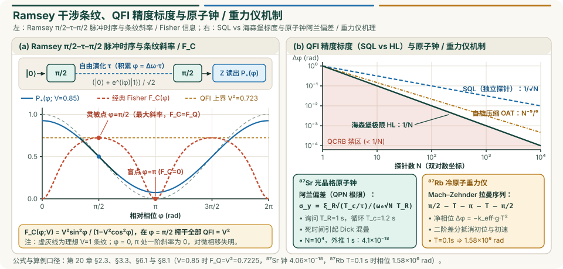

20｜量子传感与量子精密测量：从 Fisher 信息到海森堡极限
先修：第 03 章 （GHZ 态与偏迹）、第 05 章 （纯退相位信道与 Lindblad 衰减）、Q3 （Ramsey 干涉与 Hahn 自旋回波）。第 3.3 节就地定义根保真度，第 6.2 节先讲单模正交分量，再算光学压缩。若想深入一般混态距离或多模连续变量，可分别查第 13 章 和第 18 章第 9 节 。阅读路线：必读 ★ 第 1–2 节、第 3.2–3.3 节、第 4–5 节、第 6.1 节、第 7 节与第 8.1 节；进阶选读 ☆ 第 3.1 节（SLD 完整证明）、第 6.2 节（光学压缩与 LIGO O4）、第 8.1.3 节（量子照明）与第 8.2 节（HNLS 纠错传感）。
Q3 用 Ramsey 条纹读出驱动与能级的失谐。把失谐换成由待测磁场造成的频移，就可以把同一类实验用于量子传感。这里要回答的是：量子比特对环境磁场、温度、激光相位和杂散电荷如此敏感，稍微碰一下就退相干，难道不是它最大的缺点吗？在量子计算里确实如此，但在量子传感与量子精密测量 （quantum sensing and quantum metrology）里，工程师偏偏要把这个特性反过来用——把待测的磁场、重力梯度或引力波变成系统的演化相位，再通过精密干涉读出来，脆弱的量子比特就变成了极高灵敏度的物理探针。与尚需大规模容错才能落地的通用量子计算不同，量子传感已经在引力波天文台、光晶格原子钟和纳米磁成像领域进入实用或工程验证阶段。
全章八节路线速览（按需展开）
1. 量子技术的第三支柱：为什么“最怕噪声的比特”反而是最灵敏的探针？
1.1 计算、通信与传感：三根支柱的分工与第一性问题
在着手算公式之前，先用一句话把三根支柱的边界划清楚，免得把“造出好传感器”和“造出通用量子计算机”混为一谈：
量子计算 （第 06–11 章 ）：给定离散输入，运行深度可编程量子线路，目标是用远少于经典算法的资源输出可验证的离散答案；核心敌人是环境耦合带来的退相干，因此硬件设计竭力把比特调到对外场一阶不敏感的“甜点”（sweet spot）。量子通信与安全 （第 12 章 、第 18 章 ）：在远距离节点间传输量子态或分发抗窃听密钥；核心敌人是信道损耗与窃听干扰。量子传感与精密测量 （本章）：待测对象不是一段算法，而是外部自然界中一个未知的连续实参数 θ \theta θ B B B Δ g \Delta g Δ g ϕ \phi ϕ ω \omega ω
传感器设计的反直觉反转 就在这里：在量子计算芯片上，磁通噪声让能级劈裂 ω 0 ( B ) \omega_0(B) ω 0 ( B ) ∂ ω 0 ∂ B = γ s \frac{\partial\omega_0}{\partial B} = \gamma_s ∂ B ∂ ω 0 = γ s ϕ = γ s B τ \phi = \gamma_s B \tau ϕ = γ s B τ 换能系数 。换句话说，好的量子传感器并非“对外界彻底绝缘”，而是只对目标物理量敞开大门，同时尽量把其他无关噪声关在门外 。
从工作机制看，学界（Degen, Reinhard & Cappellaro, Rev. Mod. Phys. 2017）通常把量子传感分成三个台阶，并非所有叫“量子传感器”的设备都用到了多体纠缠：
第一台阶（分立量子能级） ：利用原子或固体缺陷天然稳定、高度一致的量子化能级跃迁标定外场（如传统微波原子钟、光学泵浦原子磁力计）。第二台阶（单探针量子相干与干涉） ：利用单个或彼此独立的量子叠加态累积相对相位，并借助脉冲序列操控干涉条纹（如单个金刚石 NV 色心 Ramsey/CPMG 磁力计、冷原子干涉重力仪、无纠缠光晶格钟）。第三台阶（多体量子纠缠与压缩） ：主动制备探针之间的非经典关联（如自旋压缩态、GHZ 态、光学压缩真空态），让测量不确定度突破同资源下独立探针的统计底线——这就是狭义的量子增强精密测量 （quantum-enhanced metrology）。
1.2 从相干相位到灵敏度单位 T / H z \mathrm{T/\sqrt{Hz}} T/ Hz
看传感论文时，初学者最先撞上的生词往往是一串奇怪的单位：n T / H z \mathrm{nT/\sqrt{Hz}} nT/ Hz f T / H z \mathrm{fT/\sqrt{Hz}} fT/ Hz r a d / H z \mathrm{rad/\sqrt{Hz}} rad/ Hz
设我们手里有 N N N γ s \gamma_s γ s r a d / ( s ⋅ T ) \mathrm{rad/(s\cdot T)} rad/ ( s ⋅ T ) B B B T \mathrm{T} T τ \tau τ s \mathrm{s} s ∣ 0 ⟩ |0\rangle ∣0 ⟩ ∣ 1 ⟩ |1\rangle ∣1 ⟩
ϕ = γ s B τ .
\phi = \gamma_s B \tau.
ϕ = γ s B τ . 我们在第 4 节会严格证明：N N N δ ϕ 1 = 1 N \delta\phi_1 = \frac{1}{\sqrt{N}} δ ϕ 1 = N 1 r a d \mathrm{rad} rad B = ϕ / ( γ s τ ) B = \phi / (\gamma_s\tau) B = ϕ / ( γ s τ )
δ B 1 = δ ϕ 1 γ s τ = 1 γ s τ N [ 单位： T ] .
\delta B_1 = \frac{\delta\phi_1}{\gamma_s \tau} = \frac{1}{\gamma_s \tau \sqrt{N}} \qquad [\text{单位：}\mathrm{T}].
δ B 1 = γ s τ δ ϕ 1 = γ s τ N 1 [ 单位： T ] . 现在把实验持续运行总挂钟时间 T T T s \mathrm{s} s t d t_d t d ν = T / τ \nu = T / \tau ν = T / τ ν \nu ν ν \sqrt{\nu} ν
δ B ( T ) = δ B 1 ν = 1 γ s τ N ⋅ τ T = 1 γ s N τ ⋅ 1 T .
\delta B(T) = \frac{\delta B_1}{\sqrt{\nu}} = \frac{1}{\gamma_s \tau \sqrt{N}} \cdot \sqrt{\frac{\tau}{T}} = \frac{1}{\gamma_s \sqrt{N \tau}} \cdot \frac{1}{\sqrt{T}}.
δ B ( T ) = ν δ B 1 = γ s τ N 1 ⋅ T τ = γ s N τ 1 ⋅ T 1 . 请仔细盯住等式右边的结构：总时长 T T T 1 / T 1/\sqrt{T} 1/ T 100 s 100\ \mathrm{s} 100 s 1 s 1\ \mathrm{s} 1 s 10 10 10 1 1 1 1 1 1 δ B \delta B δ B 磁场灵敏度 （sensitivity）η \eta η S N R = 1 \mathrm{SNR} = 1 SNR = 1
η ≡ δ B ( T ) T = 1 γ s N τ [ 单位： T ⋅ s 1 / 2 = T / H z ] .
\eta \equiv \delta B(T)\sqrt{T} = \frac{1}{\gamma_s \sqrt{N \tau}} \qquad \bigl[\text{单位：}\mathrm{T\cdot s^{1/2}} = \mathrm{T/\sqrt{Hz}}\bigr].
η ≡ δ B ( T ) T = γ s N τ 1 [ 单位： T ⋅ s 1/2 = T/ Hz ] . 这里用到了量纲等价 1 H z = 1 s − 1 1\ \mathrm{Hz} = 1\ \mathrm{s}^{-1} 1 Hz = 1 s − 1 s 1 / 2 = H z − 1 / 2 \mathrm{s}^{1/2} = \mathrm{Hz}^{-1/2} s 1/2 = Hz − 1/2 灵敏度为 5 n T / H z 5\ \mathrm{nT/\sqrt{Hz}} 5 nT/ Hz T = 1 s T = 1\ \mathrm{s} T = 1 s 5 n T 5\ \mathrm{nT} 5 nT T = 100 s T = 100\ \mathrm{s} T = 100 s 0.5 n T 0.5\ \mathrm{nT} 0.5 nT 数值越小 ，探头越灵敏 。
如果有不可忽略的死时间 t d > 0 t_d > 0 t d > 0 τ + t d \tau + t_d τ + t d ν = T / ( τ + t d ) \nu = T / (\tau + t_d) ν = T / ( τ + t d ) C ∈ ( 0 , 1 ] C \in (0, 1] C ∈ ( 0 , 1 ] e − ( τ / T 2 ) β e^{-(\tau/T_2)^\beta} e − ( τ / T 2 ) β
η r e a l = e ( τ / T 2 ) β C γ s N ⋅ τ + t d ∣ R ∣ τ .
\eta_{\mathrm{real}} = \frac{e^{(\tau/T_2)^\beta}}{C\,\gamma_s\sqrt{N}}\cdot\frac{\sqrt{\tau + t_d}}{|\mathcal R|\,\tau}.
η real = C γ s N e ( τ / T 2 ) β ⋅ ∣ R ∣ τ τ + t d . 这里 R = τ − 1 ∫ 0 τ y ( t ) b ( t ) d t \mathcal R=\tau^{-1}\int_0^\tau y(t)b(t)\,dt R = τ − 1 ∫ 0 τ y ( t ) b ( t ) d t b ( t ) b(t) b ( t ) B ( t ) = B b ( t ) B(t)=B b(t) B ( t ) = B b ( t ) y ( t ) y(t) y ( t ) b = y = 1 b=y=1 b = y = 1 C C C
这个式子立刻揭示了传感器的三大核心指标为什么必须打包报告 ：
灵敏度 η \eta η ：在给定噪声底下的单位根号带宽分辨能力；带宽（bandwidth） ：单轮时长 τ \tau τ η \eta η ∼ 1 / ( 2 τ ) \sim 1/(2\tau) ∼ 1/ ( 2 τ ) 探测体积 V V V ：把探针数 N N N 10 12 10^{12} 1 0 12 η \eta η 10 6 10^6 1 0 6
算例：单个金刚石 NV 电子自旋的理想直流与交流灵敏度
取室温金刚石中的单个氮–空位（NV）色心电子自旋：N = 1 N = 1 N = 1
γ e 2 π ≈ 28.025 G H z / T ⟹ γ e = 2 π × 28.025 × 10 9 r a d / ( s ⋅ T ) ≈ 1.7609 × 10 11 r a d / ( s ⋅ T ) .
\frac{\gamma_e}{2\pi} \approx 28.025\ \mathrm{GHz/T} \quad\Longrightarrow\quad \gamma_e = 2\pi \times 28.025 \times 10^9\ \mathrm{rad/(s\cdot T)} \approx 1.7609 \times 10^{11}\ \mathrm{rad/(s\cdot T)}.
2 π γ e ≈ 28.025 GHz/T ⟹ γ e = 2 π × 28.025 × 1 0 9 rad/ ( s ⋅ T ) ≈ 1.7609 × 1 0 11 rad/ ( s ⋅ T ) .
直流 Ramsey 探询 ：天然丰度金刚石中单 NV 的自由感应衰减时间典型值为 τ D C ≈ T 2 ∗ = 1 μ s = 10 − 6 s \tau_{\mathrm{DC}} \approx T_2^* = 1\ \mu\mathrm{s} = 10^{-6}\ \mathrm{s} τ DC ≈ T 2 ∗ = 1 μ s = 1 0 − 6 s τ D C = 10 − 3 s 1 / 2 \sqrt{\tau_{\mathrm{DC}}} = 10^{-3}\ \mathrm{s}^{1/2} τ DC = 1 0 − 3 s 1/2 C = 1 , t d = 0 C=1, t_d=0 C = 1 , t d = 0 e e e
η D C i d e a l = 1 1.7609 × 10 11 × 10 − 3 T / H z ≈ 5.679 × 10 − 9 T / H z = 5.68 n T / H z .
\eta_{\mathrm{DC}}^{\mathrm{ideal}} = \frac{1}{1.7609 \times 10^{11} \times 10^{-3}}\ \mathrm{T/\sqrt{Hz}} \approx 5.679 \times 10^{-9}\ \mathrm{T/\sqrt{Hz}} = 5.68\ \mathrm{nT/\sqrt{Hz}}.
η DC ideal = 1.7609 × 1 0 11 × 1 0 − 3 1 T/ Hz ≈ 5.679 × 1 0 − 9 T/ Hz = 5.68 nT/ Hz . 1 ms 探询的两种波形。 单位响应 ∣ R ∣ = 1 |\mathcal R|=1 ∣ R ∣ = 1 0.17958684 n T / H z 0.17958684\,\mathrm{nT/\sqrt{Hz}} 0.17958684 nT/ Hz ∣ R ∣ = 2 / π |\mathcal R|=2/\pi ∣ R ∣ = 2/ π 0.28209435 n T / H z 0.28209435\,\mathrm{nT/\sqrt{Hz}} 0.28209435 nT/ Hz C = 1 , t d = 0 C=1,t_d=0 C = 1 , t d = 0 数值程序
2. 经典参数估计：似然、经典 Fisher 信息（CFI）与 Cramér–Rao 下界
2.1 从观测频率反推未知参数：似然函数、得分函数与经典 Fisher 信息
现在进入严格的数学地基。假设物理实验固定了一套探测装置，它把未知的连续实参数 θ ∈ R \theta \in \mathbb{R} θ ∈ R x ∈ X x \in \mathcal{X} x ∈ X p ( x ∣ θ ) p(x \mid \theta) p ( x ∣ θ ) p ( x ∣ θ ) ≥ 0 p(x \mid \theta) \ge 0 p ( x ∣ θ ) ≥ 0 ∑ x p ( x ∣ θ ) = 1 \sum_x p(x \mid \theta) = 1 ∑ x p ( x ∣ θ ) = 1 估计量 ，estimator）θ ^ ( x ) \hat\theta(x) θ ^ ( x ) θ \theta θ
一个自然的问题冒了出来：无论数据分析算法写得多巧妙，只要概率分布族 p ( x ∣ θ ) p(x \mid \theta) p ( x ∣ θ ) Δ θ = Var ( θ ^ ) \Delta\theta = \sqrt{\operatorname{Var}(\hat\theta)} Δ θ = Var ( θ ^ )
直觉上，答案取决于“参数 θ \theta θ d θ d\theta d θ p ( x ∣ θ ) p(x \mid \theta) p ( x ∣ θ ) p ( x ∣ θ ) p(x \mid \theta) p ( x ∣ θ ) θ \theta θ θ \theta θ θ \theta θ θ \theta θ
把“对数据 x x x θ \theta θ θ \theta θ 似然函数 （likelihood function）L ( θ ; x ) = p ( x ∣ θ ) L(\theta; x) = p(x \mid \theta) L ( θ ; x ) = p ( x ∣ θ ) ln \ln ln 对数似然函数 ℓ ( θ ; x ) = ln p ( x ∣ θ ) \ell(\theta; x) = \ln p(x \mid \theta) ℓ ( θ ; x ) = ln p ( x ∣ θ ) θ \theta θ 得分函数 （score function）：
s ( x ; θ ) ≡ ∂ ∂ θ ln p ( x ∣ θ ) = ∂ θ p ( x ∣ θ ) p ( x ∣ θ ) ,
s(x; \theta) \equiv \frac{\partial}{\partial\theta}\ln p(x \mid \theta) = \frac{\partial_\theta p(x \mid \theta)}{p(x \mid \theta)},
s ( x ; θ ) ≡ ∂ θ ∂ ln p ( x ∣ θ ) = p ( x ∣ θ ) ∂ θ p ( x ∣ θ ) , 衡量的是相对概率变化率。先顺手验证一个极有用的恒等式——在真实参数 θ \theta θ
E θ [ s ( X ; θ ) ] = ∑ x p ( x ∣ θ ) ∂ θ p ( x ∣ θ ) p ( x ∣ θ ) = ∑ x ∂ θ p ( x ∣ θ ) = ∂ ∂ θ ( ∑ x p ( x ∣ θ ) ) = ∂ ∂ θ ( 1 ) = 0.
\mathbb{E}_\theta\bigl[s(X; \theta)\bigr] = \sum_x p(x \mid \theta)\,\frac{\partial_\theta p(x \mid \theta)}{p(x \mid \theta)} = \sum_x \partial_\theta p(x \mid \theta) = \frac{\partial}{\partial\theta}\left(\sum_x p(x \mid \theta)\right) = \frac{\partial}{\partial\theta}(1) = 0.
E θ [ s ( X ; θ ) ] = x ∑ p ( x ∣ θ ) p ( x ∣ θ ) ∂ θ p ( x ∣ θ ) = x ∑ ∂ θ p ( x ∣ θ ) = ∂ θ ∂ ( x ∑ p ( x ∣ θ ) ) = ∂ θ ∂ ( 1 ) = 0. 既然得分函数的均值恒为 0 0 0 方差 （即二阶矩）刻画。这就是统计学家罗纳德·费舍尔（R. A. Fisher, 1925）定义的经典 Fisher 信息 （Classical Fisher Information, CFI）：
F C ( θ ) ≡ Var θ [ s ( X ; θ ) ] = E θ [ ( ∂ ln p ( X ∣ θ ) ∂ θ ) 2 ] = ∑ x : p ( x ∣ θ ) > 0 ( ∂ θ p ( x ∣ θ ) ) 2 p ( x ∣ θ ) .
F_C(\theta) \equiv \operatorname{Var}_\theta\bigl[s(X; \theta)\bigr] = \mathbb{E}_\theta\!\left[\left(\frac{\partial\ln p(X \mid \theta)}{\partial\theta}\right)^2\right] = \sum_{x:\,p(x\mid\theta)>0} \frac{\bigl(\partial_\theta p(x \mid \theta)\bigr)^2}{p(x \mid \theta)}.
F C ( θ ) ≡ Var θ [ s ( X ; θ ) ] = E θ [ ( ∂ θ ∂ ln p ( X ∣ θ ) ) 2 ] = x : p ( x ∣ θ ) > 0 ∑ p ( x ∣ θ ) ( ∂ θ p ( x ∣ θ ) ) 2 . 请留心它的量纲与可加性：
量纲 ：p ( x ∣ θ ) p(x \mid \theta) p ( x ∣ θ ) F C ( θ ) F_C(\theta) F C ( θ ) [ θ ] − 2 [\theta]^{-2} [ θ ] − 2 θ = ϕ \theta = \phi θ = ϕ F C ( ϕ ) F_C(\phi) F C ( ϕ ) θ = ω \theta = \omega θ = ω r a d / s \mathrm{rad/s} rad/s F C ( ω ) F_C(\omega) F C ( ω ) s 2 \mathrm{s}^2 s 2 独立重复的可加性 ：做 ν \nu ν p ( x ⃗ ∣ θ ) = ∏ k = 1 ν p ( x k ∣ θ ) p(\vec x \mid \theta) = \prod_{k=1}^\nu p(x_k \mid \theta) p ( x ∣ θ ) = ∏ k = 1 ν p ( x k ∣ θ ) ln p ( x ⃗ ∣ θ ) = ∑ k = 1 ν ln p ( x k ∣ θ ) \ln p(\vec x \mid \theta) = \sum_{k=1}^\nu \ln p(x_k \mid \theta) ln p ( x ∣ θ ) = ∑ k = 1 ν ln p ( x k ∣ θ ) ν \nu ν
F C ( ν ) ( θ ) = ν F C ( θ ) .
F_C^{(\nu)}(\theta) = \nu\, F_C(\theta).
F C ( ν ) ( θ ) = ν F C ( θ ) . 2.2 Cramér–Rao 下界的完整证明与适用边界
设 θ ^ ( x ) \hat\theta(x) θ ^ ( x ) θ \theta θ 局部无偏估计量 （locally unbiased estimator），即在参数工作点 θ \theta θ
E θ [ θ ^ ] = ∑ x θ ^ ( x ) p ( x ∣ θ ) = θ .
\mathbb{E}_\theta[\hat\theta] = \sum_x \hat\theta(x)\, p(x \mid \theta) = \theta.
E θ [ θ ^ ] = x ∑ θ ^ ( x ) p ( x ∣ θ ) = θ . 对等式两边同时关于 θ \theta θ 1 1 1 θ \theta θ
1 = ∑ x θ ^ ( x ) ∂ θ p ( x ∣ θ ) .
1 = \sum_x \hat\theta(x)\,\partial_\theta p(x \mid \theta).
1 = x ∑ θ ^ ( x ) ∂ θ p ( x ∣ θ ) . 因为前面刚证过 ∑ x ∂ θ p ( x ∣ θ ) = 0 \sum_x \partial_\theta p(x \mid \theta) = 0 ∑ x ∂ θ p ( x ∣ θ ) = 0 θ ∑ x ∂ θ p ( x ∣ θ ) \theta \sum_x \partial_\theta p(x \mid \theta) θ ∑ x ∂ θ p ( x ∣ θ )
1 = ∑ x ( θ ^ ( x ) − θ ) ∂ θ p ( x ∣ θ ) = ∑ x : p ( x ∣ θ ) > 0 [ ( θ ^ ( x ) − θ ) p ( x ∣ θ ) ] ⏟ u x ⋅ [ ∂ θ p ( x ∣ θ ) p ( x ∣ θ ) ] ⏟ v x .
1 = \sum_x \bigl(\hat\theta(x) - \theta\bigr)\,\partial_\theta p(x \mid \theta) = \sum_{x:\,p(x\mid\theta)>0} \underbrace{\Bigl[\bigl(\hat\theta(x) - \theta\bigr)\sqrt{p(x \mid \theta)}\Bigr]}_{u_x} \cdot \underbrace{\left[\frac{\partial_\theta p(x \mid \theta)}{\sqrt{p(x \mid \theta)}}\right]}_{v_x}.
1 = x ∑ ( θ ^ ( x ) − θ ) ∂ θ p ( x ∣ θ ) = x : p ( x ∣ θ ) > 0 ∑ u x [ ( θ ^ ( x ) − θ ) p ( x ∣ θ ) ] ⋅ v x [ p ( x ∣ θ ) ∂ θ p ( x ∣ θ ) ] . 对实数列 u x , v x u_x, v_x u x , v x ( ∑ x u x v x ) 2 ≤ ( ∑ x u x 2 ) ( ∑ x v x 2 ) \bigl(\sum_x u_x v_x\bigr)^2 \le \bigl(\sum_x u_x^2\bigr)\bigl(\sum_x v_x^2\bigr) ( ∑ x u x v x ) 2 ≤ ( ∑ x u x 2 ) ( ∑ x v x 2 )
1 2 ≤ ( ∑ x ( θ ^ ( x ) − θ ) 2 p ( x ∣ θ ) ) ( ∑ x : p ( x ∣ θ ) > 0 ( ∂ θ p ( x ∣ θ ) ) 2 p ( x ∣ θ ) ) = Var θ ( θ ^ ) ⋅ F C ( θ ) .
1^2 \le \left(\sum_x \bigl(\hat\theta(x) - \theta\bigr)^2 p(x \mid \theta)\right) \left(\sum_{x:\,p(x\mid\theta)>0} \frac{\bigl(\partial_\theta p(x \mid \theta)\bigr)^2}{p(x \mid \theta)}\right) = \operatorname{Var}_\theta(\hat\theta) \cdot F_C(\theta).
1 2 ≤ ( x ∑ ( θ ^ ( x ) − θ ) 2 p ( x ∣ θ ) ) x : p ( x ∣ θ ) > 0 ∑ p ( x ∣ θ ) ( ∂ θ p ( x ∣ θ ) ) 2 = Var θ ( θ ^ ) ⋅ F C ( θ ) . 把 F C ( θ ) > 0 F_C(\theta) > 0 F C ( θ ) > 0 ν \nu ν F C ( ν ) ( θ ) = ν F C ( θ ) F_C^{(\nu)}(\theta) = \nu F_C(\theta) F C ( ν ) ( θ ) = ν F C ( θ ) 经典 Cramér–Rao 下界 （Cramér–Rao Lower Bound, CRLB；Rao 1945，Cramér 1946）：
Var θ ( θ ^ ) ≥ 1 ν F C ( θ ) ⟺ Δ θ ≥ 1 ν F C ( θ ) .
\operatorname{Var}_\theta(\hat\theta) \ge \frac{1}{\nu\, F_C(\theta)} \qquad\Longleftrightarrow\qquad \Delta\theta \ge \frac{1}{\sqrt{\nu\, F_C(\theta)}}.
Var θ ( θ ^ ) ≥ ν F C ( θ ) 1 ⟺ Δ θ ≥ ν F C ( θ ) 1 . 记住两条极其重要的适用边界 ：
渐近可达，有限样本未必可达 ：当样本数 ν → ∞ \nu \to \infty ν → ∞ ν \nu ν 有偏估计量可局部“越界”但毫无胜算 ：如果故意把估计量硬编码为常数 θ ^ ( x ) ≡ 0.5 \hat\theta(x) \equiv 0.5 θ ^ ( x ) ≡ 0.5 0 0 0 0.5 0.5 0.5 b ( θ ) = E θ [ θ ^ ] − θ b(\theta) = \mathbb{E}_\theta[\hat\theta] - \theta b ( θ ) = E θ [ θ ^ ] − θ Var ( θ ^ ) ≥ [ 1 + b ′ ( θ ) ] 2 ν F C ( θ ) \operatorname{Var}(\hat\theta) \ge \frac{[1 + b'(\theta)]^2}{\nu F_C(\theta)} Var ( θ ^ ) ≥ ν F C ( θ ) [ 1 + b ′ ( θ ) ] 2
2.3 逐步手算 Ramsey 干涉：为什么 ϕ = π / 2 \phi = \pi/2 ϕ = π /2 ϕ = 0 \phi = 0 ϕ = 0
拿我们在 Q3 第 7 节 熟悉的老朋友——单比特 Ramsey 干涉仪——来把经典 Fisher 信息亲手算到底。
第一步：理想无噪 Ramsey 的 F C ( ϕ ) F_C(\phi) F C ( ϕ )
初态准备在赤道叠加态 ∣ + ⟩ = ∣ 0 ⟩ + ∣ 1 ⟩ 2 |+\rangle = \frac{|0\rangle + |1\rangle}{\sqrt{2}} ∣ + ⟩ = 2 ∣0 ⟩ + ∣1 ⟩ U ( ϕ ) = e − i ϕ Z / 2 = diag ( e − i ϕ / 2 , e + i ϕ / 2 ) U(\phi) = e^{-i\phi Z/2} = \operatorname{diag}(e^{-i\phi/2}, e^{+i\phi/2}) U ( ϕ ) = e − i ϕZ /2 = diag ( e − i ϕ /2 , e + i ϕ /2 ) e − i ϕ / 2 e^{-i\phi/2} e − i ϕ /2
∣ ψ ( ϕ ) ⟩ = ∣ 0 ⟩ + e i ϕ ∣ 1 ⟩ 2 .
|\psi(\phi)\rangle = \frac{|0\rangle + e^{i\phi}|1\rangle}{\sqrt{2}}.
∣ ψ ( ϕ )⟩ = 2 ∣0 ⟩ + e i ϕ ∣1 ⟩ . 随后在 X X X { ∣ + ⟩ , ∣ − ⟩ } \{|+\rangle, |-\rangle\} { ∣ + ⟩ , ∣ − ⟩}
⟨ + ∣ ψ ( ϕ ) ⟩ = 1 + e i ϕ 2 , P ( + ∣ ϕ ) = ∣ 1 + e i ϕ 2 ∣ 2 = ( 1 + e i ϕ ) ( 1 + e − i ϕ ) 4 = 2 + 2 cos ϕ 4 = 1 + cos ϕ 2 ,
\langle + | \psi(\phi)\rangle = \frac{1 + e^{i\phi}}{2}, \qquad P(+ \mid \phi) = \left|\frac{1 + e^{i\phi}}{2}\right|^2 = \frac{(1 + e^{i\phi})(1 + e^{-i\phi})}{4} = \frac{2 + 2\cos\phi}{4} = \frac{1 + \cos\phi}{2},
⟨ + ∣ ψ ( ϕ )⟩ = 2 1 + e i ϕ , P ( + ∣ ϕ ) = 2 1 + e i ϕ 2 = 4 ( 1 + e i ϕ ) ( 1 + e − i ϕ ) = 4 2 + 2 cos ϕ = 2 1 + cos ϕ , ⟨ − ∣ ψ ( ϕ ) ⟩ = 1 − e i ϕ 2 , P ( − ∣ ϕ ) = ∣ 1 − e i ϕ 2 ∣ 2 = 2 − 2 cos ϕ 4 = 1 − cos ϕ 2 .
\langle - | \psi(\phi)\rangle = \frac{1 - e^{i\phi}}{2}, \qquad P(- \mid \phi) = \left|\frac{1 - e^{i\phi}}{2}\right|^2 = \frac{2 - 2\cos\phi}{4} = \frac{1 - \cos\phi}{2}.
⟨ − ∣ ψ ( ϕ )⟩ = 2 1 − e i ϕ , P ( − ∣ ϕ ) = 2 1 − e i ϕ 2 = 4 2 − 2 cos ϕ = 2 1 − cos ϕ . 先做归一化回验：P ( + ∣ ϕ ) + P ( − ∣ ϕ ) = 1 + cos ϕ 2 + 1 − cos ϕ 2 = 1 P(+ \mid \phi) + P(- \mid \phi) = \frac{1+\cos\phi}{2} + \frac{1-\cos\phi}{2} = 1 P ( + ∣ ϕ ) + P ( − ∣ ϕ ) = 2 1 + c o s ϕ + 2 1 − c o s ϕ = 1 ϕ \phi ϕ
∂ P ( + ∣ ϕ ) ∂ ϕ = − sin ϕ 2 , ∂ P ( − ∣ ϕ ) ∂ ϕ = + sin ϕ 2 .
\frac{\partial P(+ \mid \phi)}{\partial\phi} = -\frac{\sin\phi}{2}, \qquad \frac{\partial P(- \mid \phi)}{\partial\phi} = +\frac{\sin\phi}{2}.
∂ ϕ ∂ P ( + ∣ ϕ ) = − 2 sin ϕ , ∂ ϕ ∂ P ( − ∣ ϕ ) = + 2 sin ϕ . 将两项代入 F C ( ϕ ) F_C(\phi) F C ( ϕ )
F C ( ϕ ) = ( − 1 2 sin ϕ ) 2 1 + cos ϕ 2 + ( + 1 2 sin ϕ ) 2 1 − cos ϕ 2 = sin 2 ϕ 2 ( 1 1 + cos ϕ + 1 1 − cos ϕ ) = sin 2 ϕ 2 ⋅ ( 1 − cos ϕ ) + ( 1 + cos ϕ ) 1 − cos 2 ϕ = sin 2 ϕ 2 ⋅ 2 sin 2 ϕ = 1 ( ϕ ∈ ( 0 , π ) ) .
\begin{aligned}
F_C(\phi)
&= \frac{\bigl(-\frac{1}{2}\sin\phi\bigr)^2}{\frac{1+\cos\phi}{2}}
+ \frac{\bigl(+\frac{1}{2}\sin\phi\bigr)^2}{\frac{1-\cos\phi}{2}} \\
&= \frac{\sin^2\phi}{2}\left(\frac{1}{1+\cos\phi} + \frac{1}{1-\cos\phi}\right) \\
&= \frac{\sin^2\phi}{2} \cdot \frac{(1-\cos\phi) + (1+\cos\phi)}{1 - \cos^2\phi} \\
&= \frac{\sin^2\phi}{2} \cdot \frac{2}{\sin^2\phi}
= 1 \qquad \bigl(\phi \in (0, \pi)\bigr).
\end{aligned}
F C ( ϕ ) = 2 1 + c o s ϕ ( − 2 1 sin ϕ ) 2 + 2 1 − c o s ϕ ( + 2 1 sin ϕ ) 2 = 2 sin 2 ϕ ( 1 + cos ϕ 1 + 1 − cos ϕ 1 ) = 2 sin 2 ϕ ⋅ 1 − cos 2 ϕ ( 1 − cos ϕ ) + ( 1 + cos ϕ ) = 2 sin 2 ϕ ⋅ sin 2 ϕ 2 = 1 ( ϕ ∈ ( 0 , π ) ) . 于是经过 ν \nu ν Δ ϕ ≥ 1 ν \Delta\phi \ge \frac{1}{\sqrt{\nu}} Δ ϕ ≥ ν 1
第二步：解开初学者的经典困惑——既然理想结果恒等于 1 1 1 ϕ = π / 2 \phi = \pi/2 ϕ = π /2 ϕ = 0 \phi = 0 ϕ = 0
先看理想情形（V = 1 V = 1 V = 1 ϕ → 0 + \phi \to 0^+ ϕ → 0 + ∣ ∂ P ( + ) ∂ ϕ ∣ = sin ϕ 2 → 0 \left|\frac{\partial P(+)}{\partial\phi}\right| = \frac{\sin\phi}{2} \to 0 ∂ ϕ ∂ P ( + ) = 2 s i n ϕ → 0 P ( + ) ( 1 − P ( + ) ) = sin ϕ 2 \sqrt{P(+)(1-P(+))} = \frac{\sin\phi}{2} P ( + ) ( 1 − P ( + )) = 2 s i n ϕ 完全相同的速率 趋向于零，分子分母里的 sin 2 ϕ \sin^2\phi sin 2 ϕ 0 / 0 = 1 0/0 = 1 0/0 = 1
把真实世界的条纹可见度 V ∈ ( 0 , 1 ) V \in (0, 1) V ∈ ( 0 , 1 ) V = e − γ t V = e^{-\gamma t} V = e − γ t
P ( + ∣ ϕ ; V ) = 1 + V cos ϕ 2 , P ( − ∣ ϕ ; V ) = 1 − V cos ϕ 2 .
P(+ \mid \phi; V) = \frac{1 + V\cos\phi}{2}, \qquad P(- \mid \phi; V) = \frac{1 - V\cos\phi}{2}.
P ( + ∣ ϕ ; V ) = 2 1 + V cos ϕ , P ( − ∣ ϕ ; V ) = 2 1 − V cos ϕ . 再次完整代入经典 Fisher 信息定义：
F C ( ϕ ; V ) = ( − V 2 sin ϕ ) 2 1 + V cos ϕ 2 + ( + V 2 sin ϕ ) 2 1 − V cos ϕ 2 = V 2 sin 2 ϕ 2 ⋅ 2 1 − V 2 cos 2 ϕ = V 2 sin 2 ϕ 1 − V 2 cos 2 ϕ .
\begin{aligned}
F_C(\phi; V)
&= \frac{\bigl(-\frac{V}{2}\sin\phi\bigr)^2}{\frac{1 + V\cos\phi}{2}}
+ \frac{\bigl(+\frac{V}{2}\sin\phi\bigr)^2}{\frac{1 - V\cos\phi}{2}} \\
&= \frac{V^2\sin^2\phi}{2} \cdot \frac{2}{1 - V^2\cos^2\phi}
= \frac{V^2\sin^2\phi}{1 - V^2\cos^2\phi}.
\end{aligned}
F C ( ϕ ; V ) = 2 1 + V c o s ϕ ( − 2 V sin ϕ ) 2 + 2 1 − V c o s ϕ ( + 2 V sin ϕ ) 2 = 2 V 2 sin 2 ϕ ⋅ 1 − V 2 cos 2 ϕ 2 = 1 − V 2 cos 2 ϕ V 2 sin 2 ϕ . 代入具体数字 V = 0.90 V = 0.90 V = 0.90 V 2 = 0.81 V^2 = 0.81 V 2 = 0.81
斜率最大点 ϕ = π / 2 \phi = \pi/2 ϕ = π /2 ：sin ( π / 2 ) = 1 \sin(\pi/2) = 1 sin ( π /2 ) = 1 cos ( π / 2 ) = 0 \cos(\pi/2) = 0 cos ( π /2 ) = 0
F C ( π / 2 ; 0.90 ) = 0.81 × 1 1 − 0 = 0.81 = V 2 .
F_C(\pi/2; 0.90) = \frac{0.81 \times 1}{1 - 0} = 0.81 = V^2.
F C ( π /2 ; 0.90 ) = 1 − 0 0.81 × 1 = 0.81 = V 2 . 这里是 F C ( ϕ ; V ) F_C(\phi; V) F C ( ϕ ; V )
极值点（波峰）ϕ = 0 \phi = 0 ϕ = 0 ：sin 0 = 0 \sin 0 = 0 sin 0 = 0 1 − V 2 = 1 − 0.81 = 0.19 > 0 1 - V^2 = 1 - 0.81 = 0.19 > 0 1 − V 2 = 1 − 0.81 = 0.19 > 0
F C ( 0 ; 0.90 ) = 0 0.19 = 0 , Δ ϕ ≥ 1 ν ⋅ 0 = ∞ .
F_C(0; 0.90) = \frac{0}{0.19} = 0, \qquad \Delta\phi \ge \frac{1}{\sqrt{\nu\cdot 0}} = \infty.
F C ( 0 ; 0.90 ) = 0.19 0 = 0 , Δ ϕ ≥ ν ⋅ 0 1 = ∞. ϕ = 0 \phi = 0 ϕ = 0 ϕ = π \phi = \pi ϕ = π V = 1 V = 1 V = 1 ϕ = 0 \phi = 0 ϕ = 0 cos ( + ϵ ) = cos ( − ϵ ) \cos(+\epsilon) = \cos(-\epsilon) cos ( + ϵ ) = cos ( − ϵ ) π / 2 \pi/2 π /2 90 ∘ 90^\circ 9 0 ∘ Y Y Y P ( + y ) = 1 + V sin ϕ 2 P(+_y) = \frac{1 + V\sin\phi}{2} P ( + y ) = 2 1 + V s i n ϕ ϕ ≈ 0 \phi \approx 0 ϕ ≈ 0
3. 量子 Fisher 信息（QFI）与量子 Cramér–Rao 界（QCRB）
3.1 进阶选读：对称对数导数（SLD）与量子 Cramér–Rao 界的完整推导
经典 Fisher 信息 F C ( θ ) F_C(\theta) F C ( θ ) 选定了哪一套测量基 。对同一个携带参数 θ \theta θ ρ θ \rho_\theta ρ θ ∣ ψ ( ϕ ) ⟩ = ∣ 0 ⟩ + e i ϕ ∣ 1 ⟩ 2 |\psi(\phi)\rangle = \frac{|0\rangle + e^{i\phi}|1\rangle}{\sqrt{2}} ∣ ψ ( ϕ )⟩ = 2 ∣0 ⟩ + e i ϕ ∣1 ⟩ Z Z Z P ( 0 ) = P ( 1 ) = 1 / 2 P(0) = P(1) = 1/2 P ( 0 ) = P ( 1 ) = 1/2 ϕ \phi ϕ F C = 0 F_C = 0 F C = 0 X X X Y Y Y F C = 1 F_C = 1 F C = 1
这就引出了量子精密测量的核心追问：如果允许我们遍历所有合法量子测量（任意 POVM { E x } \{E_x\} { E x } E x ⪰ 0 E_x \succeq 0 E x ⪰ 0 ∑ x E x = I \sum_x E_x = I ∑ x E x = I ρ θ \rho_\theta ρ θ
F Q ( ρ θ ) ≡ max { E x } F C ( { p ( x ∣ θ ) = Tr ( E x ρ θ ) } ) .
F_Q(\rho_\theta) \equiv \max_{\{E_x\}} F_C\!\Bigl(\bigl\{p(x \mid \theta) = \operatorname{Tr}(E_x \rho_\theta)\bigr\}\Bigr).
F Q ( ρ θ ) ≡ { E x } max F C ( { p ( x ∣ θ ) = Tr ( E x ρ θ ) } ) . 答案来自 Helstrom（1967）与 Braunstein–Caves（1994）的奠基定理。在经典概率里，我们把导数 ∂ θ p \partial_\theta p ∂ θ p p p p s = ∂ θ ln p s = \partial_\theta\ln p s = ∂ θ ln p ρ θ \rho_\theta ρ θ ∂ θ ρ θ \partial_\theta\rho_\theta ∂ θ ρ θ ρ θ ( ∂ θ ρ θ ) ≠ ( ∂ θ ρ θ ) ρ θ \rho_\theta (\partial_\theta\rho_\theta) \neq (\partial_\theta\rho_\theta)\rho_\theta ρ θ ( ∂ θ ρ θ ) = ( ∂ θ ρ θ ) ρ θ 对称对数导数 （Symmetric Logarithmic Derivative, SLD）L θ = L θ † L_\theta = L_\theta^\dagger L θ = L θ †
∂ ρ θ ∂ θ = 1 2 ( ρ θ L θ + L θ ρ θ ) .
\frac{\partial\rho_\theta}{\partial\theta} = \frac{1}{2}\bigl(\rho_\theta L_\theta + L_\theta \rho_\theta\bigr).
∂ θ ∂ ρ θ = 2 1 ( ρ θ L θ + L θ ρ θ ) . 用 L θ L_\theta L θ 量子 Fisher 信息 （Quantum Fisher Information, QFI）：
F Q ( ρ θ ) ≡ Tr ( ρ θ L θ 2 ) = Tr ( ( ∂ θ ρ θ ) L θ ) .
F_Q(\rho_\theta) \equiv \operatorname{Tr}\bigl(\rho_\theta L_\theta^2\bigr) = \operatorname{Tr}\bigl((\partial_\theta\rho_\theta)\, L_\theta\bigr).
F Q ( ρ θ ) ≡ Tr ( ρ θ L θ 2 ) = Tr ( ( ∂ θ ρ θ ) L θ ) . （验证第二个等号：Tr [ ( ∂ θ ρ θ ) L θ ] = 1 2 Tr [ ( ρ θ L θ + L θ ρ θ ) L θ ] = 1 2 Tr ( ρ θ L θ 2 ) + 1 2 Tr ( L θ ρ θ L θ ) = Tr ( ρ θ L θ 2 ) \operatorname{Tr}[(\partial_\theta\rho_\theta) L_\theta] = \frac{1}{2}\operatorname{Tr}[(\rho_\theta L_\theta + L_\theta\rho_\theta) L_\theta] = \frac{1}{2}\operatorname{Tr}(\rho_\theta L_\theta^2) + \frac{1}{2}\operatorname{Tr}(L_\theta\rho_\theta L_\theta) = \operatorname{Tr}(\rho_\theta L_\theta^2) Tr [( ∂ θ ρ θ ) L θ ] = 2 1 Tr [( ρ θ L θ + L θ ρ θ ) L θ ] = 2 1 Tr ( ρ θ L θ 2 ) + 2 1 Tr ( L θ ρ θ L θ ) = Tr ( ρ θ L θ 2 )
下面用六行严格代数证明 Braunstein–Caves 定理 ：对任意 POVM { E x } \{E_x\} { E x } F Q ( ρ θ ) F_Q(\rho_\theta) F Q ( ρ θ )
对任意满足 p x = Tr ( E x ρ θ ) > 0 p_x = \operatorname{Tr}(E_x \rho_\theta) > 0 p x = Tr ( E x ρ θ ) > 0
∂ θ p x = Tr ( E x ∂ θ ρ θ ) = 1 2 Tr ( E x ρ θ L θ + E x L θ ρ θ ) .
\partial_\theta p_x = \operatorname{Tr}\bigl(E_x\,\partial_\theta\rho_\theta\bigr) = \frac{1}{2}\operatorname{Tr}\bigl(E_x \rho_\theta L_\theta + E_x L_\theta \rho_\theta\bigr).
∂ θ p x = Tr ( E x ∂ θ ρ θ ) = 2 1 Tr ( E x ρ θ L θ + E x L θ ρ θ ) . 因为 E x , ρ θ , L θ E_x, \rho_\theta, L_\theta E x , ρ θ , L θ ( E x ρ θ L θ ) † = L θ ρ θ E x (E_x \rho_\theta L_\theta)^\dagger = L_\theta \rho_\theta E_x ( E x ρ θ L θ ) † = L θ ρ θ E x Tr ( E x L θ ρ θ ) = Tr ( L θ ρ θ E x ) = [ Tr ( E x ρ θ L θ ) ] ∗ \operatorname{Tr}(E_x L_\theta \rho_\theta) = \operatorname{Tr}(L_\theta \rho_\theta E_x) = \bigl[\operatorname{Tr}(E_x \rho_\theta L_\theta)\bigr]^* Tr ( E x L θ ρ θ ) = Tr ( L θ ρ θ E x ) = [ Tr ( E x ρ θ L θ ) ] ∗ 2 2 2
∂ θ p x = Re Tr ( E x ρ θ L θ ) = Re Tr ( E x L θ ρ θ ) .
\partial_\theta p_x = \operatorname{Re}\operatorname{Tr}\bigl(E_x \rho_\theta L_\theta\bigr) = \operatorname{Re}\operatorname{Tr}\bigl(E_x L_\theta \rho_\theta\bigr).
∂ θ p x = Re Tr ( E x ρ θ L θ ) = Re Tr ( E x L θ ρ θ ) . 构造两个辅助矩阵 A x = E x ρ θ A_x = \sqrt{E_x}\sqrt{\rho_\theta} A x = E x ρ θ B x = E x L θ ρ θ B_x = \sqrt{E_x} L_\theta \sqrt{\rho_\theta} B x = E x L θ ρ θ E x ⪰ 0 E_x \succeq 0 E x ⪰ 0 ρ θ ⪰ 0 \rho_\theta \succeq 0 ρ θ ⪰ 0
Tr ( A x † B x ) = Tr ( ρ θ E x E x L θ ρ θ ) = Tr ( E x L θ ρ θ ) ,
\operatorname{Tr}(A_x^\dagger B_x) = \operatorname{Tr}\bigl(\sqrt{\rho_\theta}\sqrt{E_x}\sqrt{E_x} L_\theta \sqrt{\rho_\theta}\bigr) = \operatorname{Tr}\bigl(E_x L_\theta \rho_\theta\bigr),
Tr ( A x † B x ) = Tr ( ρ θ E x E x L θ ρ θ ) = Tr ( E x L θ ρ θ ) , Tr ( A x † A x ) = Tr ( ρ θ E x ρ θ ) = Tr ( E x ρ θ ) = p x ,
\operatorname{Tr}(A_x^\dagger A_x) = \operatorname{Tr}\bigl(\sqrt{\rho_\theta} E_x \sqrt{\rho_\theta}\bigr) = \operatorname{Tr}(E_x \rho_\theta) = p_x,
Tr ( A x † A x ) = Tr ( ρ θ E x ρ θ ) = Tr ( E x ρ θ ) = p x , Tr ( B x † B x ) = Tr ( ρ θ L θ E x L θ ρ θ ) = Tr ( E x L θ ρ θ L θ ) .
\operatorname{Tr}(B_x^\dagger B_x) = \operatorname{Tr}\bigl(\sqrt{\rho_\theta} L_\theta E_x L_\theta \sqrt{\rho_\theta}\bigr) = \operatorname{Tr}\bigl(E_x L_\theta \rho_\theta L_\theta\bigr).
Tr ( B x † B x ) = Tr ( ρ θ L θ E x L θ ρ θ ) = Tr ( E x L θ ρ θ L θ ) . 利用 ∣ Re z ∣ 2 ≤ ∣ z ∣ 2 |\operatorname{Re} z|^2 \le |z|^2 ∣ Re z ∣ 2 ≤ ∣ z ∣ 2 ∣ Tr ( A x † B x ) ∣ 2 ≤ Tr ( A x † A x ) Tr ( B x † B x ) |\operatorname{Tr}(A_x^\dagger B_x)|^2 \le \operatorname{Tr}(A_x^\dagger A_x)\operatorname{Tr}(B_x^\dagger B_x) ∣ Tr ( A x † B x ) ∣ 2 ≤ Tr ( A x † A x ) Tr ( B x † B x )
( ∂ θ p x ) 2 = ( Re Tr ( A x † B x ) ) 2 ≤ ∣ Tr ( A x † B x ) ∣ 2 ≤ p x ⋅ Tr ( E x L θ ρ θ L θ ) .
(\partial_\theta p_x)^2 = \bigl(\operatorname{Re}\operatorname{Tr}(A_x^\dagger B_x)\bigr)^2 \le \bigl|\operatorname{Tr}(A_x^\dagger B_x)\bigr|^2 \le p_x \cdot \operatorname{Tr}\bigl(E_x L_\theta \rho_\theta L_\theta\bigr).
( ∂ θ p x ) 2 = ( Re Tr ( A x † B x ) ) 2 ≤ Tr ( A x † B x ) 2 ≤ p x ⋅ Tr ( E x L θ ρ θ L θ ) . 两边除以 p x > 0 p_x > 0 p x > 0 x x x ∑ x E x = I \sum_x E_x = I ∑ x E x = I
F C ( { E x } ) = ∑ x : p x > 0 ( ∂ θ p x ) 2 p x ≤ Tr ( ( ∑ x E x ) L θ ρ θ L θ ) = Tr ( ρ θ L θ 2 ) = F Q ( ρ θ ) .
F_C(\{E_x\}) = \sum_{x:\,p_x > 0} \frac{(\partial_\theta p_x)^2}{p_x} \le \operatorname{Tr}\!\left(\Bigl(\sum_x E_x\Bigr) L_\theta \rho_\theta L_\theta\right) = \operatorname{Tr}\bigl(\rho_\theta L_\theta^2\bigr) = F_Q(\rho_\theta).
F C ({ E x }) = x : p x > 0 ∑ p x ( ∂ θ p x ) 2 ≤ Tr ( ( x ∑ E x ) L θ ρ θ L θ ) = Tr ( ρ θ L θ 2 ) = F Q ( ρ θ ) .
而且等号确实可以取到！将测量选在厄米算符 L θ L_\theta L θ { ∣ ℓ x ⟩ } \{|\ell_x\rangle\} { ∣ ℓ x ⟩} L θ ∣ ℓ x ⟩ = ℓ x ∣ ℓ x ⟩ L_\theta|\ell_x\rangle = \ell_x|\ell_x\rangle L θ ∣ ℓ x ⟩ = ℓ x ∣ ℓ x ⟩ E x = ∣ ℓ x ⟩ ⟨ ℓ x ∣ E_x = |\ell_x\rangle\langle\ell_x| E x = ∣ ℓ x ⟩ ⟨ ℓ x ∣ Tr ( E x ρ θ L θ ) = ℓ x ⟨ ℓ x ∣ ρ θ ∣ ℓ x ⟩ = ℓ x p x \operatorname{Tr}(E_x\rho_\theta L_\theta) = \ell_x\langle\ell_x|\rho_\theta|\ell_x\rangle = \ell_x p_x Tr ( E x ρ θ L θ ) = ℓ x ⟨ ℓ x ∣ ρ θ ∣ ℓ x ⟩ = ℓ x p x ∑ x ( ℓ x p x ) 2 p x = ∑ x ℓ x 2 p x = Tr ( ρ θ L θ 2 ) = F Q ( ρ θ ) \sum_x \frac{(\ell_x p_x)^2}{p_x} = \sum_x \ell_x^2 p_x = \operatorname{Tr}(\rho_\theta L_\theta^2) = F_Q(\rho_\theta) ∑ x p x ( ℓ x p x ) 2 = ∑ x ℓ x 2 p x = Tr ( ρ θ L θ 2 ) = F Q ( ρ θ )
将它与经典 CRLB 拼合，便得到统领全章的量子 Cramér–Rao 界 （Quantum Cramér–Rao Bound, QCRB）：
Δ θ ≥ 1 ν F C ( { E x } ) ≥ 1 ν F Q ( ρ θ ) .
\Delta\theta \ge \frac{1}{\sqrt{\nu\, F_C(\{E_x\})}} \ge \frac{1}{\sqrt{\nu\, F_Q(\rho_\theta)}}.
Δ θ ≥ ν F C ({ E x }) 1 ≥ ν F Q ( ρ θ ) 1 . 需要注意一个现实工程细节：最优测量基 L θ L_\theta L θ θ \theta θ θ ^ 0 \hat\theta_0 θ ^ 0 L θ ^ 0 L_{\hat\theta_0} L θ ^ 0 ( θ 1 , θ 2 ) (\theta_1, \theta_2) ( θ 1 , θ 2 ) L θ 1 L_{\theta_1} L θ 1 L θ 2 L_{\theta_2} L θ 2
例如取局部实纯态 ∣ ψ x , y ⟩ = 1 − x 2 − y 2 ∣ 0 ⟩ + x ∣ 1 ⟩ + y ∣ 2 ⟩ |\psi_{x,y}\rangle=\sqrt{1-x^2-y^2}|0\rangle+x|1\rangle+y|2\rangle ∣ ψ x , y ⟩ = 1 − x 2 − y 2 ∣0 ⟩ + x ∣1 ⟩ + y ∣2 ⟩ L x = 2 ( ∣ 0 ⟩ ⟨ 1 ∣ + ∣ 1 ⟩ ⟨ 0 ∣ ) L_x=2(|0\rangle\langle1|+|1\rangle\langle0|) L x = 2 ( ∣0 ⟩ ⟨ 1∣ + ∣1 ⟩ ⟨ 0∣ ) L y = 2 ( ∣ 0 ⟩ ⟨ 2 ∣ + ∣ 2 ⟩ ⟨ 0 ∣ ) L_y=2(|0\rangle\langle2|+|2\rangle\langle0|) L y = 2 ( ∣0 ⟩ ⟨ 2∣ + ∣2 ⟩ ⟨ 0∣ ) [ L x , L y ] = 4 ( ∣ 1 ⟩ ⟨ 2 ∣ − ∣ 2 ⟩ ⟨ 1 ∣ ) ≠ 0 [L_x,L_y]=4(|1\rangle\langle2|-|2\rangle\langle1|)\ne0 [ L x , L y ] = 4 ( ∣1 ⟩ ⟨ 2∣ − ∣2 ⟩ ⟨ 1∣ ) = 0 ( 1 , 1 , 1 ) T / 3 (1,1,1)^T/\sqrt3 ( 1 , 1 , 1 ) T / 3 ( 1 , − 1 , 0 ) T / 2 (1,-1,0)^T/\sqrt2 ( 1 , − 1 , 0 ) T / 2 ( 1 , 1 , − 2 ) T / 6 (1,1,-2)^T/\sqrt6 ( 1 , 1 , − 2 ) T / 6 a , b , c a,b,c a , b , c p j = a j 2 > 0 p_j=a_j^2>0 p j = a j 2 > 0 2 a j ( b j , c j ) 2a_j(b_j,c_j) 2 a j ( b j , c j ) F C = 4 I 2 = F Q F_C=4I_2=F_Q F C = 4 I 2 = F Q
3.2 纯态幺正编码 F Q = 4 ( Δ H ) 2 F_Q = 4(\Delta H)^2 F Q = 4 ( Δ H ) 2
对实验室最常见的两类情形，QFI 有极简且无需猜解方程的直接公式。
情形一：纯态幺正编码 ∣ ψ θ ⟩ = e − i θ H ∣ ψ 0 ⟩ |\psi_\theta\rangle = e^{-i\theta H}|\psi_0\rangle ∣ ψ θ ⟩ = e − i θ H ∣ ψ 0 ⟩ （H = H † H = H^\dagger H = H † θ \theta θ θ \theta θ t t t H / ℏ H/\hbar H /ℏ H H H
先求任意纯态 ρ θ = ∣ ψ θ ⟩ ⟨ ψ θ ∣ \rho_\theta = |\psi_\theta\rangle\langle\psi_\theta| ρ θ = ∣ ψ θ ⟩ ⟨ ψ θ ∣ ρ θ 2 = ρ θ \rho_\theta^2 = \rho_\theta ρ θ 2 = ρ θ θ \theta θ
∂ θ ρ θ = ( ∂ θ ρ θ ) ρ θ + ρ θ ( ∂ θ ρ θ ) = 1 2 ( ρ θ ( 2 ∂ θ ρ θ ) + ( 2 ∂ θ ρ θ ) ρ θ ) .
\partial_\theta\rho_\theta = (\partial_\theta\rho_\theta)\rho_\theta + \rho_\theta(\partial_\theta\rho_\theta) = \frac{1}{2}\Bigl(\rho_\theta(2\partial_\theta\rho_\theta) + (2\partial_\theta\rho_\theta)\rho_\theta\Bigr).
∂ θ ρ θ = ( ∂ θ ρ θ ) ρ θ + ρ θ ( ∂ θ ρ θ ) = 2 1 ( ρ θ ( 2 ∂ θ ρ θ ) + ( 2 ∂ θ ρ θ ) ρ θ ) . 直接读出：L θ = 2 ∂ θ ρ θ L_\theta = 2\,\partial_\theta\rho_\theta L θ = 2 ∂ θ ρ θ
代入 ∣ ∂ θ ψ θ ⟩ = − i H ∣ ψ θ ⟩ |\partial_\theta\psi_\theta\rangle = -i H|\psi_\theta\rangle ∣ ∂ θ ψ θ ⟩ = − i H ∣ ψ θ ⟩ ⟨ ∂ θ ψ θ ∣ = + i ⟨ ψ θ ∣ H \langle\partial_\theta\psi_\theta| = +i\langle\psi_\theta|H ⟨ ∂ θ ψ θ ∣ = + i ⟨ ψ θ ∣ H
L θ = 2 ( ∣ ∂ θ ψ θ ⟩ ⟨ ψ θ ∣ + ∣ ψ θ ⟩ ⟨ ∂ θ ψ θ ∣ ) = 2 ( − i H ∣ ψ θ ⟩ ⟨ ψ θ ∣ + i ∣ ψ θ ⟩ ⟨ ψ θ ∣ H ) .
L_\theta = 2\bigl(|\partial_\theta\psi_\theta\rangle\langle\psi_\theta| + |\psi_\theta\rangle\langle\partial_\theta\psi_\theta|\bigr) = 2\bigl(-i H|\psi_\theta\rangle\langle\psi_\theta| + i|\psi_\theta\rangle\langle\psi_\theta|H\bigr).
L θ = 2 ( ∣ ∂ θ ψ θ ⟩ ⟨ ψ θ ∣ + ∣ ψ θ ⟩ ⟨ ∂ θ ψ θ ∣ ) = 2 ( − i H ∣ ψ θ ⟩ ⟨ ψ θ ∣ + i ∣ ψ θ ⟩ ⟨ ψ θ ∣ H ) . 计算 L θ L_\theta L θ ∣ ψ θ ⟩ |\psi_\theta\rangle ∣ ψ θ ⟩ ⟨ ψ θ ∣ ψ θ ⟩ = 1 \langle\psi_\theta|\psi_\theta\rangle = 1 ⟨ ψ θ ∣ ψ θ ⟩ = 1
L θ ∣ ψ θ ⟩ = − 2 i H ∣ ψ θ ⟩ + 2 i ⟨ ψ θ ∣ H ∣ ψ θ ⟩ ∣ ψ θ ⟩ = − 2 i ( H − ⟨ H ⟩ I ) ∣ ψ θ ⟩ .
L_\theta|\psi_\theta\rangle = -2i H|\psi_\theta\rangle + 2i\langle\psi_\theta|H|\psi_\theta\rangle\,|\psi_\theta\rangle = -2i\bigl(H - \langle H\rangle I\bigr)|\psi_\theta\rangle.
L θ ∣ ψ θ ⟩ = − 2 i H ∣ ψ θ ⟩ + 2 i ⟨ ψ θ ∣ H ∣ ψ θ ⟩ ∣ ψ θ ⟩ = − 2 i ( H − ⟨ H ⟩ I ) ∣ ψ θ ⟩ . 因为 L θ = L θ † L_\theta = L_\theta^\dagger L θ = L θ † F Q = Tr ( ρ θ L θ 2 ) = ⟨ ψ θ ∣ L θ 2 ∣ ψ θ ⟩ = ∥ L θ ∣ ψ θ ⟩ ∥ 2 F_Q = \operatorname{Tr}(\rho_\theta L_\theta^2) = \langle\psi_\theta|L_\theta^2|\psi_\theta\rangle = \|L_\theta|\psi_\theta\rangle\|^2 F Q = Tr ( ρ θ L θ 2 ) = ⟨ ψ θ ∣ L θ 2 ∣ ψ θ ⟩ = ∥ L θ ∣ ψ θ ⟩ ∥ 2
F Q ( ∣ ψ θ ⟩ ) = ∥ − 2 i ( H − ⟨ H ⟩ I ) ∣ ψ θ ⟩ ∥ 2 = 4 ⟨ ψ θ ∣ ( H − ⟨ H ⟩ I ) 2 ∣ ψ θ ⟩ = 4 ( ⟨ H 2 ⟩ − ⟨ H ⟩ 2 ) = 4 ( Δ H ) 2 .
F_Q\bigl(|\psi_\theta\rangle\bigr) = \bigl\|-2i(H - \langle H\rangle I)|\psi_\theta\rangle\bigr\|^2 = 4\,\langle\psi_\theta|(H - \langle H\rangle I)^2|\psi_\theta\rangle = 4\bigl(\langle H^2\rangle - \langle H\rangle^2\bigr) = 4(\Delta H)^2.
F Q ( ∣ ψ θ ⟩ ) = − 2 i ( H − ⟨ H ⟩ I ) ∣ ψ θ ⟩ 2 = 4 ⟨ ψ θ ∣ ( H − ⟨ H ⟩ I ) 2 ∣ ψ θ ⟩ = 4 ( ⟨ H 2 ⟩ − ⟨ H ⟩ 2 ) = 4 ( Δ H ) 2 . 而且因为 e − i θ H e^{-i\theta H} e − i θ H H H H ⟨ H ⟩ \langle H\rangle ⟨ H ⟩ ⟨ H 2 ⟩ \langle H^2\rangle ⟨ H 2 ⟩ F Q = 4 ( Δ H ) ψ 0 2 F_Q = 4(\Delta H)^2_{\psi_0} F Q = 4 ( Δ H ) ψ 0 2 仅由初态在生成元 H H H ！
立刻拿第 2.3 节的单比特 Ramsey 回验：这里 U ( ϕ ) = e − i ϕ Z / 2 U(\phi) = e^{-i\phi Z/2} U ( ϕ ) = e − i ϕZ /2 H = Z / 2 H = Z/2 H = Z /2 + 1 / 2 +1/2 + 1/2 − 1 / 2 -1/2 − 1/2
取初态 ∣ + ⟩ |+\rangle ∣ + ⟩ ⟨ Z / 2 ⟩ = 0 \langle Z/2\rangle = 0 ⟨ Z /2 ⟩ = 0 ⟨ ( Z / 2 ) 2 ⟩ = ⟨ I / 4 ⟩ = 1 / 4 \langle (Z/2)^2\rangle = \langle I/4\rangle = 1/4 ⟨( Z /2 ) 2 ⟩ = ⟨ I /4 ⟩ = 1/4 F Q = 4 × 1 4 = 1 F_Q = 4 \times \frac{1}{4} = 1 F Q = 4 × 4 1 = 1 F C = 1 F_C = 1 F C = 1
若误把初态选成生成元的本征态 ∣ 0 ⟩ |0\rangle ∣0 ⟩ ⟨ Z / 2 ⟩ = 1 / 2 \langle Z/2\rangle = 1/2 ⟨ Z /2 ⟩ = 1/2 ⟨ ( Z / 2 ) 2 ⟩ = 1 / 4 \langle (Z/2)^2\rangle = 1/4 ⟨( Z /2 ) 2 ⟩ = 1/4 ( Δ H ) 2 = 0 ⟹ F Q = 0 (\Delta H)^2 = 0 \implies F_Q = 0 ( Δ H ) 2 = 0 ⟹ F Q = 0 ∣ 0 ⟩ |0\rangle ∣0 ⟩ e − i ϕ / 2 ∣ 0 ⟩ e^{-i\phi/2}|0\rangle e − i ϕ /2 ∣0 ⟩ ϕ \phi ϕ
更进一步，对任意有界厄米算符 H H H λ max , λ min \lambda_{\max}, \lambda_{\min} λ m a x , λ m i n ( Δ H ) 2 ≤ ( λ max − λ min 2 ) 2 (\Delta H)^2 \le \bigl(\frac{\lambda_{\max} - \lambda_{\min}}{2}\bigr)^2 ( Δ H ) 2 ≤ ( 2 λ m a x − λ m i n ) 2 ∣ λ max ⟩ + e i α ∣ λ min ⟩ 2 \frac{|\lambda_{\max}\rangle + e^{i\alpha}|\lambda_{\min}\rangle}{\sqrt{2}} 2 ∣ λ m a x ⟩ + e i α ∣ λ m i n ⟩ 最高量子 Fisher 信息 ：
F Q max = ( λ max − λ min ) 2 .
F_Q^{\max} = (\lambda_{\max} - \lambda_{\min})^2.
F Q m a x = ( λ m a x − λ m i n ) 2 . 这行式子将在第 4 节直接把 GHZ 态与海森堡极限从纸面上托举出来。
情形二：一般混态谱分解公式与 2 × 2 2\times 2 2 × 2
将混态做谱分解 ρ θ = ∑ k λ k ∣ k ⟩ ⟨ k ∣ \rho_\theta = \sum_k \lambda_k |k\rangle\langle k| ρ θ = ∑ k λ k ∣ k ⟩ ⟨ k ∣ λ k ≥ 0 , ∑ k λ k = 1 \lambda_k \ge 0,\; \sum_k \lambda_k = 1 λ k ≥ 0 , ∑ k λ k = 1 { ∣ k ⟩ } \{|k\rangle\} { ∣ k ⟩} ( j , k ) (j, k) ( j , k )
⟨ j ∣ ∂ θ ρ θ ∣ k ⟩ = 1 2 ⟨ j ∣ ( ρ θ L θ + L θ ρ θ ) ∣ k ⟩ = λ j + λ k 2 ⟨ j ∣ L θ ∣ k ⟩ .
\langle j|\partial_\theta\rho_\theta|k\rangle = \frac{1}{2}\langle j|(\rho_\theta L_\theta + L_\theta \rho_\theta)|k\rangle = \frac{\lambda_j + \lambda_k}{2}\langle j|L_\theta|k\rangle.
⟨ j ∣ ∂ θ ρ θ ∣ k ⟩ = 2 1 ⟨ j ∣ ( ρ θ L θ + L θ ρ θ ) ∣ k ⟩ = 2 λ j + λ k ⟨ j ∣ L θ ∣ k ⟩ . 只要 λ j + λ k > 0 \lambda_j + \lambda_k > 0 λ j + λ k > 0 ⟨ j ∣ L θ ∣ k ⟩ = 2 ⟨ j ∣ ∂ θ ρ θ ∣ k ⟩ λ j + λ k \langle j|L_\theta|k\rangle = \frac{2\langle j|\partial_\theta\rho_\theta|k\rangle}{\lambda_j + \lambda_k} ⟨ j ∣ L θ ∣ k ⟩ = λ j + λ k 2 ⟨ j ∣ ∂ θ ρ θ ∣ k ⟩ F Q = ∑ j , k λ j ∣ ⟨ j ∣ L θ ∣ k ⟩ ∣ 2 F_Q = \sum_{j,k}\lambda_j |\langle j|L_\theta|k\rangle|^2 F Q = ∑ j , k λ j ∣ ⟨ j ∣ L θ ∣ k ⟩ ∣ 2 ( j , k ) (j,k) ( j , k )
F Q ( ρ θ ) = 2 ∑ j , k : λ j + λ k > 0 ∣ ⟨ j ∣ ∂ θ ρ θ ∣ k ⟩ ∣ 2 λ j + λ k .
F_Q(\rho_\theta) = 2 \sum_{\substack{j,k:\\ \lambda_j + \lambda_k > 0}} \frac{\bigl|\langle j|\partial_\theta\rho_\theta|k\rangle\bigr|^2}{\lambda_j + \lambda_k}.
F Q ( ρ θ ) = 2 j , k : λ j + λ k > 0 ∑ λ j + λ k ⟨ j ∣ ∂ θ ρ θ ∣ k ⟩ 2 . 亲手算一遍带退相干（可见度 V ∈ ( 0 , 1 ) V \in (0, 1) V ∈ ( 0 , 1 )
ρ ( ϕ ) = 1 2 ( 1 V e − i ϕ V e i ϕ 1 ) , ∂ ϕ ρ ( ϕ ) = 1 2 ( 0 − i V e − i ϕ i V e i ϕ 0 ) .
\rho(\phi) = \frac{1}{2}\begin{pmatrix} 1 & V e^{-i\phi} \\ V e^{i\phi} & 1 \end{pmatrix},
\qquad
\partial_\phi\rho(\phi) = \frac{1}{2}\begin{pmatrix} 0 & -i V e^{-i\phi} \\ i V e^{i\phi} & 0 \end{pmatrix}.
ρ ( ϕ ) = 2 1 ( 1 V e i ϕ V e − i ϕ 1 ) , ∂ ϕ ρ ( ϕ ) = 2 1 ( 0 iV e i ϕ − iV e − i ϕ 0 ) . ρ ( ϕ ) \rho(\phi) ρ ( ϕ ) λ ± = 1 ± V 2 \lambda_\pm = \frac{1 \pm V}{2} λ ± = 2 1 ± V λ + + λ − = 1 \lambda_+ + \lambda_- = 1 λ + + λ − = 1 ∣ u ± ⟩ = 1 2 ( 1 ± e i ϕ ) |u_\pm\rangle = \frac{1}{\sqrt{2}}\begin{pmatrix}1 \\ \pm e^{i\phi}\end{pmatrix} ∣ u ± ⟩ = 2 1 ( 1 ± e i ϕ ) ∂ ϕ ρ \partial_\phi\rho ∂ ϕ ρ
由于 λ + + λ − = 1 \lambda_+ + \lambda_- = 1 λ + + λ − = 1
F Q ( ρ ( ϕ ) ) = 2 ( ∣ i V / 2 ∣ 2 1 + ∣ − i V / 2 ∣ 2 1 ) = 2 ( V 2 4 + V 2 4 ) = V 2 .
F_Q\bigl(\rho(\phi)\bigr) = 2\left(\frac{|iV/2|^2}{1} + \frac{|-iV/2|^2}{1}\right) = 2\left(\frac{V^2}{4} + \frac{V^2}{4}\right) = V^2.
F Q ( ρ ( ϕ ) ) = 2 ( 1 ∣ iV /2 ∣ 2 + 1 ∣ − iV /2 ∣ 2 ) = 2 ( 4 V 2 + 4 V 2 ) = V 2 . 太漂亮了！这说明第 2.3 节在工作点 ϕ = π / 2 \phi = \pi/2 ϕ = π /2 F C ( π / 2 ; V ) = V 2 F_C(\pi/2; V) = V^2 F C ( π /2 ; V ) = V 2 百分百榨干了带噪单比特态的全部量子信息 ——没有任何更奇特的 POVM 能在单比特退相位态上击败标准 Ramsey 测量。
3.3 几何视角：QFI、根保真度与 Bures 距离的二阶等价
在 第 13 章第 3.4 节 ，我们建立了全书统一的根保真度 （root fidelity）口径 F ( ρ , σ ) = Tr ρ σ ρ ∈ [ 0 , 1 ] F(\rho, \sigma) = \operatorname{Tr}\sqrt{\sqrt\rho\,\sigma\sqrt\rho} \in [0, 1] F ( ρ , σ ) = Tr ρ σ ρ ∈ [ 0 , 1 ] δ \delta δ ρ θ \rho_\theta ρ θ ρ θ + δ \rho_{\theta+\delta} ρ θ + δ θ \theta θ
正是如此！定义两态之间的 Bures 距离 ：
d B ( ρ , σ ) ≡ 2 ( 1 − F ( ρ , σ ) ) ∈ [ 0 , 2 ] .
d_B(\rho, \sigma) \equiv \sqrt{2\bigl(1 - F(\rho, \sigma)\bigr)} \in [0, \sqrt{2}].
d B ( ρ , σ ) ≡ 2 ( 1 − F ( ρ , σ ) ) ∈ [ 0 , 2 ] . 我们用纯态幺正演化 ∣ ψ θ + δ ⟩ = e − i δ H ∣ ψ θ ⟩ |\psi_{\theta+\delta}\rangle = e^{-i\delta H}|\psi_\theta\rangle ∣ ψ θ + δ ⟩ = e − i δH ∣ ψ θ ⟩
⟨ ψ θ ∣ ψ θ + δ ⟩ = ⟨ ψ θ ∣ ( I − i δ H − δ 2 2 H 2 + O ( δ 3 ) ) ∣ ψ θ ⟩ = 1 − i δ ⟨ H ⟩ − δ 2 2 ⟨ H 2 ⟩ + O ( δ 3 ) .
\langle\psi_\theta|\psi_{\theta+\delta}\rangle = \langle\psi_\theta|\left(I - i\delta H - \frac{\delta^2}{2}H^2 + O(\delta^3)\right)|\psi_\theta\rangle = 1 - i\delta\langle H\rangle - \frac{\delta^2}{2}\langle H^2\rangle + O(\delta^3).
⟨ ψ θ ∣ ψ θ + δ ⟩ = ⟨ ψ θ ∣ ( I − i δH − 2 δ 2 H 2 + O ( δ 3 ) ) ∣ ψ θ ⟩ = 1 − i δ ⟨ H ⟩ − 2 δ 2 ⟨ H 2 ⟩ + O ( δ 3 ) . 计算复数模平方（实部平方加虚部平方），即平方重叠 F 2 F^2 F 2
F 2 ( ∣ ψ θ ⟩ , ∣ ψ θ + δ ⟩ ) = ( 1 − δ 2 2 ⟨ H 2 ⟩ ) 2 + δ 2 ⟨ H ⟩ 2 + O ( δ 3 ) = 1 − δ 2 ⟨ H 2 ⟩ + δ 2 ⟨ H ⟩ 2 + O ( δ 3 ) = 1 − ( Δ H ) 2 δ 2 + O ( δ 3 ) .
\begin{aligned}
F^2\bigl(|\psi_\theta\rangle, |\psi_{\theta+\delta}\rangle\bigr)
&= \left(1 - \frac{\delta^2}{2}\langle H^2\rangle\right)^2 + \delta^2\langle H\rangle^2 + O(\delta^3) \\
&= 1 - \delta^2\langle H^2\rangle + \delta^2\langle H\rangle^2 + O(\delta^3) \\
&= 1 - (\Delta H)^2 \delta^2 + O(\delta^3).
\end{aligned}
F 2 ( ∣ ψ θ ⟩ , ∣ ψ θ + δ ⟩ ) = ( 1 − 2 δ 2 ⟨ H 2 ⟩ ) 2 + δ 2 ⟨ H ⟩ 2 + O ( δ 3 ) = 1 − δ 2 ⟨ H 2 ⟩ + δ 2 ⟨ H ⟩ 2 + O ( δ 3 ) = 1 − ( Δ H ) 2 δ 2 + O ( δ 3 ) . 利用 1 − u = 1 − u 2 + O ( u 2 ) \sqrt{1 - u} = 1 - \frac{u}{2} + O(u^2) 1 − u = 1 − 2 u + O ( u 2 ) 根保真度 F F F F Q = 4 ( Δ H ) 2 F_Q = 4(\Delta H)^2 F Q = 4 ( Δ H ) 2 ( Δ H ) 2 = F Q / 4 (\Delta H)^2 = F_Q / 4 ( Δ H ) 2 = F Q /4
F ( ρ θ , ρ θ + δ ) = 1 − 1 2 ( Δ H ) 2 δ 2 + O ( δ 3 ) = 1 − 1 8 F Q ( ρ θ ) δ 2 + O ( δ 3 ) .
F\bigl(\rho_\theta, \rho_{\theta+\delta}\bigr) = 1 - \frac{1}{2}(\Delta H)^2 \delta^2 + O(\delta^3) = 1 - \frac{1}{8}\, F_Q(\rho_\theta)\, \delta^2 + O(\delta^3).
F ( ρ θ , ρ θ + δ ) = 1 − 2 1 ( Δ H ) 2 δ 2 + O ( δ 3 ) = 1 − 8 1 F Q ( ρ θ ) δ 2 + O ( δ 3 ) . 于是 Bures 距离平方与 QFI 严丝合缝地锁在一起：
d B 2 ( ρ θ , ρ θ + δ ) = 1 4 F Q ( ρ θ ) δ 2 + O ( δ 3 ) ⟺ F Q ( ρ θ ) = 8 lim δ → 0 1 − F ( ρ θ , ρ θ + δ ) δ 2 .
d_B^2\bigl(\rho_\theta, \rho_{\theta+\delta}\bigr) = \frac{1}{4}\, F_Q(\rho_\theta)\, \delta^2 + O(\delta^3) \quad\Longleftrightarrow\quad F_Q(\rho_\theta) = 8 \lim_{\delta\to 0} \frac{1 - F(\rho_\theta, \rho_{\theta+\delta})}{\delta^2}.
d B 2 ( ρ θ , ρ θ + δ ) = 4 1 F Q ( ρ θ ) δ 2 + O ( δ 3 ) ⟺ F Q ( ρ θ ) = 8 δ → 0 lim δ 2 1 − F ( ρ θ , ρ θ + δ ) . 在光滑且秩局部不变的混态模型中也有这种等价。脚本对固定 V = 1 , .9 , .8 V=1,.9,.8 V = 1 , .9 , .8 δ = 10 − 4 \delta=10^{-4} δ = 1 0 − 4 ρ θ = diag ( 1 − θ 2 , θ 2 ) \rho_\theta=\operatorname{diag}(1-\theta^2,\theta^2) ρ θ = diag ( 1 − θ 2 , θ 2 ) θ = 0 \theta=0 θ = 0 ∂ θ ρ = 0 \partial_\theta\rho=0 ∂ θ ρ = 0 F Q ( 0 ) = 0 F_Q(0)=0 F Q ( 0 ) = 0 F ( ρ 0 , ρ θ ) = 1 − θ 2 F(\rho_0,\rho_\theta)=\sqrt{1-\theta^2} F ( ρ 0 , ρ θ ) = 1 − θ 2 8 ( 1 − F ) / θ 2 → 4 8(1-F)/\theta^2\to4 8 ( 1 − F ) / θ 2 → 4 变秩分析
跨文献保真度约定提醒 ：如果一篇传感论文采用的是平方保真度 F s q = F 2 F_{\mathrm{sq}} = F^2 F sq = F 2 1 − F s q = 1 − F 2 ≈ 2 ( 1 − F ) ≈ 1 4 F Q δ 2 1 - F_{\mathrm{sq}} = 1 - F^2 \approx 2(1 - F) \approx \frac{1}{4} F_Q \delta^2 1 − F sq = 1 − F 2 ≈ 2 ( 1 − F ) ≈ 4 1 F Q δ 2 8 8 8 4 4 4 符号表 与第 13 章第 3.4 节 ）。
把第 2–3 节建立的经典与量子参数估计标尺收成一张对照表，并与下方科学图一并定格全章核心机理：

放大查看 ↗ Ramsey 相位干涉、量子费舍尔信息与原子钟重力仪机理 图注：综合展示单比特 Ramsey 干涉条纹与斜坡灵敏点（ϕ = π / 2 \phi=\pi/2 ϕ = π /2 ϕ = 0 \phi=0 ϕ = 0 V = 0.85 V=0.85 V = 0.85 原尺寸 SVG 。
4. 从标准量子极限（SQL）到海森堡极限（HL）
4.1 独立探针的 1 / N 1/\sqrt{N} 1/ N
现在把传感器的规模从 1 1 1 N N N N N N N N N ϕ \phi ϕ N N N
U N ( ϕ ) = ⨂ j = 1 N e − i ϕ Z j / 2 = e − i ϕ J z , J z ≡ 1 2 ∑ j = 1 N Z j .
U_N(\phi) = \bigotimes_{j=1}^N e^{-i\phi Z_j / 2} = e^{-i\phi J_z}, \qquad J_z \equiv \frac{1}{2}\sum_{j=1}^N Z_j.
U N ( ϕ ) = j = 1 ⨂ N e − i ϕ Z j /2 = e − i ϕ J z , J z ≡ 2 1 j = 1 ∑ N Z j . 这里顺手引入全章（尤其是第 6 节自旋压缩）都会用到的集体自旋算符 （collective spin operators）：
J x = 1 2 ∑ j = 1 N X j , J y = 1 2 ∑ j = 1 N Y j , J z = 1 2 ∑ j = 1 N Z j ,
J_x = \frac{1}{2}\sum_{j=1}^N X_j, \qquad J_y = \frac{1}{2}\sum_{j=1}^N Y_j, \qquad J_z = \frac{1}{2}\sum_{j=1}^N Z_j,
J x = 2 1 j = 1 ∑ N X j , J y = 2 1 j = 1 ∑ N Y j , J z = 2 1 j = 1 ∑ N Z j , 它们满足角动量对易关系 [ J x , J y ] = i J z [J_x, J_y] = i J_z [ J x , J y ] = i J z x , y , z x, y, z x , y , z e − i ϕ J z e^{-i\phi J_z} e − i ϕ J z H = J z H = J_z H = J z
先看最朴素的策略——让 N N N ∣ + ⟩ |+\rangle ∣ + ⟩ ：
∣ ψ C S S ⟩ = ∣ + ⟩ ⊗ N .
|\psi_{\mathrm{CSS}}\rangle = |+\rangle^{\otimes N}.
∣ ψ CSS ⟩ = ∣ + ⟩ ⊗ N . （在原子物理里，这个所有自旋都朝向同一方向的产品态叫作相干自旋态 ，Coherent Spin State, CSS。）因为 N N N
⟨ J z ⟩ = ∑ j = 1 N ⟨ + ∣ Z j 2 ∣ + ⟩ = 0 , ( Δ J z ) 2 = ∑ j = 1 N ( Δ Z j 2 ) 2 = N ⋅ 1 4 = N 4 .
\langle J_z\rangle = \sum_{j=1}^N \langle +|\frac{Z_j}{2}|+\rangle = 0, \qquad (\Delta J_z)^2 = \sum_{j=1}^N \left(\Delta\frac{Z_j}{2}\right)^2 = N \cdot \frac{1}{4} = \frac{N}{4}.
⟨ J z ⟩ = j = 1 ∑ N ⟨ + ∣ 2 Z j ∣ + ⟩ = 0 , ( Δ J z ) 2 = j = 1 ∑ N ( Δ 2 Z j ) 2 = N ⋅ 4 1 = 4 N . 代入纯态公式 F Q = 4 ( Δ J z ) 2 F_Q = 4(\Delta J_z)^2 F Q = 4 ( Δ J z ) 2
F Q ( ∣ + ⟩ ⊗ N ) = 4 ⋅ N 4 = N ⟹ Δ ϕ S Q L ≥ 1 ν N ( 单轮 ν = 1 : Δ ϕ ≥ 1 N ) .
F_Q\bigl(|+\rangle^{\otimes N}\bigr) = 4 \cdot \frac{N}{4} = N \quad\Longrightarrow\quad \Delta\phi_{\mathrm{SQL}} \ge \frac{1}{\sqrt{\nu N}} \quad\Bigl(\text{单轮 }\nu = 1:\ \Delta\phi \ge \frac{1}{\sqrt{N}}\Bigr).
F Q ( ∣ + ⟩ ⊗ N ) = 4 ⋅ 4 N = N ⟹ Δ ϕ SQL ≥ ν N 1 ( 单轮 ν = 1 : Δ ϕ ≥ N 1 ) . 这就是精密测量里无处不在的标准量子极限 （Standard Quantum Limit, SQL），在原子钟与光谱学里又称量子投影噪声极限 （Quantum Projection Noise, QPN）或散粒噪声极限 （shot-noise limit）。它的直觉朴素到极点：用 N N N 1 1 1 N N N 1 / N 1/\sqrt{N} 1/ N
更强的一个定理是：只要 N N N ρ s e p = ∑ m p m ρ m ( 1 ) ⊗ ⋯ ⊗ ρ m ( N ) \rho_{\mathrm{sep}} = \sum_m p_m\,\rho_m^{(1)}\otimes\cdots\otimes\rho_m^{(N)} ρ sep = ∑ m p m ρ m ( 1 ) ⊗ ⋯ ⊗ ρ m ( N )
F Q ( ρ s e p ) ≤ ∑ m p m ∑ j = 1 N F Q ( ρ m ( j ) ) ≤ ∑ m p m ∑ j = 1 N 1 = N .
F_Q(\rho_{\mathrm{sep}}) \le \sum_m p_m \sum_{j=1}^N F_Q\bigl(\rho_m^{(j)}\bigr) \le \sum_m p_m \sum_{j=1}^N 1 = N.
F Q ( ρ sep ) ≤ m ∑ p m j = 1 ∑ N F Q ( ρ m ( j ) ) ≤ m ∑ p m j = 1 ∑ N 1 = N . 换句话说，任何无纠缠探针都无法突破 F Q ≤ N F_Q \le N F Q ≤ N 。反过来，只要实验上实测出某 N N N F Q > N F_Q > N F Q > N PRL 2009）。
4.2 N N N 1 / N 1/N 1/ N
怎么打破 1 / N 1/\sqrt{N} 1/ N F Q max = ( λ max − λ min ) 2 F_Q^{\max} = (\lambda_{\max} - \lambda_{\min})^2 F Q m a x = ( λ m a x − λ m i n ) 2
对集体生成元 J z = 1 2 ∑ j = 1 N Z j J_z = \frac{1}{2}\sum_{j=1}^N Z_j J z = 2 1 ∑ j = 1 N Z j + N 2 +\frac{N}{2} + 2 N ∣ 0 ⟩ ⊗ N |0\rangle^{\otimes N} ∣0 ⟩ ⊗ N − N 2 -\frac{N}{2} − 2 N ∣ 1 ⟩ ⊗ N |1\rangle^{\otimes N} ∣1 ⟩ ⊗ N 第 03 章 认识的 N N N
∣ G H Z N ⟩ = ∣ 0 ⟩ ⊗ N + ∣ 1 ⟩ ⊗ N 2 .
|\mathrm{GHZ}_N\rangle = \frac{|0\rangle^{\otimes N} + |1\rangle^{\otimes N}}{\sqrt{2}}.
∣ GHZ N ⟩ = 2 ∣0 ⟩ ⊗ N + ∣1 ⟩ ⊗ N . 把它送进全局相位编码 U N ( ϕ ) = e − i ϕ J z U_N(\phi) = e^{-i\phi J_z} U N ( ϕ ) = e − i ϕ J z ∣ 0 ⟩ ⊗ N |0\rangle^{\otimes N} ∣0 ⟩ ⊗ N e − i N ϕ / 2 e^{-i N\phi / 2} e − i Nϕ /2 ∣ 1 ⟩ ⊗ N |1\rangle^{\otimes N} ∣1 ⟩ ⊗ N e + i N ϕ / 2 e^{+i N\phi / 2} e + i Nϕ /2 e − i N ϕ / 2 e^{-i N\phi / 2} e − i Nϕ /2
∣ ψ G H Z ( ϕ ) ⟩ = U N ( ϕ ) ∣ G H Z N ⟩ = e − i N ϕ / 2 ∣ 0 ⟩ ⊗ N + e i N ϕ ∣ 1 ⟩ ⊗ N 2 .
|\psi_{\mathrm{GHZ}}(\phi)\rangle = U_N(\phi)|\mathrm{GHZ}_N\rangle = e^{-i N\phi / 2}\,\frac{|0\rangle^{\otimes N} + e^{i N\phi}|1\rangle^{\otimes N}}{\sqrt{2}}.
∣ ψ GHZ ( ϕ )⟩ = U N ( ϕ ) ∣ GHZ N ⟩ = e − i Nϕ /2 2 ∣0 ⟩ ⊗ N + e i Nϕ ∣1 ⟩ ⊗ N . 看那团指数上的系数——相对相位被 N N N N N N N ϕ N\phi Nϕ ！用 F Q = 4 ( Δ J z ) 2 F_Q = 4(\Delta J_z)^2 F Q = 4 ( Δ J z ) 2
⟨ J z ⟩ = 1 2 ( + N 2 ) + 1 2 ( − N 2 ) = 0 , ⟨ J z 2 ⟩ = 1 2 ( + N 2 ) 2 + 1 2 ( − N 2 ) 2 = N 2 4 ,
\langle J_z\rangle = \frac{1}{2}\left(+\frac{N}{2}\right) + \frac{1}{2}\left(-\frac{N}{2}\right) = 0, \qquad \langle J_z^2\rangle = \frac{1}{2}\left(+\frac{N}{2}\right)^2 + \frac{1}{2}\left(-\frac{N}{2}\right)^2 = \frac{N^2}{4},
⟨ J z ⟩ = 2 1 ( + 2 N ) + 2 1 ( − 2 N ) = 0 , ⟨ J z 2 ⟩ = 2 1 ( + 2 N ) 2 + 2 1 ( − 2 N ) 2 = 4 N 2 , F Q ( ∣ G H Z N ⟩ ) = 4 ( ⟨ J z 2 ⟩ − ⟨ J z ⟩ 2 ) = 4 ⋅ N 2 4 = N 2 .
F_Q\bigl(|\mathrm{GHZ}_N\rangle\bigr) = 4\bigl(\langle J_z^2\rangle - \langle J_z\rangle^2\bigr) = 4 \cdot \frac{N^2}{4} = N^2.
F Q ( ∣ GHZ N ⟩ ) = 4 ( ⟨ J z 2 ⟩ − ⟨ J z ⟩ 2 ) = 4 ⋅ 4 N 2 = N 2 . 代入 QCRB，给出无噪线性相位估计的理论极限——海森堡极限 （Heisenberg Limit, HL；Giovannetti, Lloyd & Maccone, Science 2004, PRL 2006）：
Δ ϕ H L ≥ 1 ν N ( 单轮 ν = 1 : Δ ϕ ≥ 1 N ) .
\Delta\phi_{\mathrm{HL}} \ge \frac{1}{\sqrt{\nu}\, N} \qquad\Bigl(\text{单轮 }\nu = 1:\ \Delta\phi \ge \frac{1}{N}\Bigr).
Δ ϕ HL ≥ ν N 1 ( 单轮 ν = 1 : Δ ϕ ≥ N 1 ) . 从 1 / N 1/\sqrt{N} 1/ N 1 / N 1/N 1/ N N = 100 N = 100 N = 100 0.1 r a d 0.1\ \mathrm{rad} 0.1 rad 0.01 r a d 0.01\ \mathrm{rad} 0.01 rad 10,000 10{,}000 10 , 000
4.3 具体手算 N = 2 , 3 N=2, 3 N = 2 , 3 ⟨ X ⊗ N ⟩ = cos ( N ϕ ) \langle X^{\otimes N}\rangle = \cos(N\phi) ⟨ X ⊗ N ⟩ = cos ( Nϕ )
有了 F Q = N 2 F_Q = N^2 F Q = N 2 N 2 N^2 N 2 全局宇称观测量 （parity observable）Π X = X ⊗ N \Pi_X = X^{\otimes N} Π X = X ⊗ N H H H N N N b 0 b 1 ⋯ b N − 1 b_0 b_1\cdots b_{N-1} b 0 b 1 ⋯ b N − 1 1 1 1 N = 2 N = 2 N = 2 N = 3 N = 3 N = 3
算例 A：N = 2 N = 2 N = 2
在 4 4 4 { ∣ 00 ⟩ , ∣ 01 ⟩ , ∣ 10 ⟩ , ∣ 11 ⟩ } \{|00\rangle, |01\rangle, |10\rangle, |11\rangle\} { ∣00 ⟩ , ∣01 ⟩ , ∣10 ⟩ , ∣11 ⟩}
∣ ψ 2 ( ϕ ) ⟩ = ∣ 00 ⟩ + e i 2 ϕ ∣ 11 ⟩ 2 = 1 2 ( 1 0 0 e i 2 ϕ ) .
|\psi_2(\phi)\rangle = \frac{|00\rangle + e^{i 2\phi}|11\rangle}{\sqrt{2}}
= \frac{1}{\sqrt{2}}\begin{pmatrix} 1 \\ 0 \\ 0 \\ e^{i 2\phi} \end{pmatrix}.
∣ ψ 2 ( ϕ )⟩ = 2 ∣00 ⟩ + e i 2 ϕ ∣11 ⟩ = 2 1 1 0 0 e i 2 ϕ .
直接算期望值 ⟨ X ⊗ X ⟩ \langle X \otimes X\rangle ⟨ X ⊗ X ⟩ ：因为 X ∣ 0 ⟩ = ∣ 1 ⟩ X|0\rangle = |1\rangle X ∣0 ⟩ = ∣1 ⟩ X ∣ 1 ⟩ = ∣ 0 ⟩ X|1\rangle = |0\rangle X ∣1 ⟩ = ∣0 ⟩ ( X ⊗ X ) ∣ 00 ⟩ = ∣ 11 ⟩ (X\otimes X)|00\rangle = |11\rangle ( X ⊗ X ) ∣00 ⟩ = ∣11 ⟩ ( X ⊗ X ) ∣ 11 ⟩ = ∣ 00 ⟩ (X\otimes X)|11\rangle = |00\rangle ( X ⊗ X ) ∣11 ⟩ = ∣00 ⟩
( X ⊗ X ) ∣ ψ 2 ( ϕ ) ⟩ = ∣ 11 ⟩ + e i 2 ϕ ∣ 00 ⟩ 2 .
(X\otimes X)|\psi_2(\phi)\rangle = \frac{|11\rangle + e^{i 2\phi}|00\rangle}{\sqrt{2}}.
( X ⊗ X ) ∣ ψ 2 ( ϕ )⟩ = 2 ∣11 ⟩ + e i 2 ϕ ∣00 ⟩ . 按左共轭内积逐项相乘：
⟨ X ⊗ X ⟩ = ⟨ ψ 2 ( ϕ ) ∣ ( X ⊗ X ) ∣ ψ 2 ( ϕ ) ⟩ = 1 2 ( ⟨ 00 ∣ + e − i 2 ϕ ⟨ 11 ∣ ) ( e i 2 ϕ ∣ 00 ⟩ + ∣ 11 ⟩ ) = e i 2 ϕ + e − i 2 ϕ 2 = cos ( 2 ϕ ) .
\langle X\otimes X\rangle = \langle\psi_2(\phi)|(X\otimes X)|\psi_2(\phi)\rangle = \frac{1}{2}\bigl(\langle 00| + e^{-i 2\phi}\langle 11|\bigr)\bigl(e^{i 2\phi}|00\rangle + |11\rangle\bigr) = \frac{e^{i 2\phi} + e^{-i 2\phi}}{2} = \cos(2\phi).
⟨ X ⊗ X ⟩ = ⟨ ψ 2 ( ϕ ) ∣ ( X ⊗ X ) ∣ ψ 2 ( ϕ )⟩ = 2 1 ( ⟨ 00∣ + e − i 2 ϕ ⟨ 11∣ ) ( e i 2 ϕ ∣00 ⟩ + ∣11 ⟩ ) = 2 e i 2 ϕ + e − i 2 ϕ = cos ( 2 ϕ ) . 用局部 H ⊗ H H\otimes H H ⊗ H ：
记住 H ∣ 0 ⟩ = ∣ 0 ⟩ + ∣ 1 ⟩ 2 H|0\rangle = \frac{|0\rangle + |1\rangle}{\sqrt{2}} H ∣0 ⟩ = 2 ∣0 ⟩ + ∣1 ⟩ H ∣ 1 ⟩ = ∣ 0 ⟩ − ∣ 1 ⟩ 2 H|1\rangle = \frac{|0\rangle - |1\rangle}{\sqrt{2}} H ∣1 ⟩ = 2 ∣0 ⟩ − ∣1 ⟩
( H ⊗ H ) ∣ 00 ⟩ = 1 2 ( ∣ 00 ⟩ + ∣ 01 ⟩ + ∣ 10 ⟩ + ∣ 11 ⟩ ) , ( H ⊗ H ) ∣ 11 ⟩ = 1 2 ( ∣ 00 ⟩ − ∣ 01 ⟩ − ∣ 10 ⟩ + ∣ 11 ⟩ ) .
(H\otimes H)|00\rangle = \frac{1}{2}\bigl(|00\rangle + |01\rangle + |10\rangle + |11\rangle\bigr), \qquad (H\otimes H)|11\rangle = \frac{1}{2}\bigl(|00\rangle - |01\rangle - |10\rangle + |11\rangle\bigr).
( H ⊗ H ) ∣00 ⟩ = 2 1 ( ∣00 ⟩ + ∣01 ⟩ + ∣10 ⟩ + ∣11 ⟩ ) , ( H ⊗ H ) ∣11 ⟩ = 2 1 ( ∣00 ⟩ − ∣01 ⟩ − ∣10 ⟩ + ∣11 ⟩ ) . 合并得到终态：
( H ⊗ H ) ∣ ψ 2 ( ϕ ) ⟩ = 1 + e i 2 ϕ 2 2 ( ∣ 00 ⟩ + ∣ 11 ⟩ ) + 1 − e i 2 ϕ 2 2 ( ∣ 01 ⟩ + ∣ 10 ⟩ ) .
(H\otimes H)|\psi_2(\phi)\rangle = \frac{1 + e^{i 2\phi}}{2\sqrt{2}}\bigl(|00\rangle + |11\rangle\bigr) + \frac{1 - e^{i 2\phi}}{2\sqrt{2}}\bigl(|01\rangle + |10\rangle\bigr).
( H ⊗ H ) ∣ ψ 2 ( ϕ )⟩ = 2 2 1 + e i 2 ϕ ( ∣00 ⟩ + ∣11 ⟩ ) + 2 2 1 − e i 2 ϕ ( ∣01 ⟩ + ∣10 ⟩ ) . 计算偶宇称事件 { 00 , 11 } \{00, 11\} { 00 , 11 } { 01 , 10 } \{01, 10\} { 01 , 10 } 2 2 2
P e v e n ( 2 ) ( ϕ ) = 2 ∣ 1 + e i 2 ϕ 2 2 ∣ 2 = 2 ⋅ 2 + 2 cos ( 2 ϕ ) 8 = 1 + cos ( 2 ϕ ) 2 ,
P_{\mathrm{even}}^{(2)}(\phi) = 2\left|\frac{1 + e^{i 2\phi}}{2\sqrt{2}}\right|^2 = 2 \cdot \frac{2 + 2\cos(2\phi)}{8} = \frac{1 + \cos(2\phi)}{2},
P even ( 2 ) ( ϕ ) = 2 2 2 1 + e i 2 ϕ 2 = 2 ⋅ 8 2 + 2 cos ( 2 ϕ ) = 2 1 + cos ( 2 ϕ ) , P o d d ( 2 ) ( ϕ ) = 2 ∣ 1 − e i 2 ϕ 2 2 ∣ 2 = 1 − cos ( 2 ϕ ) 2 .
P_{\mathrm{odd}}^{(2)}(\phi) = 2\left|\frac{1 - e^{i 2\phi}}{2\sqrt{2}}\right|^2 = \frac{1 - \cos(2\phi)}{2}.
P odd ( 2 ) ( ϕ ) = 2 2 2 1 − e i 2 ϕ 2 = 2 1 − cos ( 2 ϕ ) . 回验归一化：P e v e n ( 2 ) + P o d d ( 2 ) = 1 P_{\mathrm{even}}^{(2)} + P_{\mathrm{odd}}^{(2)} = 1 P even ( 2 ) + P odd ( 2 ) = 1 ( + 1 ) P e v e n ( 2 ) + ( − 1 ) P o d d ( 2 ) = cos ( 2 ϕ ) (+1)P_{\mathrm{even}}^{(2)} + (-1)P_{\mathrm{odd}}^{(2)} = \cos(2\phi) ( + 1 ) P even ( 2 ) + ( − 1 ) P odd ( 2 ) = cos ( 2 ϕ ) ∂ ϕ P e v e n ( 2 ) = − sin ( 2 ϕ ) \partial_\phi P_{\mathrm{even}}^{(2)} = -\sin(2\phi) ∂ ϕ P even ( 2 ) = − sin ( 2 ϕ ) ∂ ϕ P o d d ( 2 ) = + sin ( 2 ϕ ) \partial_\phi P_{\mathrm{odd}}^{(2)} = +\sin(2\phi) ∂ ϕ P odd ( 2 ) = + sin ( 2 ϕ )
F C ( N = 2 ) ( ϕ ) = sin 2 ( 2 ϕ ) ( 1 + cos 2 ϕ ) / 2 + sin 2 ( 2 ϕ ) ( 1 − cos 2 ϕ ) / 2 = 2 sin 2 ( 2 ϕ ) ⋅ 2 1 − cos 2 ( 2 ϕ ) = 4 = 2 2 = F Q !
F_C^{(N=2)}(\phi) = \frac{\sin^2(2\phi)}{(1+\cos 2\phi)/2} + \frac{\sin^2(2\phi)}{(1-\cos 2\phi)/2} = 2\sin^2(2\phi)\cdot\frac{2}{1 - \cos^2(2\phi)} = 4 = 2^2 = F_Q!
F C ( N = 2 ) ( ϕ ) = ( 1 + cos 2 ϕ ) /2 sin 2 ( 2 ϕ ) + ( 1 − cos 2 ϕ ) /2 sin 2 ( 2 ϕ ) = 2 sin 2 ( 2 ϕ ) ⋅ 1 − cos 2 ( 2 ϕ ) 2 = 4 = 2 2 = F Q !
算例 B：N = 3 N = 3 N = 3
在 8 8 8 ∣ ψ 3 ( ϕ ) ⟩ = ∣ 000 ⟩ + e i 3 ϕ ∣ 111 ⟩ 2 |\psi_3(\phi)\rangle = \frac{|000\rangle + e^{i 3\phi}|111\rangle}{\sqrt{2}} ∣ ψ 3 ( ϕ )⟩ = 2 ∣000 ⟩ + e i 3 ϕ ∣111 ⟩
宇称期望值 ：X ⊗ 3 ∣ 000 ⟩ = ∣ 111 ⟩ X^{\otimes 3}|000\rangle = |111\rangle X ⊗ 3 ∣000 ⟩ = ∣111 ⟩ X ⊗ 3 ∣ 111 ⟩ = ∣ 000 ⟩ X^{\otimes 3}|111\rangle = |000\rangle X ⊗ 3 ∣111 ⟩ = ∣000 ⟩
⟨ X ⊗ 3 ⟩ = 1 2 ( e i 3 ϕ + e − i 3 ϕ ) = cos ( 3 ϕ ) .
\langle X^{\otimes 3}\rangle = \frac{1}{2}\bigl(e^{i 3\phi} + e^{-i 3\phi}\bigr) = \cos(3\phi).
⟨ X ⊗ 3 ⟩ = 2 1 ( e i 3 ϕ + e − i 3 ϕ ) = cos ( 3 ϕ ) . 经 H ⊗ 3 H^{\otimes 3} H ⊗ 3 ：
对任意 3 3 3 x ∈ { 0 , 1 } 3 x \in \{0,1\}^3 x ∈ { 0 , 1 } 3 1 1 1 ∣ x ∣ |x| ∣ x ∣ ⟨ x ∣ H ⊗ 3 ∣ 000 ⟩ = 1 2 2 \langle x|H^{\otimes 3}|000\rangle = \frac{1}{2\sqrt{2}} ⟨ x ∣ H ⊗ 3 ∣000 ⟩ = 2 2 1 ⟨ x ∣ H ⊗ 3 ∣ 111 ⟩ = ( − 1 ) ∣ x ∣ 2 2 \langle x|H^{\otimes 3}|111\rangle = \frac{(-1)^{|x|}}{2\sqrt{2}} ⟨ x ∣ H ⊗ 3 ∣111 ⟩ = 2 2 ( − 1 ) ∣ x ∣ 1 + ( − 1 ) ∣ x ∣ e i 3 ϕ 4 \frac{1 + (-1)^{|x|}e^{i 3\phi}}{4} 4 1 + ( − 1 ) ∣ x ∣ e i 3 ϕ
偶宇称组 { 000 , 011 , 101 , 110 } \{000, 011, 101, 110\} { 000 , 011 , 101 , 110 } 4 4 4 ∣ 1 + e i 3 ϕ ∣ 2 16 = 1 + cos ( 3 ϕ ) 8 \frac{|1 + e^{i 3\phi}|^2}{16} = \frac{1 + \cos(3\phi)}{8} 16 ∣1 + e i 3 ϕ ∣ 2 = 8 1 + c o s ( 3 ϕ ) P e v e n ( 3 ) = 4 ⋅ 1 + cos ( 3 ϕ ) 8 = 1 + cos ( 3 ϕ ) 2 P_{\mathrm{even}}^{(3)} = 4 \cdot \frac{1+\cos(3\phi)}{8} = \frac{1 + \cos(3\phi)}{2} P even ( 3 ) = 4 ⋅ 8 1 + c o s ( 3 ϕ ) = 2 1 + c o s ( 3 ϕ ) 奇宇称组 { 001 , 010 , 100 , 111 } \{001, 010, 100, 111\} { 001 , 010 , 100 , 111 } 4 4 4 1 − cos ( 3 ϕ ) 8 \frac{1 - \cos(3\phi)}{8} 8 1 − c o s ( 3 ϕ ) P o d d ( 3 ) = 1 − cos ( 3 ϕ ) 2 P_{\mathrm{odd}}^{(3)} = \frac{1 - \cos(3\phi)}{2} P odd ( 3 ) = 2 1 − c o s ( 3 ϕ )
对 ϕ \phi ϕ ∂ ϕ P e v e n ( 3 ) = − 3 2 sin ( 3 ϕ ) \partial_\phi P_{\mathrm{even}}^{(3)} = -\frac{3}{2}\sin(3\phi) ∂ ϕ P even ( 3 ) = − 2 3 sin ( 3 ϕ ) ∂ ϕ P o d d ( 3 ) = + 3 2 sin ( 3 ϕ ) \partial_\phi P_{\mathrm{odd}}^{(3)} = +\frac{3}{2}\sin(3\phi) ∂ ϕ P odd ( 3 ) = + 2 3 sin ( 3 ϕ )
F C ( N = 3 ) ( ϕ ) = 9 4 sin 2 ( 3 ϕ ) ( 1 + cos 3 ϕ ) / 2 + 9 4 sin 2 ( 3 ϕ ) ( 1 − cos 3 ϕ ) / 2 = 9 2 sin 2 ( 3 ϕ ) ⋅ 2 sin 2 ( 3 ϕ ) = 9 = 3 2 = F Q !
F_C^{(N=3)}(\phi) = \frac{\frac{9}{4}\sin^2(3\phi)}{(1+\cos 3\phi)/2} + \frac{\frac{9}{4}\sin^2(3\phi)}{(1-\cos 3\phi)/2} = \frac{9}{2}\sin^2(3\phi)\cdot\frac{2}{\sin^2(3\phi)} = 9 = 3^2 = F_Q!
F C ( N = 3 ) ( ϕ ) = ( 1 + cos 3 ϕ ) /2 4 9 sin 2 ( 3 ϕ ) + ( 1 − cos 3 ϕ ) /2 4 9 sin 2 ( 3 ϕ ) = 2 9 sin 2 ( 3 ϕ ) ⋅ sin 2 ( 3 ϕ ) 2 = 9 = 3 2 = F Q !
上式消去 sin 2 ( 3 ϕ ) \sin^2(3\phi) sin 2 ( 3 ϕ ) F C = 0 F_C=0 F C = 0
别忽略动态范围（dynamic range）的硬边界！ 宇称条纹 cos ( N ϕ ) \cos(N\phi) cos ( Nϕ ) cos ϕ \cos\phi cos ϕ N N N 2 π N \frac{2\pi}{N} N 2 π [ 0 , π N ] \bigl[0, \frac{\pi}{N}\bigr] [ 0 , N π ] 第 06 章 的量子相位估计（QPE）一样，串接一组按 1 , 2 , 4 , … , 2 k 1, 2, 4, \dots, 2^{k} 1 , 2 , 4 , … , 2 k
就地练习 练 20-A：4 比特 GHZ 的灵敏度与丢掉 1 个比特的惨痛后果
题目 ：设 N = 4 N = 4 N = 4 ∣ ψ 4 ( ϕ ) ⟩ = ∣ 0000 ⟩ + e i 4 ϕ ∣ 1111 ⟩ 2 |\psi_4(\phi)\rangle = \frac{|0000\rangle + e^{i 4\phi}|1111\rangle}{\sqrt{2}} ∣ ψ 4 ( ϕ )⟩ = 2 ∣0000 ⟩ + e i 4 ϕ ∣1111 ⟩
计算它的理想 QFI 与单轮相位估计下界 Δ ϕ \Delta\phi Δ ϕ
假设读出前不小心丢失了最右侧第 4 4 4 ρ 123 ( ϕ ) = Tr 4 ∣ ψ 4 ( ϕ ) ⟩ ⟨ ψ 4 ( ϕ ) ∣ \rho_{123}(\phi) = \operatorname{Tr}_4|\psi_4(\phi)\rangle\langle\psi_4(\phi)| ρ 123 ( ϕ ) = Tr 4 ∣ ψ 4 ( ϕ )⟩ ⟨ ψ 4 ( ϕ ) ∣ 3 3 3 F Q ( ρ 123 ) F_Q(\rho_{123}) F Q ( ρ 123 )
逐步解答 ：
集体生成元 J z = 1 2 ∑ j = 1 4 Z j J_z = \frac{1}{2}\sum_{j=1}^4 Z_j J z = 2 1 ∑ j = 1 4 Z j ∣ 0000 ⟩ |0000\rangle ∣0000 ⟩ ∣ 1111 ⟩ |1111\rangle ∣1111 ⟩ + 2 +2 + 2 − 2 -2 − 2 ⟨ J z ⟩ = 0 \langle J_z\rangle = 0 ⟨ J z ⟩ = 0 ( Δ J z ) 2 = 1 2 ( + 2 ) 2 + 1 2 ( − 2 ) 2 = 4 (\Delta J_z)^2 = \frac{1}{2}(+2)^2 + \frac{1}{2}(-2)^2 = 4 ( Δ J z ) 2 = 2 1 ( + 2 ) 2 + 2 1 ( − 2 ) 2 = 4 F Q = 4 ( Δ J z ) 2 = 16 = 4 2 F_Q = 4(\Delta J_z)^2 = 16 = 4^2 F Q = 4 ( Δ J z ) 2 = 16 = 4 2 Δ ϕ ≥ 1 / 16 = 1 / 4 \Delta\phi \ge 1/\sqrt{16} = 1/4 Δ ϕ ≥ 1/ 16 = 1/4 N = 4 N=4 N = 4 1 / 4 = 1 / 2 1/\sqrt{4} = 1/2 1/ 4 = 1/2
将密度矩阵 ∣ ψ 4 ( ϕ ) ⟩ ⟨ ψ 4 ( ϕ ) ∣ |\psi_4(\phi)\rangle\langle\psi_4(\phi)| ∣ ψ 4 ( ϕ )⟩ ⟨ ψ 4 ( ϕ ) ∣ 4 4 4 { ∣ 0 ⟩ 4 , ∣ 1 ⟩ 4 } \{|0\rangle_4, |1\rangle_4\} { ∣0 ⟩ 4 , ∣1 ⟩ 4 } ⟨ 0 ∣ 1 ⟩ = ⟨ 1 ∣ 0 ⟩ = 0 \langle 0|1\rangle = \langle 1|0\rangle = 0 ⟨ 0∣1 ⟩ = ⟨ 1∣0 ⟩ = 0
ρ 123 ( ϕ ) = 1 2 ( ∣ 000 ⟩ ⟨ 000 ∣ Tr ( ∣ 0 ⟩ ⟨ 0 ∣ ) + e − i 4 ϕ ∣ 000 ⟩ ⟨ 111 ∣ Tr ( ∣ 0 ⟩ ⟨ 1 ∣ ) + e + i 4 ϕ ∣ 111 ⟩ ⟨ 000 ∣ Tr ( ∣ 1 ⟩ ⟨ 0 ∣ ) + ∣ 111 ⟩ ⟨ 111 ∣ Tr ( ∣ 1 ⟩ ⟨ 1 ∣ ) ) = 1 2 ∣ 000 ⟩ ⟨ 000 ∣ + 1 2 ∣ 111 ⟩ ⟨ 111 ∣ .
\begin{aligned}
\rho_{123}(\phi)
&= \frac{1}{2}\Bigl(
|000\rangle\langle 000|\,\operatorname{Tr}(|0\rangle\langle 0|)
+ e^{-i 4\phi}|000\rangle\langle 111|\,\operatorname{Tr}(|0\rangle\langle 1|) \\
&\qquad
+ e^{+i 4\phi}|111\rangle\langle 000|\,\operatorname{Tr}(|1\rangle\langle 0|)
+ |111\rangle\langle 111|\,\operatorname{Tr}(|1\rangle\langle 1|)
\Bigr) \\
&= \frac{1}{2}|000\rangle\langle 000| + \frac{1}{2}|111\rangle\langle 111|.
\end{aligned}
ρ 123 ( ϕ ) = 2 1 ( ∣000 ⟩ ⟨ 000∣ Tr ( ∣0 ⟩ ⟨ 0∣ ) + e − i 4 ϕ ∣000 ⟩ ⟨ 111∣ Tr ( ∣0 ⟩ ⟨ 1∣ ) + e + i 4 ϕ ∣111 ⟩ ⟨ 000∣ Tr ( ∣1 ⟩ ⟨ 0∣ ) + ∣111 ⟩ ⟨ 111∣ Tr ( ∣1 ⟩ ⟨ 1∣ ) ) = 2 1 ∣000 ⟩ ⟨ 000∣ + 2 1 ∣111 ⟩ ⟨ 111∣. 携带相位信息的 e ± i 4 ϕ e^{\pm i 4\phi} e ± i 4 ϕ ∂ ϕ ρ 123 ( ϕ ) ≡ 0 \partial_\phi\rho_{123}(\phi) \equiv 0 ∂ ϕ ρ 123 ( ϕ ) ≡ 0 L ϕ = 0 L_\phi = 0 L ϕ = 0 量子 Fisher 信息瞬间归零：F Q ( ρ 123 ) = 0 F_Q(\rho_{123}) = 0 F Q ( ρ 123 ) = 0 （sensing_lab.py 验证数值残差 < 10 − 16 < 10^{-16} < 1 0 − 16 4 4 4 1 1 1 3 3 3 F Q F_Q F Q 4 4 4 3 3 3
5. 噪声的冷水：退相位下的 GHZ 态为何输给独立比特？（Huelga 1997 完整推导）
5.1 局域马尔可夫退相位如何把 GHZ 衰减率放大 N N N
第 4 节的 1 / N 1/N 1/ N Physical Review Letters 上泼下了一盆载入史册的冷水（Huelga et al., PRL 79, 3865, 1997）：只要每个探针独立承受哪怕极微弱的马尔可夫退相位噪声，GHZ 态的海森堡 1 / N 1/N 1/ N 1 / N 1/\sqrt{N} 1/ N
我们不跳任何一步，从 第 05 章 的纯退相位信道把这篇奠基论文的核心结果完整重算一遍。
设任务是用 N N N 固定总实验时间 T T T 内估计未知频率偏移 ω \omega ω r a d / s \mathrm{rad/s} rad/s t t t s \mathrm{s} s H 1 = ω 2 Z H_1 = \frac{\omega}{2} Z H 1 = 2 ω Z ℏ = 1 \hbar = 1 ℏ = 1 E t \mathcal{E}_t E t
E t ( ρ ) = ( 1 − p ) ρ + p Z ρ Z , 1 − 2 p = e − γ t ,
\mathcal{E}_t(\rho) = (1 - p)\rho + p\, Z\rho Z, \qquad 1 - 2p = e^{-\gamma t},
E t ( ρ ) = ( 1 − p ) ρ + p ZρZ , 1 − 2 p = e − γ t , 其中 γ = 1 / T ϕ > 0 \gamma = 1/T_\phi > 0 γ = 1/ T ϕ > 0 s − 1 \mathrm{s}^{-1} s − 1 γ 2 ( Z ρ Z − ρ ) \frac{\gamma}{2}(Z\rho Z - \rho) 2 γ ( ZρZ − ρ ) 2 × 2 2\times 2 2 × 2
E t ( ∣ 0 ⟩ ⟨ 0 ∣ ) = ∣ 0 ⟩ ⟨ 0 ∣ , E t ( ∣ 1 ⟩ ⟨ 1 ∣ ) = ∣ 1 ⟩ ⟨ 1 ∣ , E t ( ∣ 0 ⟩ ⟨ 1 ∣ ) = e − γ t ∣ 0 ⟩ ⟨ 1 ∣ , E t ( ∣ 1 ⟩ ⟨ 0 ∣ ) = e − γ t ∣ 1 ⟩ ⟨ 0 ∣ .
\mathcal{E}_t(|0\rangle\langle 0|) = |0\rangle\langle 0|, \quad \mathcal{E}_t(|1\rangle\langle 1|) = |1\rangle\langle 1|, \quad \mathcal{E}_t(|0\rangle\langle 1|) = e^{-\gamma t}|0\rangle\langle 1|, \quad \mathcal{E}_t(|1\rangle\langle 0|) = e^{-\gamma t}|1\rangle\langle 0|.
E t ( ∣0 ⟩ ⟨ 0∣ ) = ∣0 ⟩ ⟨ 0∣ , E t ( ∣1 ⟩ ⟨ 1∣ ) = ∣1 ⟩ ⟨ 1∣ , E t ( ∣0 ⟩ ⟨ 1∣ ) = e − γ t ∣0 ⟩ ⟨ 1∣ , E t ( ∣1 ⟩ ⟨ 0∣ ) = e − γ t ∣1 ⟩ ⟨ 0∣. 现在把 N N N E t ⊗ N \mathcal{E}_t^{\otimes N} E t ⊗ N
方案一：N N N 。每个比特的密度矩阵经过时间 t t t
ρ 1 ( ω , t ) = 1 2 ( 1 e − γ t e − i ω t e − γ t e + i ω t 1 ) .
\rho_1(\omega, t) = \frac{1}{2}\begin{pmatrix} 1 & e^{-\gamma t} e^{-i\omega t} \\ e^{-\gamma t} e^{+i\omega t} & 1 \end{pmatrix}.
ρ 1 ( ω , t ) = 2 1 ( 1 e − γ t e + iω t e − γ t e − iω t 1 ) . 对单个比特，相位 ϕ = ω t \phi = \omega t ϕ = ω t ∂ ω = t ∂ ϕ \partial_\omega = t\,\partial_\phi ∂ ω = t ∂ ϕ F Q ( ϕ ) = V 2 = e − 2 γ t F_Q(\phi) = V^2 = e^{-2\gamma t} F Q ( ϕ ) = V 2 = e − 2 γ t ω \omega ω
F Q ( 1 ) ( ω ; t ) = t 2 e − 2 γ t .
F_Q^{(1)}(\omega; t) = t^2\, e^{-2\gamma t}.
F Q ( 1 ) ( ω ; t ) = t 2 e − 2 γ t . N N N N N N F u n c ( 1 ) ( ω ; t ) = N t 2 e − 2 γ t F_{\mathrm{unc}}^{(1)}(\omega; t) = N t^2 e^{-2\gamma t} F unc ( 1 ) ( ω ; t ) = N t 2 e − 2 γ t ω t = π / 2 \omega t = \pi/2 ω t = π /2
方案二：N N N 。初态密度矩阵有四项：
ρ G H Z ( 0 ) = 1 2 ( ∣ 0 ⟩ ⊗ N ⟨ 0 ∣ ⊗ N + ∣ 1 ⟩ ⊗ N ⟨ 1 ∣ ⊗ N + ( ∣ 0 ⟩ ⟨ 1 ∣ ) ⊗ N + ( ∣ 1 ⟩ ⟨ 0 ∣ ) ⊗ N ) .
\rho_{\mathrm{GHZ}}(0) = \frac{1}{2}\Bigl( |0\rangle^{\otimes N}\langle 0|^{\otimes N} + |1\rangle^{\otimes N}\langle 1|^{\otimes N} + (|0\rangle\langle 1|)^{\otimes N} + (|1\rangle\langle 0|)^{\otimes N} \Bigr).
ρ GHZ ( 0 ) = 2 1 ( ∣0 ⟩ ⊗ N ⟨ 0 ∣ ⊗ N + ∣1 ⟩ ⊗ N ⟨ 1 ∣ ⊗ N + ( ∣0 ⟩ ⟨ 1∣ ) ⊗ N + ( ∣1 ⟩ ⟨ 0∣ ) ⊗ N ) . 看清最致命的一步——张量积信道作用在交叉相干项 ( ∣ 0 ⟩ ⟨ 1 ∣ ) ⊗ N (|0\rangle\langle 1|)^{\otimes N} ( ∣0 ⟩ ⟨ 1∣ ) ⊗ N 每个比特各自的衰减因子 e − γ t e^{-\gamma t} e − γ t ：
E t ⊗ N ( ( ∣ 0 ⟩ ⟨ 1 ∣ ) ⊗ N ) = ( E t ( ∣ 0 ⟩ ⟨ 1 ∣ ) ) ⊗ N = ( e − γ t ∣ 0 ⟩ ⟨ 1 ∣ ) ⊗ N = e − N γ t ∣ 0 ⟩ ⊗ N ⟨ 1 ∣ ⊗ N !
\mathcal{E}_t^{\otimes N}\!\Bigl((|0\rangle\langle 1|)^{\otimes N}\Bigr) = \Bigl(\mathcal{E}_t(|0\rangle\langle 1|)\Bigr)^{\otimes N} = \Bigl(e^{-\gamma t}|0\rangle\langle 1|\Bigr)^{\otimes N} = e^{-N\gamma t}\,|0\rangle^{\otimes N}\langle 1|^{\otimes N}!
E t ⊗ N ( ( ∣0 ⟩ ⟨ 1∣ ) ⊗ N ) = ( E t ( ∣0 ⟩ ⟨ 1∣ ) ) ⊗ N = ( e − γ t ∣0 ⟩ ⟨ 1∣ ) ⊗ N = e − N γ t ∣0 ⟩ ⊗ N ⟨ 1 ∣ ⊗ N ! 叠加上相干相位演化 e ∓ i N ω t e^{\mp i N\omega t} e ∓ i N ω t span { ∣ 0 ⟩ ⊗ N , ∣ 1 ⟩ ⊗ N } \operatorname{span}\{|0\rangle^{\otimes N},\; |1\rangle^{\otimes N}\} span { ∣0 ⟩ ⊗ N , ∣1 ⟩ ⊗ N } 信号速度放大 N N N N N N （从 γ \gamma γ N γ N\gamma N γ
ρ G H Z ( ω , t ) = 1 2 ( 1 e − N γ t e − i N ω t e − N γ t e + i N ω t 1 ) .
\rho_{\mathrm{GHZ}}(\omega, t)
= \frac{1}{2}\begin{pmatrix}
1 & e^{-N\gamma t} e^{-i N\omega t} \\
e^{-N\gamma t} e^{+i N\omega t} & 1
\end{pmatrix}.
ρ GHZ ( ω , t ) = 2 1 ( 1 e − N γ t e + i N ω t e − N γ t e − i N ω t 1 ) . 对照单比特结果（相位用 N ω t N\omega t N ω t e − N γ t e^{-N\gamma t} e − N γ t N N N N ω t = π / 2 N\omega t = \pi/2 N ω t = π /2 X ⊗ N X^{\otimes N} X ⊗ N
F G H Z ( 1 ) ( ω ; t ) = ( N t ) 2 e − 2 N γ t = N 2 t 2 e − 2 N γ t .
F_{\mathrm{GHZ}}^{(1)}(\omega; t) = (N t)^2\, e^{-2 N \gamma t} = N^2 t^2\, e^{-2 N \gamma t}.
F GHZ ( 1 ) ( ω ; t ) = ( Nt ) 2 e − 2 N γ t = N 2 t 2 e − 2 N γ t .
5.2 固定总时长 T T T t o p t = 1 / ( 2 N γ ) t_{\mathrm{opt}} = 1/(2N\gamma) t opt = 1/ ( 2 N γ ) e e e
接下来把“单轮时间 t t t ν \nu ν 总时间账 T T T 里核算（先设制备和读出的死时间 t d = 0 t_d = 0 t d = 0 T T T ν = T / t \nu = T / t ν = T / t
独立比特总 Fisher 信息 ：
F u n c ( ω ; t ) = T t ⋅ N t 2 e − 2 γ t = N T t e − 2 γ t .
F_{\mathrm{unc}}(\omega; t) = \frac{T}{t} \cdot N t^2\, e^{-2\gamma t} = N T\, t\, e^{-2\gamma t}.
F unc ( ω ; t ) = t T ⋅ N t 2 e − 2 γ t = NT t e − 2 γ t . 对探询时长 t > 0 t > 0 t > 0
d d t ( t e − 2 γ t ) = ( 1 − 2 γ t ) e − 2 γ t = 0 ⟹ t o p t u n c = 1 2 γ .
\frac{d}{dt}\bigl(t\, e^{-2\gamma t}\bigr) = (1 - 2\gamma t)\, e^{-2\gamma t} = 0 \quad\Longrightarrow\quad t_{\mathrm{opt}}^{\mathrm{unc}} = \frac{1}{2\gamma}.
d t d ( t e − 2 γ t ) = ( 1 − 2 γ t ) e − 2 γ t = 0 ⟹ t opt unc = 2 γ 1 . 验证二阶导数在 t = 1 / ( 2 γ ) t = 1/(2\gamma) t = 1/ ( 2 γ ) − 2 γ e − 1 < 0 -2\gamma e^{-1} < 0 − 2 γ e − 1 < 0
F u n c max = N T ⋅ 1 2 γ ⋅ e − 1 = N T 2 e γ ⟹ ( Δ ω ) u n c min = 1 F u n c max = 2 e γ N T .
F_{\mathrm{unc}}^{\max} = N T \cdot \frac{1}{2\gamma} \cdot e^{-1} = \frac{N T}{2 e \gamma} \quad\Longrightarrow\quad (\Delta\omega)_{\mathrm{unc}}^{\min} = \frac{1}{\sqrt{F_{\mathrm{unc}}^{\max}}} = \sqrt{\frac{2 e \gamma}{N T}}.
F unc m a x = NT ⋅ 2 γ 1 ⋅ e − 1 = 2 e γ NT ⟹ ( Δ ω ) unc m i n = F unc m a x 1 = NT 2 e γ . 含噪 GHZ 态总 Fisher 信息 ：
F G H Z ( ω ; t ) = T t ⋅ N 2 t 2 e − 2 N γ t = N 2 T t e − 2 N γ t .
F_{\mathrm{GHZ}}(\omega; t) = \frac{T}{t} \cdot N^2 t^2\, e^{-2 N \gamma t} = N^2 T\, t\, e^{-2 N \gamma t}.
F GHZ ( ω ; t ) = t T ⋅ N 2 t 2 e − 2 N γ t = N 2 T t e − 2 N γ t . 同样对 t > 0 t > 0 t > 0
d d t ( t e − 2 N γ t ) = ( 1 − 2 N γ t ) e − 2 N γ t = 0 ⟹ t o p t G H Z = 1 2 N γ !
\frac{d}{dt}\bigl(t\, e^{-2 N \gamma t}\bigr) = (1 - 2 N \gamma t)\, e^{-2 N \gamma t} = 0 \quad\Longrightarrow\quad t_{\mathrm{opt}}^{\mathrm{GHZ}} = \frac{1}{2 N \gamma}!
d t d ( t e − 2 N γ t ) = ( 1 − 2 N γ t ) e − 2 N γ t = 0 ⟹ t opt GHZ = 2 N γ 1 ! 看到关键代价了吗？因为 GHZ 死得快了 N N N N N N N N N t o p t G H Z = 1 2 N γ t_{\mathrm{opt}}^{\mathrm{GHZ}} = \frac{1}{2 N \gamma} t opt GHZ = 2 N γ 1 N N N
F G H Z max = N 2 T ⋅ 1 2 N γ ⋅ e − 2 N γ ⋅ 1 2 N γ = N T 2 e γ = F u n c max ! !
F_{\mathrm{GHZ}}^{\max} = N^2 T \cdot \frac{1}{2 N \gamma} \cdot e^{-2 N \gamma \cdot \frac{1}{2 N \gamma}} = \frac{N T}{2 e \gamma} = F_{\mathrm{unc}}^{\max}!!
F GHZ m a x = N 2 T ⋅ 2 N γ 1 ⋅ e − 2 N γ ⋅ 2 N γ 1 = 2 e γ NT = F unc m a x !! 于是最小频率不确定度为
( Δ ω ) G H Z min = 2 e γ N T = ( Δ ω ) u n c min !
(\Delta\omega)_{\mathrm{GHZ}}^{\min} = \sqrt{\frac{2 e \gamma}{N T}} = (\Delta\omega)_{\mathrm{unc}}^{\min}!
( Δ ω ) GHZ m i n = NT 2 e γ = ( Δ ω ) unc m i n !
这个结果成为量子精密测量史上的重要转折：在零死时间的独立马尔可夫退相位下，大费周章造出来的 N N N t o p t G H Z = 1 / ( 2 N γ ) t_{\mathrm{opt}}^{\mathrm{GHZ}} = 1/(2N\gamma) t opt GHZ = 1/ ( 2 N γ ) N N N 1 / N 1/\sqrt{N} 1/ N （注：Huelga 原文定义衰减率使 ρ 01 ∝ e − γ H t / 2 \rho_{01} \propto e^{-\gamma_{\mathrm{H}} t / 2} ρ 01 ∝ e − γ H t /2 t o p t = 1 / ( N γ H ) t_{\mathrm{opt}} = 1/(N\gamma_{\mathrm{H}}) t opt = 1/ ( N γ H ) Δ ω = e γ H / ( N T ) \Delta\omega = \sqrt{e\gamma_{\mathrm{H}}/(NT)} Δ ω = e γ H / ( NT ) γ = 1 / T ϕ = γ H / 2 \gamma = 1/T_\phi = \gamma_{\mathrm{H}}/2 γ = 1/ T ϕ = γ H /2
那么文献中常提到的“常数因子 e e e 把它和 Escher–de Matos Filho–Davidovich（Nature Physics 2011）及 Demkowicz-Dobrzański–Kołodyński–Guţă（Nat. Commun. 2012）证明的含噪普适下界 摆在一起，一清二楚：
对任意 N N N η = e − γ t \eta = e^{-\gamma t} η = e − γ t
F Q ( N ) ( ω ; t ) ≤ N 2 t 2 η 2 N ( 1 − η 2 ) + η 2 < N t 2 η 2 1 − η 2 = N t 2 e 2 γ t − 1 .
F_Q^{(N)}(\omega; t) \le \frac{N^2 t^2 \eta^2}{N(1 - \eta^2) + \eta^2} < \frac{N t^2 \eta^2}{1 - \eta^2} = \frac{N t^2}{e^{2\gamma t} - 1}.
F Q ( N ) ( ω ; t ) ≤ N ( 1 − η 2 ) + η 2 N 2 t 2 η 2 < 1 − η 2 N t 2 η 2 = e 2 γ t − 1 N t 2 . 乘以重复轮数 ν = T / t \nu = T / t ν = T / t e x − 1 > x e^x - 1 > x e x − 1 > x x = 2 γ t > 0 x = 2\gamma t > 0 x = 2 γ t > 0
F t o t a n y ( ω ; t ) < N T t e 2 γ t − 1 < N T 2 γ , lim t → 0 + N T t e 2 γ t − 1 = N T 2 γ .
F_{\mathrm{tot}}^{\mathrm{any}}(\omega; t) < \frac{N T\, t}{e^{2\gamma t} - 1} < \frac{N T}{2\gamma}, \qquad \lim_{t \to 0^+}\frac{N T\, t}{e^{2\gamma t} - 1} = \frac{N T}{2\gamma}.
F tot any ( ω ; t ) < e 2 γ t − 1 NT t < 2 γ NT , t → 0 + lim e 2 γ t − 1 NT t = 2 γ NT . 这就给出了马尔可夫退相位下一切量子态的理论精密测量下界 ：
( Δ ω ) u l t ≥ 2 γ N T .
(\Delta\omega)_{\mathrm{ult}} \ge \sqrt{\frac{2\gamma}{N T}}.
( Δ ω ) ult ≥ NT 2 γ . 把两条公式两头一除，常数因子 e e e
( Δ ω ) u n c min 2 ( Δ ω ) u l t 2 = ( Δ ω ) G H Z min 2 ( Δ ω ) u l t 2 = 2 e γ / ( N T ) 2 γ / ( N T ) = e ≈ 2.7183 , ( Δ ω ) u n c min ( Δ ω ) u l t = e ≈ 1.6487 !
\frac{(\Delta\omega)_{\mathrm{unc}}^{\min\;2}}{(\Delta\omega)_{\mathrm{ult}}^{2}} = \frac{(\Delta\omega)_{\mathrm{GHZ}}^{\min\;2}}{(\Delta\omega)_{\mathrm{ult}}^{2}} = \frac{2 e \gamma / (N T)}{2\gamma / (N T)} = e \approx 2.7183, \qquad \frac{(\Delta\omega)_{\mathrm{unc}}^{\min}}{(\Delta\omega)_{\mathrm{ult}}} = \sqrt{e} \approx 1.6487!
( Δ ω ) ult 2 ( Δ ω ) unc m i n 2 = ( Δ ω ) ult 2 ( Δ ω ) GHZ m i n 2 = 2 γ / ( NT ) 2 e γ / ( NT ) = e ≈ 2.7183 , ( Δ ω ) ult ( Δ ω ) unc m i n = e ≈ 1.6487 ! 结论极其清醒：在独立马尔可夫退相位下，不仅 GHZ 回落至 SQL（与独立比特打成平手），而且任何纠缠态（如最优自旋压缩态）也无法改变 1 / N 1/\sqrt{N} 1/ N e e e Δ ω \Delta\omega Δ ω e ≈ 1.65 \sqrt{e} \approx 1.65 e ≈ 1.65
5.3 数值对照、有限死时间反杀与三条绕行边界
取一组干净的参数 γ = 1 s − 1 \gamma = 1\ \mathrm{s}^{-1} γ = 1 s − 1 T = 100 s T = 100\ \mathrm{s} T = 100 s N N N sensing_lab.py 黄金分割独立寻优验证）排成一表：
再给 GHZ 补上现实世界里躲不掉的最后一击——有限死时间 t d > 0 t_d > 0 t d > 0 （每轮制备 GHZ 态与做全局读出都需要耗时 t d t_d t d ν = T / ( t + t d ) \nu = T / (t + t_d) ν = T / ( t + t d ) N = 16 N = 16 N = 16 γ = 1 s − 1 \gamma = 1\ \mathrm{s}^{-1} γ = 1 s − 1 T = 100 s T = 100\ \mathrm{s} T = 100 s t d = 0.1 s t_d = 0.1\ \mathrm{s} t d = 0.1 s
独立比特 ：最优等待时长 t o p t u n c ≈ 0.574 s t_{\mathrm{opt}}^{\mathrm{unc}} \approx 0.574\ \mathrm{s} t opt unc ≈ 0.574 s 0.1 s 0.1\ \mathrm{s} 0.1 s 85 % 85\% 85% Δ ω u n c ≈ 0.0635 r a d / s \Delta\omega_{\mathrm{unc}} \approx 0.0635\ \mathrm{rad/s} Δ ω unc ≈ 0.0635 rad/s 含噪 GHZ 态 ：哪怕重新寻优，最优探询时长也被迫压缩到 t o p t G H Z ≈ 0.0518 s < t d t_{\mathrm{opt}}^{\mathrm{GHZ}} \approx 0.0518\ \mathrm{s} < t_d t opt GHZ ≈ 0.0518 s < t d 65 % 65\% 65% Δ ω G H Z ≈ 0.1077 r a d / s \Delta\omega_{\mathrm{GHZ}} \approx 0.1077\ \mathrm{rad/s} Δ ω GHZ ≈ 0.1077 rad/s 反而比完全不纠缠的独立比特差了整整 1.70 1.70 1.70
这是否意味着量子纠缠在含噪传感里彻底没用了？绝非如此！定理成立依赖三条显式假设，绕开其中任意一条就打开新天地：
放弃极致脆弱的 GHZ，改用抗噪与抗粒子丢失的压缩态 （第 6 节）：哪怕只拿到几 dB 到十几 dB 的稳定常数倍增益，在引力波探测和光钟里就已经价值连城；利用非马尔可夫短时二次衰减（Zeno 区） ：若退相干来自缓慢漂移的低频噪声，单比特衰减按高斯型 e − ( γ t ) 2 e^{-(\gamma t)^2} e − ( γ t ) 2 e − γ t e^{-\gamma t} e − γ t t o p t ∝ 1 / N t_{\mathrm{opt}} \propto 1/\sqrt{N} t opt ∝ 1/ N N − 3 / 4 N^{-3/4} N − 3/4 PRL 2012）；当噪声与信号不正交平行时，主动引入量子纠错 （第 8.2 节 HNLS 条件）。
6. 扛得住噪声的量子增强：自旋压缩与光学压缩
6.1 自旋压缩态与单轴扭转直觉：Wineland 压缩参数 ξ R 2 \xi_R^2 ξ R 2
为什么 GHZ 态像一只薄玻璃杯，碰掉一个原子就粉身碎骨？因为它把全部量子相干性孤注一掷地压在了 ∣ 0 ⋯ 0 ⟩ |0\cdots 0\rangle ∣0 ⋯ 0 ⟩ ∣ 1 ⋯ 1 ⟩ |1\cdots 1\rangle ∣1 ⋯ 1 ⟩ 温和的纠缠态 ，既能把测量方向的量子涨落压扁到 SQL 以下，又不像 GHZ 那样丢一个原子就满盘皆输？
这就是 Kitagawa & Ueda（PRA 1993）与 Wineland 等（PRA 1992, 1994）开创的自旋压缩态 （Spin-Squeezed State, SSS）。
先看广义 Bloch 球上的直观画面：第 4.1 节的相干自旋态 ∣ + ⟩ ⊗ N |+\rangle^{\otimes N} ∣ + ⟩ ⊗ N + x +x + x ∣ ⟨ J ⃗ ⟩ ∣ = ⟨ J x ⟩ = N 2 |\langle\vec J\rangle| = \langle J_x\rangle = \frac{N}{2} ∣ ⟨ J ⟩ ∣ = ⟨ J x ⟩ = 2 N Δ J y Δ J z ≥ 1 2 ∣ ⟨ J x ⟩ ∣ = N 4 \Delta J_y\,\Delta J_z \ge \frac{1}{2}|\langle J_x\rangle| = \frac{N}{4} Δ J y Δ J z ≥ 2 1 ∣ ⟨ J x ⟩ ∣ = 4 N y – z y\text{–}z y – z 圆形噪声斑 （半径 Δ J y = Δ J z = N 2 \Delta J_y = \Delta J_z = \frac{\sqrt{N}}{2} Δ J y = Δ J z = 2 N N / 2 N / 2 = 1 N \frac{\sqrt{N}/2}{N/2} = \frac{1}{\sqrt{N}} N /2 N /2 = N 1
单轴扭转 （One-Axis Twisting, OAT）的办法极其形象：对这团原子施加非线性集体相互作用哈密顿量 H O A T = ℏ χ J z 2 H_{\mathrm{OAT}} = \hbar\chi J_z^2 H OAT = ℏ χ J z 2 U O A T ( θ ) = e − i θ J z 2 U_{\mathrm{OAT}}(\theta) = e^{-i\theta J_z^2} U OAT ( θ ) = e − i θ J z 2 θ = χ t \theta = \chi t θ = χ t ∝ J z \propto J_z ∝ J z J z > 0 J_z > 0 J z > 0 J z < 0 J_z < 0 J z < 0 剪切拉成了一个斜向椭圆 ——沿着椭圆短轴 J ⊥ J_\perp J ⊥ N 2 \frac{\sqrt{N}}{2} 2 N ∣ ⟨ J ⃗ ⟩ ∣ |\langle\vec J\rangle| ∣ ⟨ J ⟩ ∣
既然既要压低噪声 Δ J ⊥ \Delta J_\perp Δ J ⊥ ∣ ⟨ J ⃗ ⟩ ∣ |\langle\vec J\rangle| ∣ ⟨ J ⟩ ∣ 计量学自旋压缩参数 （Wineland squeezing parameter）：
ξ R 2 ≡ N ( Δ J ⊥ ) 2 ∣ ⟨ J ⃗ ⟩ ∣ 2 .
\xi_R^2 \equiv \frac{N\,(\Delta J_\perp)^2}{\bigl|\langle\vec J\rangle\bigr|^2}.
ξ R 2 ≡ ⟨ J ⟩ 2 N ( Δ J ⊥ ) 2 . 核对它的操作含义：用该态做 Ramsey 测相位时，小角度线性误差传播给出 Δ ϕ = Δ J ⊥ ∣ ⟨ J ⃗ ⟩ ∣ = ξ R N \Delta\phi = \frac{\Delta J_\perp}{|\langle\vec J\rangle|} = \frac{\xi_R}{\sqrt{N}} Δ ϕ = ∣ ⟨ J ⟩ ∣ Δ J ⊥ = N ξ R
相干自旋态（SQL）：( Δ J ⊥ ) 2 = N / 4 (\Delta J_\perp)^2 = N/4 ( Δ J ⊥ ) 2 = N /4 ∣ ⟨ J ⃗ ⟩ ∣ = N / 2 ⟹ ξ R 2 = N ⋅ ( N / 4 ) ( N / 2 ) 2 = 1 |\langle\vec J\rangle| = N/2 \implies \xi_R^2 = \frac{N \cdot (N/4)}{(N/2)^2} = 1 ∣ ⟨ J ⟩ ∣ = N /2 ⟹ ξ R 2 = ( N /2 ) 2 N ⋅ ( N /4 ) = 1
只要 ξ R 2 < 1 \xi_R^2 < 1 ξ R 2 < 1 ，相位方差就比同原子数 SQL 缩小到 ξ R 2 \xi_R^2 ξ R 2 − 10 log 10 ( ξ R 2 ) d B -10\log_{10}(\xi_R^2)\ \mathrm{dB} − 10 log 10 ( ξ R 2 ) dB ξ R 2 < 1 \xi_R^2 < 1 ξ R 2 < 1
具体手算：N = 2 N = 2 N = 2 θ = π / 6 \theta = \pi/6 θ = π /6
为了亲手摸到“剪切椭圆”是怎么压出 ξ R 2 < 1 \xi_R^2 < 1 ξ R 2 < 1 N = 2 N = 2 N = 2 J = 1 J = 1 J = 1
∣ + 1 ⟩ = ∣ 00 ⟩ , ∣ 0 ⟩ S = ∣ 01 ⟩ + ∣ 10 ⟩ 2 , ∣ − 1 ⟩ = ∣ 11 ⟩
|+1\rangle = |00\rangle, \qquad |0\rangle_S = \frac{|01\rangle + |10\rangle}{\sqrt{2}}, \qquad |-1\rangle = |11\rangle
∣ + 1 ⟩ = ∣00 ⟩ , ∣0 ⟩ S = 2 ∣01 ⟩ + ∣10 ⟩ , ∣ − 1 ⟩ = ∣11 ⟩ 上把 3 × 3 3\times 3 3 × 3
J x = 1 2 ( 0 1 0 1 0 1 0 1 0 ) , J y = 1 2 ( 0 − i 0 i 0 − i 0 i 0 ) , J z = ( 1 0 0 0 0 0 0 0 − 1 ) .
J_x = \frac{1}{\sqrt{2}}\begin{pmatrix} 0 & 1 & 0 \\ 1 & 0 & 1 \\ 0 & 1 & 0 \end{pmatrix},
\qquad
J_y = \frac{1}{\sqrt{2}}\begin{pmatrix} 0 & -i & 0 \\ i & 0 & -i \\ 0 & i & 0 \end{pmatrix},
\qquad
J_z = \begin{pmatrix} 1 & 0 & 0 \\ 0 & 0 & 0 \\ 0 & 0 & -1 \end{pmatrix}.
J x = 2 1 0 1 0 1 0 1 0 1 0 , J y = 2 1 0 i 0 − i 0 i 0 − i 0 , J z = 1 0 0 0 0 0 0 0 − 1 . 初态相干自旋态 ∣ + ⟩ ⊗ 2 = 1 2 ∣ 00 ⟩ + 1 2 ( ∣ 01 ⟩ + ∣ 10 ⟩ ) + 1 2 ∣ 11 ⟩ = ( 1 2 , 1 2 , 1 2 ) T |+\rangle^{\otimes 2} = \frac{1}{2}|00\rangle + \frac{1}{2}(|01\rangle + |10\rangle) + \frac{1}{2}|11\rangle = \bigl(\frac{1}{2},\; \frac{1}{\sqrt{2}},\; \frac{1}{2}\bigr)^T ∣ + ⟩ ⊗ 2 = 2 1 ∣00 ⟩ + 2 1 ( ∣01 ⟩ + ∣10 ⟩) + 2 1 ∣11 ⟩ = ( 2 1 , 2 1 , 2 1 ) T J z 2 = diag ( 1 , 0 , 1 ) J_z^2 = \operatorname{diag}(1, 0, 1) J z 2 = diag ( 1 , 0 , 1 ) U O A T ( θ ) = e − i θ J z 2 U_{\mathrm{OAT}}(\theta) = e^{-i\theta J_z^2} U OAT ( θ ) = e − i θ J z 2 e − i θ e^{-i\theta} e − i θ
∣ ψ ( θ ) ⟩ = ( 1 2 e − i θ 1 2 1 2 e − i θ ) .
|\psi(\theta)\rangle = \begin{pmatrix} \frac{1}{2}e^{-i\theta} \\ \frac{1}{\sqrt{2}} \\ \frac{1}{2}e^{-i\theta} \end{pmatrix}.
∣ ψ ( θ )⟩ = 2 1 e − i θ 2 1 2 1 e − i θ . （回验归一化：1 4 + 1 2 + 1 4 = 1 \frac{1}{4} + \frac{1}{2} + \frac{1}{4} = 1 4 1 + 2 1 + 4 1 = 1 y – z y\text{–}z y – z
平均自旋长度 ∣ ⟨ J ⃗ ⟩ ∣ |\langle\vec J\rangle| ∣ ⟨ J ⟩ ∣ ：按行展开矩阵乘法
J x ∣ ψ ( θ ) ⟩ = ( 1 2 1 2 e − i θ 1 2 ) , ⟨ J x ⟩ = e i θ 4 + e − i θ 2 + e i θ 4 = e i θ + e − i θ 2 = cos θ .
J_x|\psi(\theta)\rangle = \begin{pmatrix} \frac{1}{2} \\ \frac{1}{\sqrt{2}}e^{-i\theta} \\ \frac{1}{2} \end{pmatrix},
\qquad
\langle J_x\rangle
= \frac{e^{i\theta}}{4} + \frac{e^{-i\theta}}{2} + \frac{e^{i\theta}}{4}
= \frac{e^{i\theta} + e^{-i\theta}}{2}
= \cos\theta.
J x ∣ ψ ( θ )⟩ = 2 1 2 1 e − i θ 2 1 , ⟨ J x ⟩ = 4 e i θ + 2 e − i θ + 4 e i θ = 2 e i θ + e − i θ = cos θ . 同样逐行算得 J y ∣ ψ ( θ ) ⟩ = ( − i 2 , 0 , + i 2 ) T J_y|\psi(\theta)\rangle = \bigl(-\frac{i}{2},\; 0,\; +\frac{i}{2}\bigr)^T J y ∣ ψ ( θ )⟩ = ( − 2 i , 0 , + 2 i ) T J z ∣ ψ ( θ ) ⟩ = ( 1 2 e − i θ , 0 , − 1 2 e − i θ ) T J_z|\psi(\theta)\rangle = \bigl(\frac{1}{2}e^{-i\theta},\; 0,\; -\frac{1}{2}e^{-i\theta}\bigr)^T J z ∣ ψ ( θ )⟩ = ( 2 1 e − i θ , 0 , − 2 1 e − i θ ) T ⟨ ψ ( θ ) ∣ \langle\psi(\theta)| ⟨ ψ ( θ ) ∣ ⟨ J y ⟩ = ⟨ J z ⟩ = 0 \langle J_y\rangle = \langle J_z\rangle = 0 ⟨ J y ⟩ = ⟨ J z ⟩ = 0 x x x ∣ ⟨ J ⃗ ⟩ ∣ = cos θ |\langle\vec J\rangle| = \cos\theta ∣ ⟨ J ⟩ ∣ = cos θ
y – z y\text{–}z y – z
( Δ J y ) 2 = ∥ J y ∣ ψ ( θ ) ⟩ ∥ 2 = ∣ − i 2 ∣ 2 + ∣ i 2 ∣ 2 = 1 2 , ( Δ J z ) 2 = ∥ J z ∣ ψ ( θ ) ⟩ ∥ 2 = 1 4 + 1 4 = 1 2 .
(\Delta J_y)^2 = \|J_y|\psi(\theta)\rangle\|^2 = \left|-\frac{i}{2}\right|^2 + \left|\frac{i}{2}\right|^2 = \frac{1}{2}, \qquad (\Delta J_z)^2 = \|J_z|\psi(\theta)\rangle\|^2 = \frac{1}{4} + \frac{1}{4} = \frac{1}{2}.
( Δ J y ) 2 = ∥ J y ∣ ψ ( θ )⟩ ∥ 2 = − 2 i 2 + 2 i 2 = 2 1 , ( Δ J z ) 2 = ∥ J z ∣ ψ ( θ )⟩ ∥ 2 = 4 1 + 4 1 = 2 1 . 再算对称交叉协方差 Cov ( J y , J z ) = 1 2 ⟨ J y J z + J z J y ⟩ = Re ( ⟨ ψ ( θ ) ∣ J y J z ∣ ψ ( θ ) ⟩ ) \operatorname{Cov}(J_y, J_z) = \frac{1}{2}\langle J_y J_z + J_z J_y\rangle = \operatorname{Re}\bigl(\langle\psi(\theta)|J_y J_z|\psi(\theta)\rangle\bigr) Cov ( J y , J z ) = 2 1 ⟨ J y J z + J z J y ⟩ = Re ( ⟨ ψ ( θ ) ∣ J y J z ∣ ψ ( θ )⟩ ) J y ∣ ψ ( θ ) ⟩ J_y|\psi(\theta)\rangle J y ∣ ψ ( θ )⟩ ( + i 2 , 0 , − i 2 ) \bigl(+\frac{i}{2},\; 0,\; -\frac{i}{2}\bigr) ( + 2 i , 0 , − 2 i )
⟨ ψ ( θ ) ∣ J y J z ∣ ψ ( θ ) ⟩ = ( i 2 ) ( e − i θ 2 ) + ( − i 2 ) ( − e − i θ 2 ) = i e − i θ 2 = sin θ + i cos θ 2 ,
\langle\psi(\theta)|J_y J_z|\psi(\theta)\rangle = \left(\frac{i}{2}\right)\left(\frac{e^{-i\theta}}{2}\right) + \left(-\frac{i}{2}\right)\left(-\frac{e^{-i\theta}}{2}\right) = \frac{i e^{-i\theta}}{2} = \frac{\sin\theta + i\cos\theta}{2},
⟨ ψ ( θ ) ∣ J y J z ∣ ψ ( θ )⟩ = ( 2 i ) ( 2 e − i θ ) + ( − 2 i ) ( − 2 e − i θ ) = 2 i e − i θ = 2 sin θ + i cos θ , 取实部立刻得到非零相关性 Cov ( J y , J z ) = 1 2 sin θ \operatorname{Cov}(J_y, J_z) = \frac{1}{2}\sin\theta Cov ( J y , J z ) = 2 1 sin θ 2 × 2 2\times 2 2 × 2
C y z = 1 2 ( 1 sin θ sin θ 1 ) .
C_{yz} = \frac{1}{2}\begin{pmatrix} 1 & \sin\theta \\ \sin\theta & 1 \end{pmatrix}.
C yz = 2 1 ( 1 sin θ sin θ 1 ) . 沿椭圆短轴求最小方差与 Wineland 参数 ：对 y – z y\text{–}z y – z n = ( cos φ , sin φ ) T \mathbf{n} = (\cos\varphi, \sin\varphi)^T n = ( cos φ , sin φ ) T J n = ( cos φ ) J y + ( sin φ ) J z J_{\mathbf{n}} = (\cos\varphi)J_y + (\sin\varphi)J_z J n = ( cos φ ) J y + ( sin φ ) J z n T C y z n \mathbf{n}^T C_{yz}\mathbf{n} n T C yz n C y z C_{yz} C yz V y = V z = 1 2 V_y = V_z = \frac{1}{2} V y = V z = 2 1 C 12 = sin θ 2 C_{12} = \frac{\sin\theta}{2} C 12 = 2 s i n θ 2 × 2 2\times 2 2 × 2 ( λ − V y ) ( λ − V z ) − C 12 2 = 0 (\lambda - V_y)(\lambda - V_z) - C_{12}^2 = 0 ( λ − V y ) ( λ − V z ) − C 12 2 = 0
det ( C y z − λ I ) = ( λ − 1 2 ) 2 − sin 2 θ 4 = 0 ⟹ λ − 1 2 = ± sin θ 2 ⟹ λ ± = 1 ± sin θ 2 .
\det(C_{yz} - \lambda I)
= \left(\lambda - \frac{1}{2}\right)^2 - \frac{\sin^2\theta}{4}
= 0
\quad\Longrightarrow\quad
\lambda - \frac{1}{2} = \pm\frac{\sin\theta}{2}
\quad\Longrightarrow\quad
\lambda_\pm = \frac{1 \pm \sin\theta}{2}.
det ( C yz − λ I ) = ( λ − 2 1 ) 2 − 4 sin 2 θ = 0 ⟹ λ − 2 1 = ± 2 sin θ ⟹ λ ± = 2 1 ± sin θ . （独立回验：迹 λ + + λ − = 1 = Tr ( C y z ) \lambda_+ + \lambda_- = 1 = \operatorname{Tr}(C_{yz}) λ + + λ − = 1 = Tr ( C yz ) λ + λ − = 1 − sin 2 θ 4 = det ( C y z ) \lambda_+\lambda_- = \frac{1-\sin^2\theta}{4} = \det(C_{yz}) λ + λ − = 4 1 − s i n 2 θ = det ( C yz ) θ ∈ ( 0 , π / 2 ) \theta \in (0, \pi/2) θ ∈ ( 0 , π /2 ) sin θ > 0 \sin\theta > 0 sin θ > 0 λ − = 1 − sin θ 2 \lambda_- = \frac{1 - \sin\theta}{2} λ − = 2 1 − s i n θ ( C y z − λ − I ) n − = sin θ 2 ( 1 1 1 1 ) ( u y u z ) = 0 (C_{yz} - \lambda_- I)\mathbf{n}_- = \frac{\sin\theta}{2}\begin{pmatrix}1 & 1 \\ 1 & 1\end{pmatrix}\begin{pmatrix}u_y \\ u_z\end{pmatrix} = \mathbf{0} ( C yz − λ − I ) n − = 2 s i n θ ( 1 1 1 1 ) ( u y u z ) = 0 u z = − u y u_z = -u_y u z = − u y n − = 1 2 ( 1 , − 1 ) T \mathbf{n}_- = \frac{1}{\sqrt{2}}(1, -1)^T n − = 2 1 ( 1 , − 1 ) T 45 ∘ 45^\circ 4 5 ∘ J ⊥ = J y − J z 2 J_\perp = \frac{J_y - J_z}{\sqrt{2}} J ⊥ = 2 J y − J z ( Δ J ⊥ ) min 2 = λ − = 1 − sin θ 2 (\Delta J_\perp)^2_{\min} = \lambda_- = \frac{1 - \sin\theta}{2} ( Δ J ⊥ ) m i n 2 = λ − = 2 1 − s i n θ ( 1 − sin θ ) (1 - \sin\theta) ( 1 − sin θ )
ξ R 2 ( θ ) = 2 ⋅ 1 − sin θ 2 cos 2 θ = 1 − sin θ 1 − sin 2 θ = 1 1 + sin θ !
\xi_R^2(\theta) = \frac{2 \cdot \frac{1 - \sin\theta}{2}}{\cos^2\theta} = \frac{1 - \sin\theta}{1 - \sin^2\theta} = \frac{1}{1 + \sin\theta}!
ξ R 2 ( θ ) = cos 2 θ 2 ⋅ 2 1 − s i n θ = 1 − sin 2 θ 1 − sin θ = 1 + sin θ 1 ! 代入具体扭转角 θ = π 6 \theta = \frac{\pi}{6} θ = 6 π 30 ∘ 30^\circ 3 0 ∘ sin θ = 1 2 \sin\theta = \frac{1}{2} sin θ = 2 1 cos θ = 3 2 \cos\theta = \frac{\sqrt{3}}{2} cos θ = 2 3
最小横向方差从 CSS 的 0.50 0.50 0.50 ( Δ J ⊥ ) min 2 = 1 − 1 / 2 2 = 0.25 (\Delta J_\perp)^2_{\min} = \frac{1 - 1/2}{2} = 0.25 ( Δ J ⊥ ) m i n 2 = 2 1 − 1/2 = 0.25
平均自旋长度仅温和收缩到 ∣ ⟨ J x ⟩ ∣ = 3 2 ≈ 0.8660 |\langle J_x\rangle| = \frac{\sqrt{3}}{2} \approx 0.8660 ∣ ⟨ J x ⟩ ∣ = 2 3 ≈ 0.8660
Wineland 参数为
ξ R 2 ( π 6 ) = 2 × 0.25 3 / 4 = 2 3 ≈ 0.6667 < 1 ,
\xi_R^2\!\left(\frac{\pi}{6}\right) = \frac{2 \times 0.25}{3/4} = \frac{2}{3} \approx 0.6667 < 1,
ξ R 2 ( 6 π ) = 3/4 2 × 0.25 = 3 2 ≈ 0.6667 < 1 , 对应 − 10 log 10 ( 2 / 3 ) ≈ 1.76 d B -10\log_{10}(2/3) \approx 1.76\ \mathrm{dB} − 10 log 10 ( 2/3 ) ≈ 1.76 dB
对于任意原子数 N N N A = 1 − cos N − 2 ( 2 θ ) A = 1 - \cos^{N-2}(2\theta) A = 1 − cos N − 2 ( 2 θ ) B = 4 sin θ cos N − 2 θ B = 4\sin\theta\cos^{N-2}\theta B = 4 sin θ cos N − 2 θ
ξ R 2 ( N , θ ) = 1 + N − 1 4 ( A − A 2 + B 2 ) cos 2 N − 2 θ .
\xi_R^2(N, \theta) = \frac{1 + \frac{N-1}{4}\bigl(A - \sqrt{A^2 + B^2}\bigr)}{\cos^{2N-2}\theta}.
ξ R 2 ( N , θ ) = cos 2 N − 2 θ 1 + 4 N − 1 ( A − A 2 + B 2 ) . 在 sensing_lab.py 中我们独立优化了 N = 10 , 100 , 1000 N = 10, 100, 1000 N = 10 , 100 , 1000 N = 10 N = 10 N = 10 ξ R 2 ≈ 0.310 \xi_R^2 \approx 0.310 ξ R 2 ≈ 0.310 5.09 d B 5.09\ \mathrm{dB} 5.09 dB N = 100 N = 100 N = 100 0.0629 0.0629 0.0629 12.01 d B 12.01\ \mathrm{dB} 12.01 dB N = 1000 N = 1000 N = 1000 0.0120 0.0120 0.0120 19.23 d B 19.23\ \mathrm{dB} 19.23 dB ξ R 2 ∝ N − 2 / 3 \xi_R^2 \propto N^{-2/3} ξ R 2 ∝ N − 2/3 Δ ϕ ∝ N − 5 / 6 \Delta\phi \propto N^{-5/6} Δ ϕ ∝ N − 5/6 N − 1 N^{-1} N − 1 Nature Physics 20, 208, 2024）已利用腔 QED 与量子非破坏测量，在两团 87 S r ^{87}\mathrm{Sr} 87 Sr 10 − 17 10^{-17} 1 0 − 17
自洽微卡片：单模光场的无量纲正交分量与压缩态
正交分量 ( q ^ , p ^ ) (\hat q, \hat p) ( q ^ , p ^ ) ：对单模量子光场（湮灭/产生算符 a ^ , a ^ † \hat a, \hat a^\dagger a ^ , a ^ † [ a ^ , a ^ † ] = 1 [\hat a, \hat a^\dagger] = 1 [ a ^ , a ^ † ] = 1 q ^ = a ^ + a ^ † 2 \hat q = \frac{\hat a + \hat a^\dagger}{\sqrt{2}} q ^ = 2 a ^ + a ^ † p ^ = a ^ − a ^ † i 2 \hat p = \frac{\hat a - \hat a^\dagger}{i\sqrt{2}} p ^ = i 2 a ^ − a ^ † [ q ^ , p ^ ] = i [\hat q, \hat p] = i [ q ^ , p ^ ] = i ℏ = 1 \hbar = 1 ℏ = 1 Δ q ^ Δ p ^ ≥ 1 2 \Delta\hat q\,\Delta\hat p \ge \frac{1}{2} Δ q ^ Δ p ^ ≥ 2 1 真空态与相干激光态 ：电磁真空态 ∣ 0 ⟩ |0\rangle ∣0 ⟩ n ˉ = ∣ α ∣ 2 \bar n = |\alpha|^2 n ˉ = ∣ α ∣ 2 ∣ α ⟩ |\alpha\rangle ∣ α ⟩ Var ( q ^ ) = Var ( p ^ ) = 1 2 \operatorname{Var}(\hat q) = \operatorname{Var}(\hat p) = \frac{1}{2} Var ( q ^ ) = Var ( p ^ ) = 2 1 V v a c = 1 2 I 2 V_{\mathrm{vac}} = \frac{1}{2}I_2 V vac = 2 1 I 2 单模压缩真空态 ∣ r ⟩ = S ^ ( r ) ∣ 0 ⟩ |r\rangle = \hat S(r)|0\rangle ∣ r ⟩ = S ^ ( r ) ∣0 ⟩ ：压缩算符 S ^ ( r ) = exp [ r 2 ( a ^ 2 − a ^ † 2 ) ] \hat S(r) = \exp\!\bigl[\frac{r}{2}(\hat a^2 - \hat a^{\dagger 2})\bigr] S ^ ( r ) = exp [ 2 r ( a ^ 2 − a ^ † 2 ) ] r > 0 r > 0 r > 0 q ^ ↦ e − r q ^ \hat q \mapsto e^{-r}\hat q q ^ ↦ e − r q ^ p ^ ↦ e + r p ^ \hat p \mapsto e^{+r}\hat p p ^ ↦ e + r p ^ Δ q ^ Δ p ^ = 1 2 \Delta\hat q\,\Delta\hat p = \frac{1}{2} Δ q ^ Δ p ^ = 2 1 1 2 e − 2 r \frac{1}{2}e^{-2r} 2 1 e − 2 r 1 2 e + 2 r \frac{1}{2}e^{+2r} 2 1 e + 2 r 第 18 章第 9 节 ）。
6.2 进阶选读：光学正交压缩 e − 2 r e^{-2r} e − 2 r
有了上面三行自洽微卡片（与第 18 章第 9 节 无量纲正交分量 [ q ^ , p ^ ] = i [\hat q, \hat p] = i [ q ^ , p ^ ] = i V = 1 2 I 2 V = \frac{1}{2}I_2 V = 2 1 I 2 ∣ α ⟩ |\alpha\rangle ∣ α ⟩ n ˉ = ∣ α ∣ 2 ≫ 1 \bar n = |\alpha|^2 \gg 1 n ˉ = ∣ α ∣ 2 ≫ 1 Δ ϕ S Q L = 1 n ˉ \Delta\phi_{\mathrm{SQL}} = \frac{1}{\sqrt{\bar n}} Δ ϕ SQL = n ˉ 1
卡尔顿·凯夫斯（Carlton M. Caves, PRD 1981）给出了一个发人深省的物理诊断：限制干涉仪散粒噪声的，并不是主激光本身，而是从干涉仪另一个“空置暗口”（unused dark port）偷偷漏进来的电磁真空涨落 ∣ 0 ⟩ |0\rangle ∣0 ⟩
既然祸根是暗口进入的真空圆斑 Var ( q ^ ) = Var ( p ^ ) = 1 2 \operatorname{Var}(\hat q) = \operatorname{Var}(\hat p) = \frac{1}{2} Var ( q ^ ) = Var ( p ^ ) = 2 1 单模压缩真空态 ∣ r ⟩ |r\rangle ∣ r ⟩ r > 0 r > 0 r > 0 第 18 章第 9.3 节 ）从暗口注入进去！它的协方差矩阵为
V ( r ) = 1 2 ( e − 2 r 0 0 e 2 r ) ,
V(r) = \frac{1}{2}\begin{pmatrix} e^{-2r} & 0 \\ 0 & e^{2r} \end{pmatrix},
V ( r ) = 2 1 ( e − 2 r 0 0 e 2 r ) , 即把对相位读出敏感的那条正交分量方差压低 e − 2 r e^{-2r} e − 2 r e 2 r e^{2r} e 2 r n ˉ ≫ sinh 2 r \bar n \gg \sinh^2 r n ˉ ≫ sinh 2 r
Δ ϕ s q ≈ e − r n ˉ .
\Delta\phi_{\mathrm{sq}} \approx \frac{e^{-r}}{\sqrt{\bar n}}.
Δ ϕ sq ≈ n ˉ e − r . 不可忽略的工程天敌：光学损耗。 任何镜片吸收、模式失配与光电探测器量子效率不足，都等价于让压缩光穿过一块透射率为 η o p t ∈ ( 0 , 1 ] \eta_{\mathrm{opt}} \in (0, 1] η opt ∈ ( 0 , 1 ] L = 1 − η o p t L = 1 - \eta_{\mathrm{opt}} L = 1 − η opt 1 / 2 1/2 1/2
Var l o s s ( q ^ ) = η o p t ⋅ 1 2 e − 2 r + ( 1 − η o p t ) ⋅ 1 2 = 1 2 ( η o p t e − 2 r + 1 − η o p t ) .
\operatorname{Var}_{\mathrm{loss}}(\hat q) = \eta_{\mathrm{opt}} \cdot \frac{1}{2}e^{-2r} + (1 - \eta_{\mathrm{opt}}) \cdot \frac{1}{2} = \frac{1}{2}\Bigl(\eta_{\mathrm{opt}}\, e^{-2r} + 1 - \eta_{\mathrm{opt}}\Bigr).
Var loss ( q ^ ) = η opt ⋅ 2 1 e − 2 r + ( 1 − η opt ) ⋅ 2 1 = 2 1 ( η opt e − 2 r + 1 − η opt ) . 拿具体数字算一笔账：假设光路总损耗为 20 % 20\% 20% η o p t = 0.80 \eta_{\mathrm{opt}} = 0.80 η opt = 0.80 10 d B 10\ \mathrm{dB} 10 dB e − 2 r = 10 − 10 / 10 = 0.10 e^{-2r} = 10^{-10/10} = 0.10 e − 2 r = 1 0 − 10/10 = 0.10
0.80 × 0.10 + 0.20 = 0.28 ⟹ − 10 log 10 ( 0.28 ) ≈ 5.53 d B .
0.80 \times 0.10 + 0.20 = 0.28 \quad\Longrightarrow\quad -10\log_{10}(0.28) \approx 5.53\ \mathrm{dB}.
0.80 × 0.10 + 0.20 = 0.28 ⟹ − 10 log 10 ( 0.28 ) ≈ 5.53 dB . 更严酷的是，哪怕把注入压缩推到无穷大（r → ∞ , e − 2 r → 0 r \to \infty,\; e^{-2r} \to 0 r → ∞ , e − 2 r → 0 1 − η o p t = 0.20 1 - \eta_{\mathrm{opt}} = 0.20 1 − η opt = 0.20 − 10 log 10 ( 0.20 ) ≈ 6.99 d B -10\log_{10}(0.20) \approx 6.99\ \mathrm{dB} − 10 log 10 ( 0.20 ) ≈ 6.99 dB 20 % 20\% 20% 5 % 5\% 5% 3 d B 3\ \mathrm{dB} 3 dB
两轮 LIGO 观测与另一次噪声预算的比较对象各不相同。
O3 论文估计双中子星探测距离增加约 14%（Livingston）和 12%（Hanford）。给定均匀空间密度、固定观测时长与检出条件，范围倍率 r r r r 3 r^3 r 3 Tse 等 O3 · Ganapathy 等 O4 · Jia 等 SQL 噪声预算
7. DC 传感、AC 锁相传感与量子噪声谱学
7.1 从护盾到收音机：Ramsey 直流传感与 CPMG-n n n
前面几节我们一直假设待测磁场 B B B ω \omega ω 直流（DC）信号 。用 Ramsey 干涉仪测直流场时，量子比特在自由等待期 T T T π \pi π 1 / f 1/f 1/ f T 2 ∗ T_2^* T 2 ∗ Q3 第 7 节 ）。
可如果我们想测的并不是直流场，而是某个频率已知（或待扫频搜寻）的微弱交流（AC）磁场 ——例如细胞表面某颗 13 C ^{13}\mathrm{C} 13 C 1 H ^{1}\mathrm{H} 1 H B ( t ) = B a c cos ( ω a c t + φ 0 ) B(t) = B_{\mathrm{ac}}\cos(\omega_{\mathrm{ac}} t + \varphi_0) B ( t ) = B ac cos ( ω ac t + φ 0 )
在 第 14 章第 6.2 节 中，我们学过 Hahn 自旋回波与等距多脉冲序列 CPMG-n n n （在 [ 0 , T ] [0, T] [ 0 , T ] t k = 2 k − 1 2 n T , k = 1 , … , n t_k = \frac{2k-1}{2n}T,\; k = 1, \dots, n t k = 2 n 2 k − 1 T , k = 1 , … , n n n n π \pi π τ = T / n \tau = T/n τ = T / n 护盾 ，用来把慢漂移的 1 / f 1/f 1/ f T 2 ∗ T_2^* T 2 ∗ 100 – 1000 100\text{–}1000 100 – 1000 T 2 D D T_2^{\mathrm{DD}} T 2 DD
但在量子传感里，把同样的 CPMG-n n n 频率可精准调谐的量子锁相放大器（收音机） ：
缓慢漂移的直流背景噪声在前后半个周期里被 π \pi π
与脉冲翻转节拍精准合拍 的交流信号，每当自身正弦波过零变号时，恰好撞上一发 π \pi π 负负得正！ 交流信号原本一正一负会相互抵消，经脉冲“同步整流”后反而一轮接一轮地同向累加起来！
7.2 逐步手算 CPMG 整流相位与同步点滤波响应
设传感器哈密顿量为 H ( t ) = ℏ γ e 2 B ( t ) Z H(t) = \frac{\hbar\gamma_e}{2} B(t)\, Z H ( t ) = 2 ℏ γ e B ( t ) Z 第 14 章第 6.2 节 所推导，每次理想 π \pi π Z Z Z T = n τ T = n\tau T = n τ 开关函数 s ( t ) ∈ { + 1 , − 1 } s(t) \in \{+1, -1\} s ( t ) ∈ { + 1 , − 1 }
ϕ ( T ) = γ e ∫ 0 T s ( t ) B ( t ) d t .
\phi(T) = \gamma_e \int_0^T s(t)\, B(t)\, dt.
ϕ ( T ) = γ e ∫ 0 T s ( t ) B ( t ) d t . 对对称排布的 CPMG-n n n τ 2 − π − τ − π − ⋯ − π − τ 2 \frac{\tau}{2} - \pi - \tau - \pi - \cdots - \pi - \frac{\tau}{2} 2 τ − π − τ − π − ⋯ − π − 2 τ s ( t ) s(t) s ( t ) [ 0 , τ / 2 ) [0, \tau/2) [ 0 , τ /2 ) + 1 +1 + 1 ( τ / 2 , 3 τ / 2 ) (\tau/2, 3\tau/2) ( τ /2 , 3 τ /2 ) − 1 -1 − 1 ( 3 τ / 2 , 5 τ / 2 ) (3\tau/2, 5\tau/2) ( 3 τ /2 , 5 τ /2 ) + 1 +1 + 1 n n n 2 τ 2\tau 2 τ
ω 0 = π τ = π n T ⟺ f 0 = 1 2 τ = n 2 T .
\omega_0 = \frac{\pi}{\tau} = \frac{\pi n}{T} \qquad\Longleftrightarrow\qquad f_0 = \frac{1}{2\tau} = \frac{n}{2T}.
ω 0 = τ π = T πn ⟺ f 0 = 2 τ 1 = 2 T n . 第一步：逐步计算共振锁相交流信号的累积相位。
取频率锁在共振点 ω a c = ω 0 = π / τ \omega_{\mathrm{ac}} = \omega_0 = \pi/\tau ω ac = ω 0 = π / τ φ 0 = 0 \varphi_0 = 0 φ 0 = 0 B ( t ) = B a c cos ( π t τ ) B(t) = B_{\mathrm{ac}}\cos\!\left(\frac{\pi t}{\tau}\right) B ( t ) = B ac cos ( τ π t ) [ 0 , τ / 2 ) [0, \tau/2) [ 0 , τ /2 ) cos ( π t / τ ) > 0 \cos(\pi t/\tau) > 0 cos ( π t / τ ) > 0 s ( t ) = + 1 s(t) = +1 s ( t ) = + 1 ( τ / 2 , 3 τ / 2 ) (\tau/2, 3\tau/2) ( τ /2 , 3 τ /2 ) cos ( π t / τ ) < 0 \cos(\pi t/\tau) < 0 cos ( π t / τ ) < 0 s ( t ) = − 1 s(t) = -1 s ( t ) = − 1 每到余弦波过零变号的瞬间，s ( t ) s(t) s ( t )
ϕ a c = γ e B a c ∫ 0 T s ( t ) cos ( π t τ ) d t = γ e B a c ∫ 0 T ∣ cos ( π t τ ) ∣ d t .
\phi_{\mathrm{ac}} = \gamma_e B_{\mathrm{ac}} \int_0^T s(t)\cos\!\left(\frac{\pi t}{\tau}\right) dt = \gamma_e B_{\mathrm{ac}} \int_0^T \left|\cos\!\left(\frac{\pi t}{\tau}\right)\right| dt.
ϕ ac = γ e B ac ∫ 0 T s ( t ) cos ( τ π t ) d t = γ e B ac ∫ 0 T cos ( τ π t ) d t . 因为每个长度为 τ \tau τ τ / 2 \tau/2 τ /2 τ / 2 \tau/2 τ /2
∫ 0 τ / 2 cos ( π t τ ) d t = [ τ π sin ( π t τ ) ] 0 τ / 2 = τ π ( sin ( π / 2 ) − sin 0 ) = τ π .
\int_0^{\tau/2} \cos\!\left(\frac{\pi t}{\tau}\right) dt = \left[\frac{\tau}{\pi}\sin\!\left(\frac{\pi t}{\tau}\right)\right]_0^{\tau/2} = \frac{\tau}{\pi}\bigl(\sin(\pi/2) - \sin 0\bigr) = \frac{\tau}{\pi}.
∫ 0 τ /2 cos ( τ π t ) d t = [ π τ sin ( τ π t ) ] 0 τ /2 = π τ ( sin ( π /2 ) − sin 0 ) = π τ . 每个长度为 τ \tau τ 2 τ π \frac{2\tau}{\pi} π 2 τ T = n τ T = n\tau T = n τ n n n
ϕ a c = γ e B a c ⋅ n ⋅ 2 τ π = 2 π γ e B a c T ≈ 0.6366 γ e B a c T .
\phi_{\mathrm{ac}} = \gamma_e B_{\mathrm{ac}} \cdot n \cdot \frac{2\tau}{\pi} = \frac{2}{\pi}\,\gamma_e B_{\mathrm{ac}}\, T \approx 0.6366\,\gamma_e B_{\mathrm{ac}}\, T.
ϕ ac = γ e B ac ⋅ n ⋅ π 2 τ = π 2 γ e B ac T ≈ 0.6366 γ e B ac T . 与直流 Ramsey 相位 ϕ d c = γ e B d c T \phi_{\mathrm{dc}} = \gamma_e B_{\mathrm{dc}} T ϕ dc = γ e B dc T 2 π \frac{2}{\pi} π 2 T 2 ∗ T_2^* T 2 ∗ T 2 D D T_2^{\mathrm{DD}} T 2 DD
第二步：滤波函数 ∣ Y ( ω ) ∣ 2 |Y(\omega)|^2 ∣ Y ( ω ) ∣ 2
如果输入信号的频率 ω \omega ω ω 0 \omega_0 ω 0 频域滤波响应函数 Y ( ω ) Y(\omega) Y ( ω )
Y ( ω ) ≡ 1 T ∫ 0 T s ( t ) e i ω t d t , ∣ Y ( ω ) ∣ 2 = F ( ω T ) ( ω T ) 2 ,
Y(\omega) \equiv \frac{1}{T}\int_0^T s(t)\, e^{i\omega t}\, dt, \qquad |Y(\omega)|^2 = \frac{F(\omega T)}{(\omega T)^2},
Y ( ω ) ≡ T 1 ∫ 0 T s ( t ) e iω t d t , ∣ Y ( ω ) ∣ 2 = ( ω T ) 2 F ( ω T ) , 其中 F ( ω T ) = ω 2 ∣ ∫ 0 T s ( t ) e i ω t d t ∣ 2 F(\omega T) = \omega^2\left|\int_0^T s(t) e^{i\omega t}\,dt\right|^2 F ( ω T ) = ω 2 ∫ 0 T s ( t ) e iω t d t 2 第 14 章第 6.2 节 已经建立的动态解耦滤波函数！对偶数脉冲数 n n n n n n z ≡ ω T z \equiv \omega T z ≡ ω T
∣ Y C P M G , n ( ω ) ∣ 2 = F C P M G , n ( z ) z 2 = 16 sin 4 ( z 4 n ) sin 2 ( z 2 ) z 2 cos 2 ( z 2 n ) .
|Y_{\mathrm{CPMG}, n}(\omega)|^2 = \frac{F_{\mathrm{CPMG}, n}(z)}{z^2} = \frac{16\sin^4\!\left(\frac{z}{4n}\right)\sin^2\!\left(\frac{z}{2}\right)}{z^2\cos^2\!\left(\frac{z}{2n}\right)}.
∣ Y CPMG , n ( ω ) ∣ 2 = z 2 F CPMG , n ( z ) = z 2 cos 2 ( 2 n z ) 16 sin 4 ( 4 n z ) sin 2 ( 2 z ) . 现在一步不跳地计算主通带共振点 z 0 = ω 0 T = n π z_0 = \omega_0 T = n\pi z 0 = ω 0 T = nπ z = n π + ϵ z = n\pi + \epsilon z = nπ + ϵ ϵ → 0 \epsilon \to 0 ϵ → 0
sin ( z 4 n ) → sin ( π 4 ) = 1 2 \sin\!\left(\frac{z}{4n}\right) \to \sin\!\left(\frac{\pi}{4}\right) = \frac{1}{\sqrt{2}} sin ( 4 n z ) → sin ( 4 π ) = 2 1 16 sin 4 ( π 4 ) = 16 × 1 4 = 4 16\sin^4\!\left(\frac{\pi}{4}\right) = 16 \times \frac{1}{4} = 4 16 sin 4 ( 4 π ) = 16 × 4 1 = 4
因 n n n n π 2 \frac{n\pi}{2} 2 nπ π \pi π sin ( z 2 ) = sin ( n π 2 + ϵ 2 ) = ( − 1 ) n / 2 sin ( ϵ 2 ) ≈ ( − 1 ) n / 2 ϵ 2 \sin\!\left(\frac{z}{2}\right) = \sin\!\left(\frac{n\pi}{2} + \frac{\epsilon}{2}\right) = (-1)^{n/2}\sin\!\left(\frac{\epsilon}{2}\right) \approx (-1)^{n/2}\frac{\epsilon}{2} sin ( 2 z ) = sin ( 2 nπ + 2 ϵ ) = ( − 1 ) n /2 sin ( 2 ϵ ) ≈ ( − 1 ) n /2 2 ϵ
分母余弦项 cos ( z 2 n ) = cos ( π 2 + ϵ 2 n ) = − sin ( ϵ 2 n ) ≈ − ϵ 2 n \cos\!\left(\frac{z}{2n}\right) = \cos\!\left(\frac{\pi}{2} + \frac{\epsilon}{2n}\right) = -\sin\!\left(\frac{\epsilon}{2n}\right) \approx -\frac{\epsilon}{2n} cos ( 2 n z ) = cos ( 2 π + 2 n ϵ ) = − sin ( 2 n ϵ ) ≈ − 2 n ϵ
两者平方相除，ϵ 2 \epsilon^2 ϵ 2
lim ϵ → 0 sin 2 ( z / 2 ) cos 2 ( z / ( 2 n ) ) = lim ϵ → 0 ( ϵ / 2 ) 2 ( ϵ / ( 2 n ) ) 2 = n 2 .
\lim_{\epsilon\to 0}\frac{\sin^2(z/2)}{\cos^2(z/(2n))} = \lim_{\epsilon\to 0}\frac{(\epsilon/2)^2}{(\epsilon/(2n))^2} = n^2.
ϵ → 0 lim cos 2 ( z / ( 2 n )) sin 2 ( z /2 ) = ϵ → 0 lim ( ϵ / ( 2 n ) ) 2 ( ϵ /2 ) 2 = n 2 .
汇总后得到同步点的响应：
∣ Y C P M G , n ( ω 0 ) ∣ 2 = 4 n 2 ( n π ) 2 = 4 π 2 ≈ 0.4053 = ( 2 π ) 2 !
|Y_{\mathrm{CPMG}, n}(\omega_0)|^2 = \frac{4 n^2}{(n\pi)^2} = \frac{4}{\pi^2} \approx 0.4053 = \left(\frac{2}{\pi}\right)^2!
∣ Y CPMG , n ( ω 0 ) ∣ 2 = ( nπ ) 2 4 n 2 = π 2 4 ≈ 0.4053 = ( π 2 ) 2 ! z = n π z=n\pi z = nπ 同步点 。此时 ∣ Y ∣ 2 = 4 / π 2 |Y|^2=4/\pi^2 ∣ Y ∣ 2 = 4/ π 2 R = 2 / π \mathcal R=2/\pi R = 2/ π n n n n = 2 , 4 , 10 n=2,4,10 n = 2 , 4 , 10 z ≃ 7.21202 , 13.08514 , 31.63211 z\simeq 7.21202,13.08514,31.63211 z ≃ 7.21202 , 13.08514 , 31.63211 Y = T − 1 ∫ 0 T y ( t ) e i ω t d t Y=T^{-1}\int_0^T y(t)e^{i\omega t}dt Y = T − 1 ∫ 0 T y ( t ) e iω t d t 数值程序
7.3 量子噪声谱学、高次谐波与纳米核磁共振
以下谱积分用零均值、平稳的经典高斯噪声模型。相位是高斯变量时，二阶累积量给出完整包络 exp [ − ⟨ ϕ 2 ⟩ / 2 ] \exp[-\langle\phi^2\rangle/2] exp [ − ⟨ ϕ 2 ⟩ /2 ]
把这一带通窗口反过来用，就诞生了量子噪声谱学 （quantum noise spectroscopy）与纳米核磁共振 （nanoscale NMR；Degen, Reinhard & Cappellaro, RMP 2017）：
扫频描绘环境噪声谱 S B ( ω ) S_B(\omega) S B ( ω ) ：在固定总时间 T T T n n n τ \tau τ ω 0 = π / τ \omega_0 = \pi/\tau ω 0 = π / τ 第 14 章第 6.2 节 的双边功率谱密度 定义 S B ( ω ) = ∫ − ∞ ∞ e i ω τ ⟨ B ( 0 ) B ( τ ) ⟩ d τ S_B(\omega) = \int_{-\infty}^\infty e^{i\omega\tau}\langle B(0)B(\tau)\rangle\,d\tau S B ( ω ) = ∫ − ∞ ∞ e iω τ ⟨ B ( 0 ) B ( τ )⟩ d τ S δ ( ω ) = γ e 2 S B ( ω ) S_\delta(\omega) = \gamma_e^2 S_B(\omega) S δ ( ω ) = γ e 2 S B ( ω ) S B ( − ω ) = S B ( ω ) S_B(-\omega) = S_B(\omega) S B ( − ω ) = S B ( ω ) ∣ Y ( ω ) ∣ 2 = F ( ω T ) / ( ω T ) 2 |Y(\omega)|^2 = F(\omega T)/(\omega T)^2 ∣ Y ( ω ) ∣ 2 = F ( ω T ) / ( ω T ) 2 ω \omega ω 1 2 ∫ − ∞ ∞ \frac{1}{2}\int_{-\infty}^\infty 2 1 ∫ − ∞ ∞ ∫ 0 ∞ \int_0^\infty ∫ 0 ∞ 1 2 \frac{1}{2} 2 1 2 2 2 χ ( T ) = ∫ 0 ∞ d ω 2 π S δ ( ω ) ω 2 F ( ω T ) \chi(T) = \int_0^\infty \frac{d\omega}{2\pi}\frac{S_\delta(\omega)}{\omega^2}F(\omega T) χ ( T ) = ∫ 0 ∞ 2 π d ω ω 2 S δ ( ω ) F ( ω T )
χ ( T ) = 1 2 ⟨ ϕ ( T ) 2 ⟩ = γ e 2 T 2 2 ∫ − ∞ ∞ d ω 2 π S B ( ω ) ∣ Y ( ω ) ∣ 2 = γ e 2 T 2 ∫ 0 ∞ d ω 2 π S B ( ω ) ∣ Y ( ω ) ∣ 2 .
\chi(T)
= \frac{1}{2}\langle\phi(T)^2\rangle
= \frac{\gamma_e^2 T^2}{2}\int_{-\infty}^{\infty}\frac{d\omega}{2\pi}\, S_B(\omega)\, |Y(\omega)|^2
= \gamma_e^2 T^2 \int_0^\infty \frac{d\omega}{2\pi}\, S_B(\omega)\, |Y(\omega)|^2.
χ ( T ) = 2 1 ⟨ ϕ ( T ) 2 ⟩ = 2 γ e 2 T 2 ∫ − ∞ ∞ 2 π d ω S B ( ω ) ∣ Y ( ω ) ∣ 2 = γ e 2 T 2 ∫ 0 ∞ 2 π d ω S B ( ω ) ∣ Y ( ω ) ∣ 2 . 立即用静态高斯磁场 B ( t ) ≡ B 0 ∼ N ( 0 , σ B 2 ) B(t) \equiv B_0 \sim \mathcal{N}(0, \sigma_B^2) B ( t ) ≡ B 0 ∼ N ( 0 , σ B 2 ) s ( t ) ≡ 1 , ∣ Y ( 0 ) ∣ 2 = 1 s(t) \equiv 1,\; |Y(0)|^2 = 1 s ( t ) ≡ 1 , ∣ Y ( 0 ) ∣ 2 = 1 S B ( ω ) = 2 π σ B 2 δ ( ω ) S_B(\omega) = 2\pi\sigma_B^2\delta(\omega) S B ( ω ) = 2 π σ B 2 δ ( ω ) δ ( ω ) \delta(\omega) δ ( ω ) [ 0 , ∞ ) [0, \infty) [ 0 , ∞ ) ∫ 0 ∞ δ ( ω ) d ω = 1 2 \int_0^\infty \delta(\omega)\,d\omega = \frac{1}{2} ∫ 0 ∞ δ ( ω ) d ω = 2 1 χ ( T ) = γ e 2 T 2 σ B 2 ⋅ 1 2 = 1 2 γ e 2 σ B 2 T 2 \chi(T) = \gamma_e^2 T^2 \sigma_B^2 \cdot \frac{1}{2} = \frac{1}{2}\gamma_e^2\sigma_B^2 T^2 χ ( T ) = γ e 2 T 2 σ B 2 ⋅ 2 1 = 2 1 γ e 2 σ B 2 T 2 W ( T ) = ∣ ⟨ e i γ e B 0 T ⟩ ∣ = e − 1 2 γ e 2 σ B 2 T 2 W(T) = |\langle e^{i\gamma_e B_0 T}\rangle| = e^{-\frac{1}{2}\gamma_e^2\sigma_B^2 T^2} W ( T ) = ∣ ⟨ e i γ e B 0 T ⟩ ∣ = e − 2 1 γ e 2 σ B 2 T 2 S B 单边 ( ω ) = 2 S B ( ω ) S_B^{\text{单边}}(\omega) = 2 S_B(\omega) S B 单边 ( ω ) = 2 S B ( ω ) 1 2 \frac{1}{2} 2 1 ω 0 \omega_0 ω 0 13 C ^{13}\mathrm{C} 13 C 1 H ^{1}\mathrm{H} 1 H 共振谷 ，由此直接反演出纳米尺度样品的核磁共振谱，甚至定位单个核自旋的三维坐标！
留神方波的高次奇谐波干扰 ：矩形开关函数 s ( t ) s(t) s ( t ) ω 0 \omega_0 ω 0 3 ω 0 , 5 ω 0 , 7 ω 0 , … 3\omega_0, 5\omega_0, 7\omega_0, \dots 3 ω 0 , 5 ω 0 , 7 ω 0 , … ∣ Y ( k ω 0 ) ∣ 2 = 4 ( k π ) 2 |Y(k\omega_0)|^2 = \frac{4}{(k\pi)^2} ∣ Y ( k ω 0 ) ∣ 2 = ( kπ ) 2 4 1 9 , 1 25 , 1 49 , … \frac{1}{9}, \frac{1}{25}, \frac{1}{49}, \dots 9 1 , 25 1 , 49 1 , …
8. 物理传感前沿、量子纠错传感（HNLS）与审读要点
8.1 物理传感前沿平台、阿兰偏差、重力仪与量子照明
学完理论极限后，必须把目光拉回真实实验室。下面这张表把当代量子传感的领跑前沿，与两类常常被新手忽视却极其强悍的非纠缠 / 传统量子基线 （SERF 原子磁力计与 SQUID）并排摆在一起，专门让你看清“灵敏度—体积—温度—应用场景”的真实生态位：
这张表最值得反复琢磨的对比，是 SERF OPM（∼ f T / H z \sim\mathrm{fT/\sqrt{Hz}} ∼ fT/ Hz ∼ n T / H z \sim\mathrm{nT/\sqrt{Hz}} ∼ nT/ Hz 。新手读到这里常会发问：“那 NV 磁力计是不是被传统原子气室完全超越了？”——并非如此！SERF OPM 的极高灵敏度靠的是把 ∼ 10 13 \sim 10^{13} ∼ 1 0 13 10 n m 10\ \mathrm{nm} 10 nm 三次方反比 1 / r 3 1/r^3 1/ r 3 1 c m 1\ \mathrm{cm} 1 cm 10 n m 10\ \mathrm{nm} 10 nm 10 6 10^6 1 0 6 10 18 10^{18} 1 0 18 离开探测体积、工作距离、磁场工作范围与带宽去空谈 T / H z \mathrm{T/\sqrt{Hz}} T/ Hz
下面用三组紧凑推导与算例，把原子钟稳定性指标、冷原子重力仪 T 2 T^2 T 2
8.1.1 原子钟阿兰偏差 σ y ( τ ) \sigma_y(\tau) σ y ( τ ) 229 T h ^{229}\mathrm{Th} 229 Th
阅读原子钟论文时，首要区分两个不同指标：系统不确定度（accuracy，准确度） 衡量时钟中心频率离理想无扰原子跃迁频率偏了多少（如 JILA 87 S r ^{87}\mathrm{Sr} 87 Sr 8.1 × 10 − 19 8.1\times 10^{-19} 8.1 × 1 0 − 19 频率不稳定度（instability，精密度） 衡量时钟在平均时间 τ \tau τ 阿兰偏差（Allan deviation）σ y ( τ ) \sigma_y(\tau) σ y ( τ ) （Allan, 1966）。
定义相对频率偏差 y ( t ) = ν ( t ) − ν 0 ν 0 y(t) = \frac{\nu(t) - \nu_0}{\nu_0} y ( t ) = ν 0 ν ( t ) − ν 0 τ \tau τ k k k y ˉ k \bar y_k y ˉ k 1 / f 1/f 1/ f 两样本阿兰方差 ：
σ y 2 ( τ ) ≡ 1 2 ⟨ ( y ˉ k + 1 − y ˉ k ) 2 ⟩
\sigma_y^2(\tau) \equiv \frac{1}{2}\left\langle\bigl(\bar y_{k+1} - \bar y_k\bigr)^2\right\rangle
σ y 2 ( τ ) ≡ 2 1 ⟨ ( y ˉ k + 1 − y ˉ k ) 2 ⟩ 天然收敛，并且双对数曲线 σ y ( τ ) \sigma_y(\tau) σ y ( τ ) τ − 1 / 2 \tau^{-1/2} τ − 1/2 τ 0 \tau^0 τ 0 τ + 1 / 2 \tau^{+1/2} τ + 1/2
把第 3–4 节的 Ramsey QFI 直接代入：对跃迁角频率为 ω 0 = 2 π ν 0 \omega_0 = 2\pi\nu_0 ω 0 = 2 π ν 0 T R T_R T R T c = T R + T d T_c = T_R + T_d T c = T R + T d T d T_d T d N N N τ \tau τ ν = τ / T c \nu = \tau/T_c ν = τ / T c Δ ϕ 1 = ξ R / N \Delta\phi_1 = \xi_R/\sqrt{N} Δ ϕ 1 = ξ R / N ξ R \xi_R ξ R ξ R = 1 \xi_R=1 ξ R = 1 Δ y = Δ ϕ 1 ω 0 T R ν \Delta y = \frac{\Delta\phi_1}{\omega_0 T_R \sqrt{\nu}} Δ y = ω 0 T R ν Δ ϕ 1 量子投影噪声（QPN）极限下的阿兰偏差 ：
σ y Q P N ( τ ) = ξ R ω 0 N T R τ T c T R .
\sigma_y^{\mathrm{QPN}}(\tau) = \frac{\xi_R}{\omega_0 \sqrt{N\, T_R\, \tau}}\sqrt{\frac{T_c}{T_R}}.
σ y QPN ( τ ) = ω 0 N T R τ ξ R T R T c . 拿 87 S r ^{87}\mathrm{Sr} 87 Sr Q4 第 7.3 节 ，ν 0 ≈ 4.292 × 10 14 H z ⟹ ω 0 ≈ 2.697 × 10 15 r a d / s \nu_0 \approx 4.292\times 10^{14}\ \mathrm{Hz} \implies \omega_0 \approx 2.697\times 10^{15}\ \mathrm{rad/s} ν 0 ≈ 4.292 × 1 0 14 Hz ⟹ ω 0 ≈ 2.697 × 1 0 15 rad/s N = 10 4 N = 10^4 N = 1 0 4 T R = 1.0 s T_R = 1.0\ \mathrm{s} T R = 1.0 s T c = 1.2 s T_c = 1.2\ \mathrm{s} T c = 1.2 s ξ R = 1 \xi_R = 1 ξ R = 1
σ y Q P N ( 1 s ) = 1 2.697 × 10 15 × 10 2 1.2 ≈ 4.06 × 10 − 18 , σ y Q P N ( 100 s ) ≈ 4.06 × 10 − 19 .
\sigma_y^{\mathrm{QPN}}(1\ \mathrm{s})
= \frac{1}{2.697\times 10^{15}\times 10^2}\sqrt{1.2}
\approx 4.06\times 10^{-18},
\qquad
\sigma_y^{\mathrm{QPN}}(100\ \mathrm{s}) \approx 4.06\times 10^{-19}.
σ y QPN ( 1 s ) = 2.697 × 1 0 15 × 1 0 2 1 1.2 ≈ 4.06 × 1 0 − 18 , σ y QPN ( 100 s ) ≈ 4.06 × 1 0 − 19 . 若只比较完整循环的独立白频噪，τ = 1.2 \tau=1.2 τ = 1.2 τ = 120 \tau=120 τ = 120 3.708 × 10 − 18 3.708\times10^{-18} 3.708 × 1 0 − 18 3.708 × 10 − 19 3.708\times10^{-19} 3.708 × 1 0 − 19 τ = 120 \tau=120 τ = 120 2 / 1.2 ≃ 1.29099 \sqrt{2/1.2}\simeq1.29099 2/1.2 ≃ 1.29099 数值程序
在真实光钟里，死时间 T d T_d T d Dick 效应 （Dick, 1987）：周期性间断采样会把本地探测激光器在 1 / T c 1/T_c 1/ T c σ y ( τ ) \sigma_y(\tau) σ y ( τ )
而在计时物理的前沿，2024 年 JILA 与维也纳工业大学团队（Zhang 等，Nature 633 , 63–70, 2024；证据层级 A）实现了 229 T h ^{229}\mathrm{Th} 229 Th C a F 2 \mathrm{CaF_2} Ca F 2 229 T h ^{229}\mathrm{Th} 229 Th ∼ 148.38 n m \sim 148.38\ \mathrm{nm} ∼ 148.38 nm 87 S r ^{87}\mathrm{Sr} 87 Sr α \alpha α
8.1.2 冷原子干涉重力仪 π / 2 – π – π / 2 \pi/2\text{–}\pi\text{–}\pi/2 π /2 – π – π /2 Δ ϕ = − k e f f g T 2 \Delta\phi = -k_{\mathrm{eff}} g T^2 Δ ϕ = − k eff g T 2 87 R b ^{87}\mathrm{Rb} 87 Rb
为什么表格中冷原子干涉重力仪的相位按探询间隔的平方 T 2 T^2 T 2 增长，而不是普通 Ramsey 钟的线性 T T T PRL 1991）Mach–Zehnder 序列算透。
让一团竖直自由落体的冷原子（如 87 R b ^{87}\mathrm{Rb} 87 Rb t = 0 , T , 2 T t = 0,\; T,\; 2T t = 0 , T , 2 T π / 2 – π – π / 2 \pi/2\text{–}\pi\text{–}\pi/2 π /2 – π – π /2 k e f f = k 1 − k 2 ≈ 4 π λ k_{\mathrm{eff}} = k_1 - k_2 \approx \frac{4\pi}{\lambda} k eff = k 1 − k 2 ≈ λ 4 π ℏ k e f f \hbar k_{\mathrm{eff}} ℏ k eff
t = 0 t = 0 t = 0 π / 2 \pi/2 π /2 + ϕ ( 0 ) +\phi(0) + ϕ ( 0 ) t = T t=T t = T π \pi π − ϕ L ( z a ( T ) , T ) − ϕ L ( z b ( T ) , T ) -\phi_L(z_a(T),T)-\phi_L(z_b(T),T) − ϕ L ( z a ( T ) , T ) − ϕ L ( z b ( T ) , T ) t = 2 T t = 2T t = 2 T π / 2 \pi/2 π /2 + ϕ ( 2 T ) +\phi(2T) + ϕ ( 2 T )
取激光局部相位 ϕ L ( z , t ) = k e f f z + ϕ r e f ( t ) \phi_L(z,t)=k_{\mathrm{eff}}z+\phi_{\mathrm{ref}}(t) ϕ L ( z , t ) = k eff z + ϕ ref ( t ) ϕ ( t ) = k e f f z ( t ) + ϕ r e f ( t ) \phi(t)=k_{\mathrm{eff}}z(t)+\phi_{\mathrm{ref}}(t) ϕ ( t ) = k eff z ( t ) + ϕ ref ( t )
Δ ϕ = ϕ ( 0 ) − 2 ϕ ( T ) + ϕ ( 2 T ) .
\Delta\phi = \phi(0) - 2\phi(T) + \phi(2T).
Δ ϕ = ϕ ( 0 ) − 2 ϕ ( T ) + ϕ ( 2 T ) . 在竖直重力加速度 g g g z ( t ) = z 0 + v 0 t − 1 2 g t 2 z(t) = z_0 + v_0 t - \frac{1}{2}g t^2 z ( t ) = z 0 + v 0 t − 2 1 g t 2 + z +z + z t = 0 , T , 2 T t = 0, T, 2T t = 0 , T , 2 T
Δ ϕ = k e f f [ z 0 − 2 ( z 0 + v 0 T − 1 2 g T 2 ) + ( z 0 + 2 v 0 T − 2 g T 2 ) ] = k e f f [ ( 1 − 2 + 1 ) z 0 + ( − 2 + 2 ) v 0 T + ( 1 − 2 ) g T 2 ] = − k e f f g T 2 .
\begin{aligned}
\Delta\phi
&= k_{\mathrm{eff}}\Bigl[z_0 - 2\bigl(z_0 + v_0 T - \tfrac{1}{2}g T^2\bigr) + \bigl(z_0 + 2v_0 T - 2g T^2\bigr)\Bigr] \\
&= k_{\mathrm{eff}}\Bigl[(1 - 2 + 1)z_0 + (-2 + 2)v_0 T + (1 - 2)g T^2\Bigr] \\
&= -k_{\mathrm{eff}}\, g\, T^2.
\end{aligned}
Δ ϕ = k eff [ z 0 − 2 ( z 0 + v 0 T − 2 1 g T 2 ) + ( z 0 + 2 v 0 T − 2 g T 2 ) ] = k eff [ ( 1 − 2 + 1 ) z 0 + ( − 2 + 2 ) v 0 T + ( 1 − 2 ) g T 2 ] = − k eff g T 2 . 上式暂取参考相位恒定。若 ϕ r e f ( t ) = α t 2 / 2 \phi_{\mathrm{ref}}(t)=\alpha t^2/2 ϕ ref ( t ) = α t 2 /2 + α T 2 +\alpha T^2 + α T 2 z 0 z_0 z 0 v 0 v_0 v 0 g g g T 2 T^2 T 2 87 R b ^{87}\mathrm{Rb} 87 Rb λ = 780 n m \lambda = 780\ \mathrm{nm} λ = 780 nm g = 9.80665 m / s 2 g = 9.80665\ \mathrm{m/s^2} g = 9.80665 m/ s 2 T = 0.1 s T = 0.1\ \mathrm{s} T = 0.1 s 2 T = 0.2 s 2T = 0.2\ \mathrm{s} 2 T = 0.2 s 1 2 g ( 2 T ) 2 ≈ 0.196 m \frac{1}{2}g(2T)^2 \approx 0.196\ \mathrm{m} 2 1 g ( 2 T ) 2 ≈ 0.196 m
k e f f = 4 π 780 × 10 − 9 m ≈ 1.611 × 10 7 m − 1 , ∣ Δ ϕ ∣ = k e f f g T 2 ≈ 1.580 × 10 6 r a d !
k_{\mathrm{eff}} = \frac{4\pi}{780\times 10^{-9}\ \mathrm{m}} \approx 1.611\times 10^7\ \mathrm{m^{-1}},
\qquad
|\Delta\phi| = k_{\mathrm{eff}} g T^2 \approx 1.580\times 10^6\ \mathrm{rad}!
k eff = 780 × 1 0 − 9 m 4 π ≈ 1.611 × 1 0 7 m − 1 , ∣Δ ϕ ∣ = k eff g T 2 ≈ 1.580 × 1 0 6 rad ! 仅仅 20 c m 20\ \mathrm{cm} 20 cm 158 万弧度 的干涉相位！如果单次原子数为 N ∼ 10 6 N \sim 10^6 N ∼ 1 0 6 δ ϕ ∼ 10 − 3 r a d \delta\phi \sim 10^{-3}\ \mathrm{rad} δ ϕ ∼ 1 0 − 3 rad δ g / g = δ ϕ / ∣ Δ ϕ ∣ ≈ 6.33 × 10 − 10 \delta g/g = \delta\phi / |\Delta\phi| \approx 6.33\times 10^{-10} δ g / g = δ ϕ /∣Δ ϕ ∣ ≈ 6.33 × 1 0 − 10 δ g ≈ 6.2 n m / s 2 ≈ 0.62 μ G a l \delta g \approx 6.2\ \mathrm{nm/s^2} \approx 0.62\ \mu\mathrm{Gal} δ g ≈ 6.2 nm/ s 2 ≈ 0.62 μ Gal ∣ Δ ϕ ∣ |\Delta\phi| ∣Δ ϕ ∣ ϕ v i b \phi_{\mathrm{vib}} ϕ vib Nature 2022）采用上下双原子云共用同一束拉曼激光做差分重力梯度仪 的巧思所在：地面振动对上下两团原子完全共模，两路相位一减即被精准抵消，从而把冷原子重力仪从隔振实验室搬上了真实室外道路。
6.207 × 10 − 9 m / s 2 6.207\times10^{-9}\,\mathrm{m/s^2} 6.207 × 1 0 − 9 m/ s 2 g g g 2 π / ( k e f f T 2 ) = 3.90 × 10 − 5 m / s 2 2\pi/(k_{\mathrm{eff}}T^2)=3.90\times10^{-5}\,\mathrm{m/s^2} 2 π / ( k eff T 2 ) = 3.90 × 1 0 − 5 m/ s 2
8.1.3 进阶选读：量子照明的误差指数和接收基准
在等先验的有目标/无目标检验中，令反射率 κ ≪ 1 \kappa\ll1 κ ≪ 1 N S ≪ 1 N_S\ll1 N S ≪ 1 N B ≫ 1 N_B\gg1 N B ≫ 1 M N S MN_S M N S M M M 1 2 A \frac12A 2 1 A 1 2 ( 1 − 1 − A 2 ) \frac12(1-\sqrt{1-A^2}) 2 1 ( 1 − 1 − A 2 ) A = exp [ − M κ N S ( N B + 1 − N B ) 2 ] A=\exp[-M\kappa N_S(\sqrt{N_B+1}-\sqrt{N_B})^2] A = exp [ − M κ N S ( N B + 1 − N B ) 2 ] M M M M κ N S 4 N B \frac{M\kappa N_S}{4N_B} 4 N B M κ N S M M M
双模压缩真空的量子照明保留闲频，再用理想联合接收比较回波与闲频。相敏相关是 ⟨ a ^ R a ^ I ⟩ \langle\hat a_R\hat a_I\rangle ⟨ a ^ R a ^ I ⟩ 1 2 exp [ − M κ N S / N B ] \frac12\exp[-M\kappa N_S/N_B] 2 1 exp [ − M κ N S / N B ] Tan 等，式 11–13、18
理论的误差指数与实验 SNR 的量纲和决策条件不同。损耗、闲频存储、回波背景和接收机实现均进入所报告的比较。Barzanjeh 等，图 2B、3B
8.2 进阶选读：量子纠错辅助传感：HNLS 条件与 2 比特纠错探针手算
现在回到第 5 节留下的核心问题：Huelga（1997）证明了局域马尔可夫退相位会把 GHZ 的海森堡极限打回 SQL，那么把 第 10 章 的量子纠错 （QEC）搬进传感器里，能把海森堡极限（时间标度 1 / T 1/T 1/ T 1 / N 1/N 1/ N
直觉上，这里藏着一个两难悖论：量子纠错的本职工作是把外部扰动全部当成“错误”抹掉，把态拉回编码子空间——可是在量子传感里，待测信号本身也是外部哈密顿量 ω H \omega H ω H 如果在抹掉噪声的同时，把待测信号也一并当成错误给纠没了，传感器就彻底聋了。
周思思、张梦真、John Preskill 与江良（Zhou, Zhang, Preskill & Jiang, Nature Communications 9, 78, 2018）在假设拥有快速精确控制与无噪（或长寿）辅助比特的框架下，给出了 QEC 能否在马尔可夫噪声下恢复海森堡标度的精确充要判据 ——HNLS 条件 （Hamiltonian-Not-in-Lindblad-Span，哈密顿量不在 Lindblad 张成空间内）。
设系统由信号哈密顿量 ω H \omega H ω H { L k } k = 1 r \{L_k\}_{k=1}^r { L k } k = 1 r Lindblad 算符张成子空间 ：
S ≡ span { I , L k , L k † , L j † L k } j , k = 1 r .
\mathcal{S} \equiv \operatorname{span}\bigl\{I,\; L_k,\; L_k^\dagger,\; L_j^\dagger L_k\bigr\}_{j,k=1}^r.
S ≡ span { I , L k , L k † , L j † L k } j , k = 1 r . 在有限维、马尔可夫噪声、可作任意快速精确控制与纠错、具无噪辅助系统的假设下，恢复关于总时间 T T T 1 / T 1/T 1/ T H ∉ S H\notin\mathcal S H ∈ / S K 0 = I − ( i ω H + ∑ k L k † L k / 2 ) d t K_0=I-(i\omega H+\sum_k L_k^\dagger L_k/2)dt K 0 = I − ( iω H + ∑ k L k † L k /2 ) d t K k = L k d t K_k=L_k\sqrt{dt} K k = L k d t
例如 L = I + X , H = Z / 2 L=I+X,H=Z/2 L = I + X , H = Z /2 S = span { I , X } \mathcal S=\operatorname{span}\{I,X\} S = span { I , X } K 0 † K 1 K_0^\dagger K_1 K 0 † K 1 i ω Z ( d t ) 3 / 2 i\omega Z(dt)^{3/2} iω Z ( d t ) 3/2 HNLS 原论文与模型
若 H ∈ S H \in \mathcal{S} H ∈ S ：信号与噪声在算符空间里完全纠缠在一起，无论设计多复杂的纠错码、动用多少无噪辅助比特，只要把噪声压掉就必然同步压掉信号，精度永远锁死在 O ( 1 / T ) O(1/\sqrt{T}) O ( 1/ T ) 若 H ∉ S H \notin \mathcal{S} H ∈ / S ：H H H S \mathcal{S} S H ⊥ ≠ 0 H_\perp \neq 0 H ⊥ = 0 H e f f ∝ H ⊥ H_{\mathrm{eff}} \propto H_\perp H eff ∝ H ⊥ 1 / T 1/T 1/ T
立刻拿两个极简单比特模型对撞检验：
平行纯退相位噪声（失败） ：待测磁场沿 Z Z Z H = 1 2 Z H = \frac{1}{2}Z H = 2 1 Z Z Z Z L = γ Z L = \sqrt{\gamma}\, Z L = γ Z L † = L ∝ Z L^\dagger = L \propto Z L † = L ∝ Z L † L ∝ Z 2 = I L^\dagger L \propto Z^2 = I L † L ∝ Z 2 = I
S = span { I , Z } ⟹ H = 1 2 Z ∈ S !
\mathcal{S} = \operatorname{span}\{I, Z\} \quad\Longrightarrow\quad H = \frac{1}{2}Z \in \mathcal{S}!
S = span { I , Z } ⟹ H = 2 1 Z ∈ S ! HNLS 不成立！信号旋转和退相位噪声沿着同一条 Pauli 轴作用，任何纠错码都无法把“磁场引起的小相位”与“环境引起的随机相位踢”区分开——第 5 节的 Huelga 魔咒在平行退相位下无解。
横向比特翻转噪声（成功） ：信号仍为 H = 1 2 Z H = \frac{1}{2}Z H = 2 1 Z L = γ X L = \sqrt{\gamma}\, X L = γ X L = L † ∝ X L = L^\dagger \propto X L = L † ∝ X L † L ∝ X 2 = I L^\dagger L \propto X^2 = I L † L ∝ X 2 = I
S = span { I , X } .
\mathcal{S} = \operatorname{span}\{I, X\}.
S = span { I , X } . 按矩阵内积验证正交性：Tr ( Z I ) = 0 \operatorname{Tr}(Z I) = 0 Tr ( Z I ) = 0 Tr ( Z X ) = Tr ( i Y ) = 0 \operatorname{Tr}(Z X) = \operatorname{Tr}(i Y) = 0 Tr ( ZX ) = Tr ( iY ) = 0 H = 1 2 Z H = \frac{1}{2}Z H = 2 1 Z S \mathcal{S} S H ∉ S H \notin \mathcal{S} H ∈ / S HNLS 完美成立 ！
具体构造 2 比特最小纠错传感码 ：
取比特 1 1 1 X 1 X_1 X 1 2 2 2 P = ∣ 0 ˉ ⟩ ⟨ 0 ˉ ∣ + ∣ 1 ˉ ⟩ ⟨ 1 ˉ ∣ P = |\bar 0\rangle\langle\bar 0| + |\bar 1\rangle\langle\bar 1| P = ∣ 0 ˉ ⟩ ⟨ 0 ˉ ∣ + ∣ 1 ˉ ⟩ ⟨ 1 ˉ ∣
∣ 0 ˉ ⟩ = ∣ 00 ⟩ , ∣ 1 ˉ ⟩ = ∣ 11 ⟩ , 稳定子： S = Z 1 Z 2 .
|\bar 0\rangle = |00\rangle, \qquad |\bar 1\rangle = |11\rangle, \qquad \text{稳定子：} S = Z_1 Z_2.
∣ 0 ˉ ⟩ = ∣00 ⟩ , ∣ 1 ˉ ⟩ = ∣11 ⟩ , 稳定子： S = Z 1 Z 2 . 逐项核验两条核心性质（sensing_lab.py 已做矩阵全项断言）：
错误可完全检测并纠正（Knill–Laflamme 条件） ：比特翻转错误 X 1 X_1 X 1 ∣ 0 ˉ ⟩ = ∣ 00 ⟩ |\bar 0\rangle = |00\rangle ∣ 0 ˉ ⟩ = ∣00 ⟩ ∣ 10 ⟩ |10\rangle ∣10 ⟩ ∣ 1 ˉ ⟩ = ∣ 11 ⟩ |\bar 1\rangle = |11\rangle ∣ 1 ˉ ⟩ = ∣11 ⟩ ∣ 01 ⟩ |01\rangle ∣01 ⟩ Z 1 Z 2 Z_1 Z_2 Z 1 Z 2 + 1 +1 + 1 − 1 -1 − 1 P X 1 P = 0 P X_1 P = 0 P X 1 P = 0 Z 1 Z 2 Z_1 Z_2 Z 1 Z 2 + 1 +1 + 1 − 1 -1 − 1 X 1 X_1 X 1
待测信号百分百穿透编码子空间 ：把信号算符 Z 1 Z_1 Z 1
Z 1 ∣ 0 ˉ ⟩ = Z 1 ∣ 00 ⟩ = + ∣ 00 ⟩ = + ∣ 0 ˉ ⟩ , Z 1 ∣ 1 ˉ ⟩ = Z 1 ∣ 11 ⟩ = − ∣ 11 ⟩ = − ∣ 1 ˉ ⟩ ⟹ P Z 1 P = ∣ 0 ˉ ⟩ ⟨ 0 ˉ ∣ − ∣ 1 ˉ ⟩ ⟨ 1 ˉ ∣ = Z ˉ !
Z_1|\bar 0\rangle = Z_1|00\rangle = +|00\rangle = +|\bar 0\rangle, \qquad Z_1|\bar 1\rangle = Z_1|11\rangle = -|11\rangle = -|\bar 1\rangle \quad\Longrightarrow\quad P Z_1 P = |\bar 0\rangle\langle\bar 0| - |\bar 1\rangle\langle\bar 1| = \bar Z!
Z 1 ∣ 0 ˉ ⟩ = Z 1 ∣00 ⟩ = + ∣00 ⟩ = + ∣ 0 ˉ ⟩ , Z 1 ∣ 1 ˉ ⟩ = Z 1 ∣11 ⟩ = − ∣11 ⟩ = − ∣ 1 ˉ ⟩ ⟹ P Z 1 P = ∣ 0 ˉ ⟩ ⟨ 0 ˉ ∣ − ∣ 1 ˉ ⟩ ⟨ 1 ˉ ∣ = Z ˉ ! 于是逻辑叠加态 ∣ 0 ˉ ⟩ + ∣ 1 ˉ ⟩ 2 \frac{|\bar 0\rangle + |\bar 1\rangle}{\sqrt{2}} 2 ∣ 0 ˉ ⟩ + ∣ 1 ˉ ⟩ e i ω T e^{i\omega T} e iω T d t ≪ 1 / γ dt \ll 1/\gamma d t ≪ 1/ γ
就地练习 练 20-B：能量弛豫（振幅阻尼）为何通不过 HNLS 条件？
题目 ：某探针用 H = 1 2 Z H = \frac{1}{2}Z H = 2 1 Z ∣ 0 ⟩ |0\rangle ∣0 ⟩ 第 05 章 ），对应单条 Lindblad 跃迁算符 L = γ ∣ 0 ⟩ ⟨ 1 ∣ = γ ( 0 1 0 0 ) L = \sqrt{\gamma}\,|0\rangle\langle 1| = \sqrt{\gamma}\begin{pmatrix}0 & 1 \\ 0 & 0\end{pmatrix} L = γ ∣0 ⟩ ⟨ 1∣ = γ ( 0 0 1 0 ) L L L Z Z Z S = span { I , L , L † , L † L } \mathcal{S} = \operatorname{span}\{I, L, L^\dagger, L^\dagger L\} S = span { I , L , L † , L † L } H = 1 2 Z H = \frac{1}{2}Z H = 2 1 Z
分步解答 ：
先逐一列出 S \mathcal{S} S
I = ( 1 0 0 1 ) , L γ = ( 0 1 0 0 ) , L † γ = ( 0 0 1 0 ) , L † L γ = ( 0 0 1 0 ) ( 0 1 0 0 ) = ( 0 0 0 1 ) = ∣ 1 ⟩ ⟨ 1 ∣ .
I = \begin{pmatrix} 1 & 0 \\ 0 & 1 \end{pmatrix},
\qquad
\frac{L}{\sqrt{\gamma}} = \begin{pmatrix} 0 & 1 \\ 0 & 0 \end{pmatrix},
\qquad
\frac{L^\dagger}{\sqrt{\gamma}} = \begin{pmatrix} 0 & 0 \\ 1 & 0 \end{pmatrix},
\qquad
\frac{L^\dagger L}{\gamma}
= \begin{pmatrix} 0 & 0 \\ 1 & 0 \end{pmatrix}\begin{pmatrix} 0 & 1 \\ 0 & 0 \end{pmatrix}
= \begin{pmatrix} 0 & 0 \\ 0 & 1 \end{pmatrix}
= |1\rangle\langle 1|.
I = ( 1 0 0 1 ) , γ L = ( 0 0 1 0 ) , γ L † = ( 0 1 0 0 ) , γ L † L = ( 0 1 0 0 ) ( 0 0 1 0 ) = ( 0 0 0 1 ) = ∣1 ⟩ ⟨ 1∣. 盯紧第四项 L † L / γ = ∣ 1 ⟩ ⟨ 1 ∣ = I − Z 2 L^\dagger L / \gamma = |1\rangle\langle 1| = \frac{I - Z}{2} L † L / γ = ∣1 ⟩ ⟨ 1∣ = 2 I − Z I I I Z Z Z
Z = I − 2 L † L γ ∈ S ⟹ H = 1 2 Z ∈ S !
Z = I - 2\,\frac{L^\dagger L}{\gamma} \in \mathcal{S} \quad\Longrightarrow\quad H = \frac{1}{2}Z \in \mathcal{S}!
Z = I − 2 γ L † L ∈ S ⟹ H = 2 1 Z ∈ S ! HNLS 条件竟然不成立！ （sensing_lab.py 计算出 H H H S \mathcal{S} S 0.0 0.0 0.0 L = ∣ 0 ⟩ ⟨ 1 ∣ L = |0\rangle\langle 1| L = ∣0 ⟩ ⟨ 1∣ − 1 2 L † L d t = − γ 2 ∣ 1 ⟩ ⟨ 1 ∣ d t -\frac{1}{2} L^\dagger L\, dt = -\frac{\gamma}{2}|1\rangle\langle 1|\,dt − 2 1 L † L d t = − 2 γ ∣1 ⟩ ⟨ 1∣ d t Z Z Z ∣ 0 ⟩ |0\rangle ∣0 ⟩ ∣ 1 ⟩ |1\rangle ∣1 ⟩ L j † L k L_j^\dagger L_k L j † L k K j † K k K_j^\dagger K_k K j † K k
下面这张流程图把整章从“物理信号与噪声摸底”到“探针态、滤波序列、纠错判定与精度极限”的完整决策路径串成一张全景地图：
图 1｜量子传感从物理信号编码、噪声滤波到参数估计极限的决策路径 · 横向较长时可在图内滚动 · 打开完整图 8.3 审读量子传感论文与新闻的四条专有核查要点
通用的科研统计规范与论文核查总表见 第 15 章第 5 节 。遇到宣称“创纪录灵敏度”或“突破标准量子极限”的量子传感报道时，额外逐条过一遍下面四把传感专有卡尺 ，就能迅速辨出真实含金量：
灵敏度与真实时间账 ：所报 T / H z \mathrm{T/\sqrt{Hz}} T/ Hz r a d / H z \mathrm{rad/\sqrt{Hz}} rad/ Hz t d t_d t d 真实墙钟总时间 T T T 实测噪声谱算得，还是仅凭单次相干时长 τ \tau τ T \mathrm{T} T T / H z \mathrm{T/\sqrt{Hz}} T/ Hz 探测体积与工作距离 ：把纳米色心、芯片微米阵列、厘米级气室或公里级干涉臂摆在一起比较时，是否同步标明了传感体积 V V V ？统一比较基线。 记录同站关闭压缩光的实测谱，量子噪声预算与测量 SQL 的比较，以及是否由校准推断。基准还要注明带宽、工作点和损耗。§6.2 的三种 LIGO 比较量可作为填表例。噪声假设与纠错前提 ：若文章宣称恢复海森堡标度 1 / N 1/N 1/ N 1 / T 1/T 1/ T 独立马尔可夫噪声 ，还是慢漂移非马尔可夫 / 集体相关噪声？若采用量子纠错辅助传感，是否明确验证了 HNLS 条件并诚实计入了辅助比特退相干与纠错测量的时间开销？
本章一页速记卡
核心逻辑主链 （完整决策树见上方流程图与灵敏度标度对比图 ）：物理场编码 ϕ = γ s B τ \phi=\gamma_s B\tau ϕ = γ s B τ ⟶ \longrightarrow ⟶ ⟶ \longrightarrow ⟶ N N N 1 / N 1/\sqrt{N} 1/ N 1 / N 1/N 1/ N ⟶ \longrightarrow ⟶ ⟶ \longrightarrow ⟶
首遍通关自测三句话 ：
我能解释灵敏度单位 T / H z \mathrm{T/\sqrt{Hz}} T/ Hz ϕ = π / 2 \phi=\pi/2 ϕ = π /2 ϕ = 0 \phi=0 ϕ = 0
我能从 F Q = 4 ( Δ J z ) 2 F_Q=4(\Delta J_z)^2 F Q = 4 ( Δ J z ) 2 1 / N 1/\sqrt{N} 1/ N
我能区分原子钟准确度与阿兰偏差 σ y ( τ ) \sigma_y(\tau) σ y ( τ ) Δ ϕ = − k e f f g T 2 \Delta\phi=-k_{\mathrm{eff}}gT^2 Δ ϕ = − k eff g T 2
第六篇从第 16 章 回到计算任务。这里根据测量记录估计物理参数，那里则要选择合适的观测量和样本数，检验算法是否给出了所声称的输出。
自检题
单 NV 的 γ e / ( 2 π ) = 28.025 G H z / T \gamma_e/(2\pi)=28.025\,\mathrm{GHz/T} γ e / ( 2 π ) = 28.025 GHz/T
对带有限可见度 V = 0.8 V = 0.8 V = 0.8 P ( + ∣ ϕ ) = 1 + V cos ϕ 2 P(+ \mid \phi) = \frac{1 + V\cos\phi}{2} P ( + ∣ ϕ ) = 2 1 + V c o s ϕ F C ( ϕ ; 0.8 ) F_C(\phi; 0.8) F C ( ϕ ; 0.8 ) ϕ = π / 2 \phi = \pi/2 ϕ = π /2 ϕ = 0 \phi = 0 ϕ = 0 π / 2 \pi/2 π /2 90 ∘ 90^\circ 9 0 ∘
设纯态幺正编码 ∣ ψ θ ⟩ = e − i θ H ∣ ψ 0 ⟩ |\psi_\theta\rangle = e^{-i\theta H}|\psi_0\rangle ∣ ψ θ ⟩ = e − i θ H ∣ ψ 0 ⟩ F Q = 4 ( Δ H ) 2 F_Q = 4(\Delta H)^2 F Q = 4 ( Δ H ) 2 H H H F Q = 0 F_Q = 0 F Q = 0 F ( ρ θ , ρ θ + δ ) F(\rho_\theta, \rho_{\theta+\delta}) F ( ρ θ , ρ θ + δ ) δ → 0 \delta \to 0 δ → 0 F 2 F^2 F 2
对 N = 3 N = 3 N = 3 ∣ ψ 3 ( ϕ ) ⟩ = ∣ 000 ⟩ + e i 3 ϕ ∣ 111 ⟩ 2 |\psi_3(\phi)\rangle = \frac{|000\rangle + e^{i 3\phi}|111\rangle}{\sqrt{2}} ∣ ψ 3 ( ϕ )⟩ = 2 ∣000 ⟩ + e i 3 ϕ ∣111 ⟩ H ⊗ 3 H^{\otimes 3} H ⊗ 3 P e v e n ( ϕ ) P_{\mathrm{even}}(\phi) P even ( ϕ ) P o d d ( ϕ ) P_{\mathrm{odd}}(\phi) P odd ( ϕ ) F C ( ϕ ) F_C(\phi) F C ( ϕ ) F C = F Q = 9 F_C = F_Q = 9 F C = F Q = 9
结合量子 Fisher 信息的凸性与可加性，说明为何任何 N N N F Q ≤ N F_Q \le N F Q ≤ N N N N 1 1 1 ( N − 1 ) (N-1) ( N − 1 ) F Q F_Q F Q 0 0 0
在独立马尔可夫纯退相位率 γ \gamma γ e − γ t e^{-\gamma t} e − γ t T T T t d = 0 t_d = 0 t d = 0 N N N N N N t o p t t_{\mathrm{opt}} t opt Δ ω min \Delta\omega_{\min} Δ ω m i n 2 γ / ( N T ) \sqrt{2\gamma/(NT)} 2 γ / ( NT ) e e e e \sqrt{e} e
承接第 6 题，取 N = 16 N = 16 N = 16 γ = 1 s − 1 \gamma = 1\ \mathrm{s}^{-1} γ = 1 s − 1 T = 100 s T = 100\ \mathrm{s} T = 100 s t d = 0.1 s t_d = 0.1\ \mathrm{s} t d = 0.1 s ν = T / ( t + t d ) \nu = T/(t + t_d) ν = T / ( t + t d ) t = 0.5 s t = 0.5\ \mathrm{s} t = 0.5 s t = 0.05 s t = 0.05\ \mathrm{s} t = 0.05 s
在 N = 2 N = 2 N = 2 ∣ ψ ( θ ) ⟩ = e − i θ J z 2 ∣ + ⟩ ⊗ 2 |\psi(\theta)\rangle = e^{-i\theta J_z^2}|+\rangle^{\otimes 2} ∣ ψ ( θ )⟩ = e − i θ J z 2 ∣ + ⟩ ⊗ 2 θ = π / 6 \theta = \pi/6 θ = π /6 ξ R 2 = 2 / 3 \xi_R^2 = 2/3 ξ R 2 = 2/3 1.76 d B 1.76\ \mathrm{dB} 1.76 dB 20 % 20\% 20% η o p t = 0.80 \eta_{\mathrm{opt}} = 0.80 η opt = 0.80 10 d B 10\ \mathrm{dB} 10 dB d B \mathrm{dB} dB 300 m 300\ \mathrm{m} 300 m
对称 CPMG-n n n n n n T = n τ T = n\tau T = n τ B ( t ) = B a c cos ( π t / τ ) B(t) = B_{\mathrm{ac}}\cos(\pi t/\tau) B ( t ) = B ac cos ( π t / τ ) ϕ a c \phi_{\mathrm{ac}} ϕ ac ∣ Y ( ω ) ∣ 2 = F C P M G , n ( ω T ) / ( ω T ) 2 |Y(\omega)|^2 = F_{\mathrm{CPMG}, n}(\omega T)/(\omega T)^2 ∣ Y ( ω ) ∣ 2 = F CPMG , n ( ω T ) / ( ω T ) 2 ω 0 = π n / T \omega_0 = \pi n / T ω 0 = πn / T 4 / π 2 4/\pi^2 4/ π 2 n n n
依据 HNLS 条件 H ∉ S = span { I , L k , L k † , L j † L k } H \notin \mathcal{S} = \operatorname{span}\{I, L_k, L_k^\dagger, L_j^\dagger L_k\} H ∈ / S = span { I , L k , L k † , L j † L k } H = 1 2 Z 1 H = \frac{1}{2}Z_1 H = 2 1 Z 1 L = γ Z 1 L = \sqrt{\gamma} Z_1 L = γ Z 1 L = γ X 1 L = \sqrt{\gamma} X_1 L = γ X 1 L = γ ∣ 0 ⟩ ⟨ 1 ∣ L = \sqrt{\gamma}|0\rangle\langle 1| L = γ ∣0 ⟩ ⟨ 1∣
答案见练习与答案：第 20 章 。
延伸阅读、动手实验与权威参考资料
跨章衔接与本地核验代码
前修回看 ：第 03 章 （多比特 GHZ 态与偏迹）、第 05 章 （退相位与振幅阻尼信道）、Q3 第 7 节 （Ramsey 与 Hahn 回波脉冲动力学）、第 10 章 （稳定子纠错码与 Knill–Laflamme 条件）、第 13 章第 3 节 （根保真度与迹距离）、第 14 章第 6.2 节 （动态解耦滤波函数）、第 18 章第 9 节 （连续变量相空间与压缩真空态）。
纯 Python 标准库验算脚本 ：sensing_lab.py （无需第三方依赖，不请求云服务，确定性计算无随机种子依赖）。运行命令：
python3 codes/systems/sensing_lab.py
脚本退出码为 0 并输出 JSON 核验汇总与 PASS 提示，依次断言检验：① 单 NV 直流/交流灵敏度；② 理想与含噪 Ramsey 的 CFI/QFI 及 Bures 距离数值极限；③ N = 2 , 3 , 4 N = 2, 3, 4 N = 2 , 3 , 4 练 20-A）；④ Huelga（1997）黄金分割最优时长、常数因子 e e e N = 2 N = 2 N = 2 3 × 3 3\times 3 3 × 3 N N N 2 / 4 / 10 2/4/10 2/4/10 练 20-B）与 2 比特纠错传感码矩阵验证；⑧ 完整钟周期的阿兰偏差、重力干涉的同分布条纹；⑨ 变秩曲率与 qutrit 共同读出。适用边界：脚本用于小规模解析与数值核验，不包含有限样本 MLE 偏差、真实探测器的经典技术噪声谱及多参数不相容优化。
权威参考资料
量子传感总综述（同行评审综述） ：C. L. Degen, F. Reinhard & P. Cappellaro, Quantum sensing , Rev. Mod. Phys. 89 , 035002 (2017)（DOI: 10.1103/RevModPhys.89.035002）。量子参数估计、SLD、Bures 几何与海森堡极限（同行评审原始论文） ：C. W. Helstrom, Minimum mean-squared error of estimates in quantum statistics , Phys. Lett. A 25 , 101–102 (1967)；S. L. Braunstein & C. M. Caves, Statistical distance and the geometry of quantum states , Phys. Rev. Lett. 72 , 3439–3443 (1994)；V. Giovannetti, S. Lloyd & L. Maccone, Quantum-enhanced measurements: beating the standard quantum limit , Science 306 , 1330–1336 (2004)；Quantum metrology , Phys. Rev. Lett. 96 , 010401 (2006)；L. Pezzè & A. Smerzi, Entanglement, nonlinear dynamics, and the Heisenberg limit , Phys. Rev. Lett. 102 , 100401 (2009)。含噪极限与 Huelga 坍塌（同行评审论文） ：S. F. Huelga, C. Macchiavello, T. Pellizzari, A. K. Ekert, M. B. Plenio & J. I. Cirac, Improvement of frequency standards with quantum entanglement , Phys. Rev. Lett. 79 , 3865–3868 (1997)；B. M. Escher, R. L. de Matos Filho & L. Davidovich, General framework for estimating the ultimate precision limit in noisy quantum-enhanced metrology , Nature Physics 7 , 406–411 (2011)；R. Demkowicz-Dobrzański, J. Kołodyński & M. Guţă, The elusive Heisenberg limit in quantum-enhanced metrology , Nature Communications 3 , 1063 (2012)；A. W. Chin, S. F. Huelga & M. B. Plenio, Quantum metrology in non-Markovian environments , Phys. Rev. Lett. 109 , 233601 (2012)。自旋压缩、光学压缩与 LIGO 引力波探测（同行评审论文） ：C. M. Caves, Quantum-mechanical noise in an interferometer , Phys. Rev. D 23 , 1693–1708 (1981)；D. J. Wineland, J. J. Bollinger, W. M. Itano, F. L. Moore & D. J. Heinzen, Spin squeezing and reduced quantum noise in spectroscopy , Phys. Rev. A 46 , R6797 (1992) 及 Phys. Rev. A 50 , 67–88 (1994)；M. Kitagawa & M. Ueda, Squeezed spin states , Phys. Rev. A 47 , 5138–5143 (1993)；M. Tse 等（LIGO O3）, Quantum-enhanced Advanced LIGO detectors in the era of gravitational-wave astronomy , Phys. Rev. Lett. 123 , 231107 (2019)；D. Ganapathy 等（LIGO O4）, Broadband quantum enhancement of the LIGO detectors with frequency-dependent squeezing , Phys. Rev. X 13 , 041021 (2023)。光晶格钟、229 T h ^{229}\mathrm{Th} 229 Th ：D. W. Allan, Statistics of atomic frequency standards , Proc. IEEE 54 , 221–230 (1966)；G. J. Dick, Local oscillator induced instabilities in trapped ion frequency standards , Proc. PTTI (1987)；A. Aeppli, K. Kim, W. Warfield, M. S. Safronova & J. Ye, Clock with 8 × 10 − 19 8\times 10^{-19} 8 × 1 0 − 19 , Phys. Rev. Lett. 133 , 023401 (2024)；J. M. Robinson 等, Direct comparison of two spin-squeezed optical clock ensembles at the 10 − 17 10^{-17} 1 0 − 17 , Nature Physics 20 , 208–213 (2024)；C. Zhang 等, Frequency ratio of the 229 m T h ^{229m}\mathrm{Th} 229 m Th 87 S r ^{87}\mathrm{Sr} 87 Sr , Nature 633 , 63–70 (2024)；M. Kasevich & S. Chu, Atomic interferometry using stimulated Raman transitions , Phys. Rev. Lett. 67 , 181–184 (1991)；B. Stray 等, Quantum sensing for gravity cartography , Nature 602 , 590–594 (2022)；S. Lloyd, Enhanced sensitivity of photodetection via quantum illumination , Science 321 , 1463–1465 (2008)；S.-H. Tan 等, Quantum illumination with Gaussian states , Phys. Rev. Lett. 101 , 253601 (2008)；S. Barzanjeh 等, Microwave quantum illumination using a digital receiver , Science Advances 6 , eabb0451 (2020)；I. K. Kominis, T. W. Kornack, J. C. Allred & M. V. Romalis, A subfemtotesla multichannel atomic magnetometer , Nature 422 , 596–599 (2003)；S. Zhou, M. Zhang, J. Preskill & L. Jiang, Achieving the Heisenberg limit in quantum metrology using quantum error correction , Nature Communications 9 , 78 (2018)。